Blender · November 22 · Art in progress
From West Town to the East yards
Static models and scene studies, not a game build. These previews do not validate traversal, collisions, device performance or encounter behavior.
Blender · W01 matched composition · Art in progress
West Plaza daylight
Recovered 22 m terracotta shaft, clock, and basin at the existing West Plaza anchor. The board compares the original concept and earlier staging with the current Blender render. See the separately staged compass medallion and gate ribbons. It is not navigation or runtime evidence.
West Town · W01 / M07 · WSC-ARCH-005
Terracotta compass and East Gate ribbons
W01's circular paving detail becomes a 4.81 m terracotta compass set apart from the obelisk. For M07, two warm paving bands lead to East Gate. Each band repeats the same 3.75 m mesh four times, with the last two pieces seated lower on the apron. Both are optional overlays; the original Town and its walk surface are unchanged.
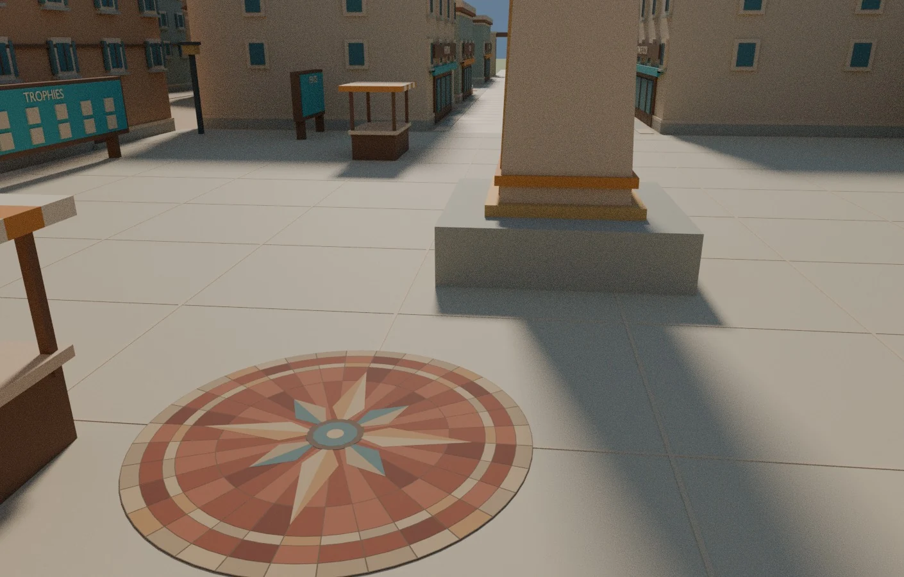
W01 · Warm tile rings, a slate hub and a pale stone compass.
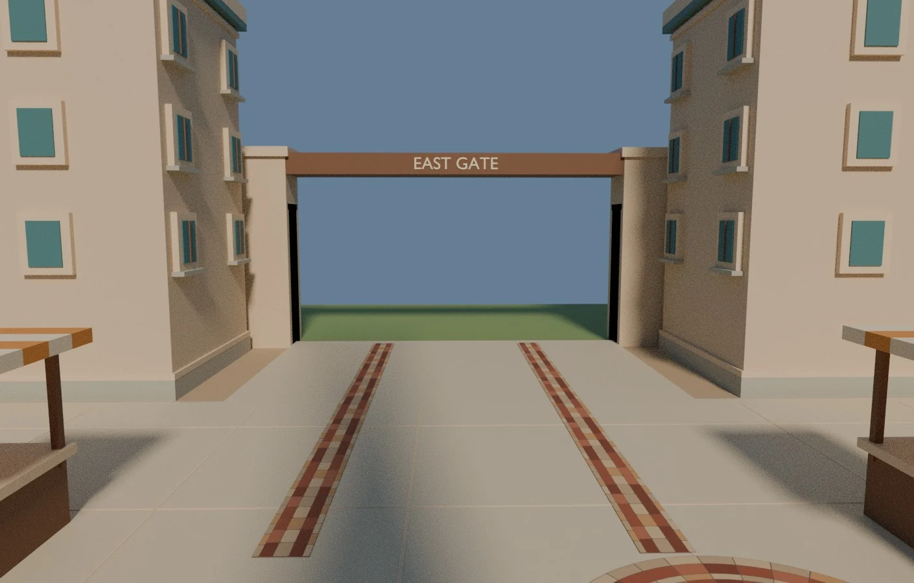
M07 · One ribbon mesh repeated four times per side, across plaza and apron.
Medallion GLB (44,844 bytes) · Ribbon GLB (17,624 bytes) · Rebuild and fit receipt. See also the base paving family and separate wet-finish study. These are Blender fit renders, not an in-game or collision result.
Vector art · E0f/E0g · Combat nameplate
HP, stagger and one status tint
Four example states over the same art crop: steady, burn, full stagger, and shock. HP and stagger use separate bars; the narrow stagger bar gains a stripe pattern when full. Burn and shock share one tinted edge, so they do not stack or add floating numbers in this proposal.
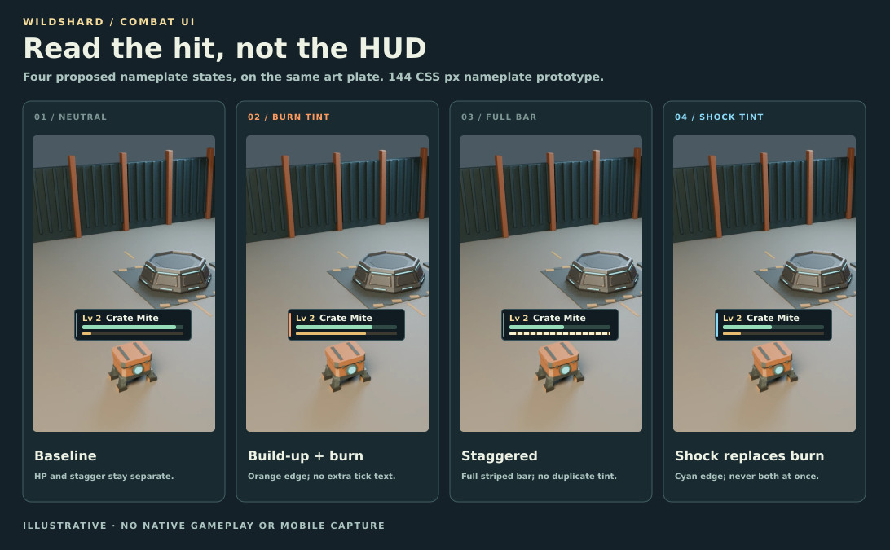
Illustrative vector overlay on one catalogue render. Not a native or mobile capture.
Reusable SVG symbols · 4,992 B. Source and design constraints. No change to damage, timing, status rules, or the in-game HUD.
See the separate stagger and status-nameplate comparison.
Interface art · UI-01 / UI-02 / UI-03 · WSC-SCENE-010
Level up without covering the fight
The level chip and 4 px XP meter sit above the touch-control positions. The fight view illustrates the 2.5-second ring and one-line stat gain. The separate calm view shows the skippable stats card as the design calls for after five seconds without a hit or a new fight.
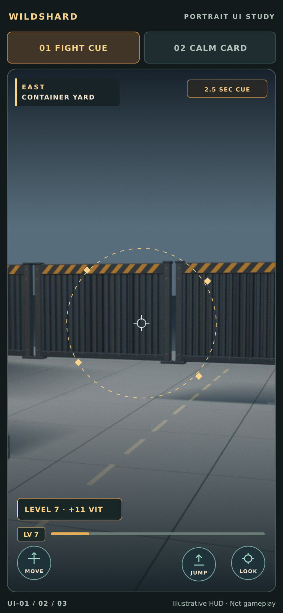
Fight · illustrative cue and persistent XP meter.
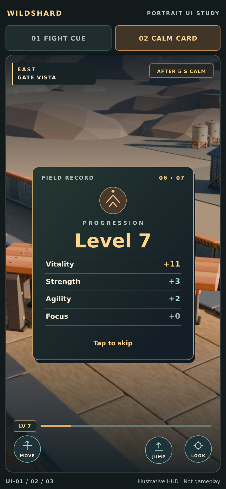
Calm · stats card after the planned calm gate.
Open the two-state portrait review · Choose a state or dismiss the card. The timings are design annotations, not a running combat timer. No game integration or physical iPhone testing.
See the separate FINDS tab.
E0f · UI-10 · Approved Bag layout
Character and Gear share one Bag tab
The Bag opens on Character. Its seven attributes show the level par as a white tick and an arrow for strong or weak aptitudes. The stat sheet is read-only. Gear sits beside it as a sub-tab, without adding a sixth tab to the Bag.
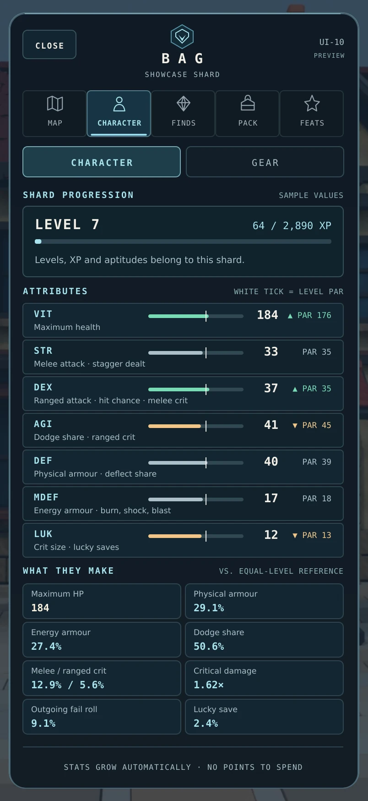
Character · Level 7 and equal-level comparison values are illustrative.
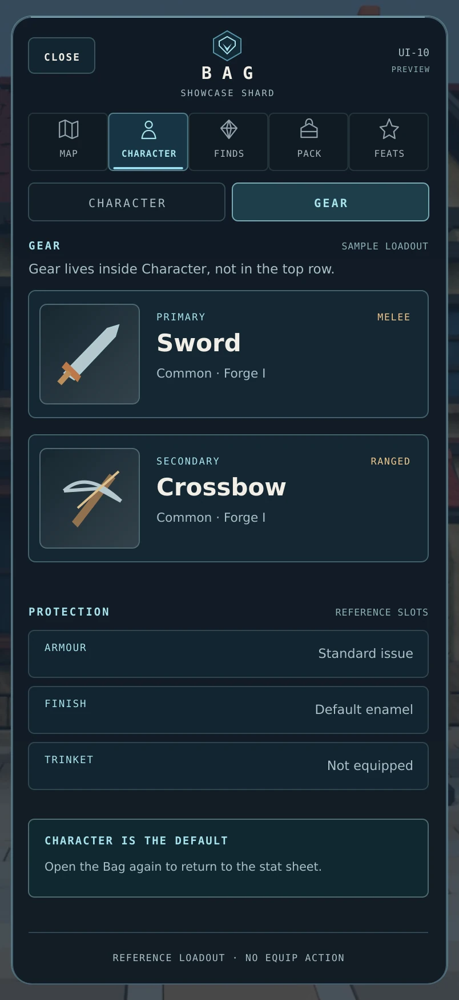
Gear · Sample loadout, not an equip screen.
Editable UI source and checks. Vector boards over an existing public Plaza render. No live Bag, equipment, or progression changes.
W9b / E13 · Portrait Bag · Editable vector art
Finds without mixing up the rewards
FINDS keeps vistas, cosmetic caches and Gold separate. Gold shows the next Calibration Chip milestone, while personal bests distinguish an unfinished course from a real zero. East Scrip chests do not count as cosmetic caches.
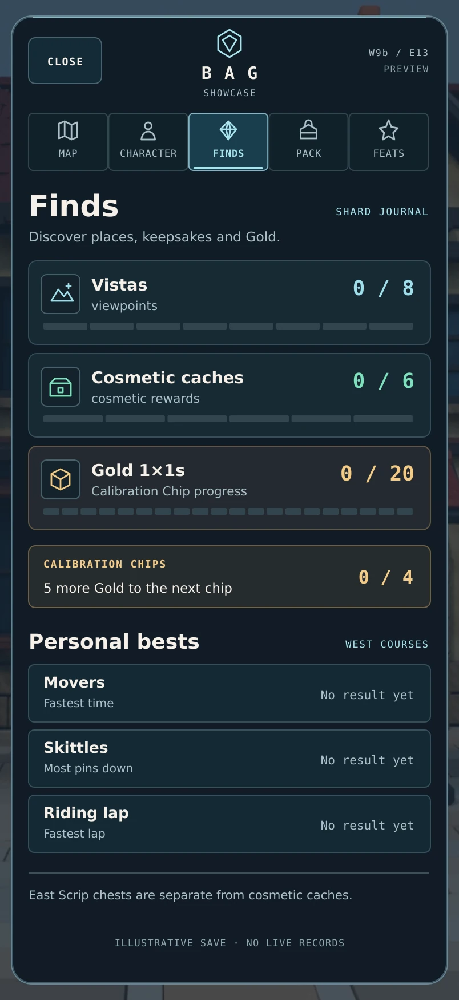
New explorer · No discoveries or saved course results.
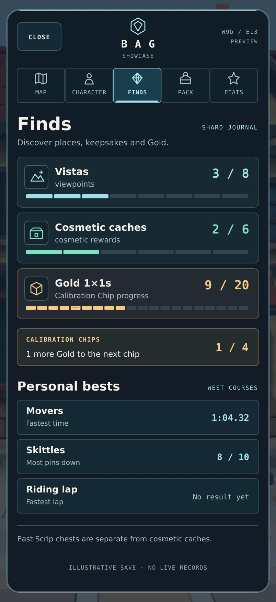
Mid-route example · One Gold short of the second chip.
Character and Gear layout · Editable source and checks. These are two illustrative save states, not live progress, records or a change to the Bag.
East · E10c · Training Vault Room 3
Ride the lift and step out onto the upper landing
Five native headless runs walked across the original bridge, boarded at the lower stop, rode up 4 m in 2.5 seconds, and reached the upper landing without leaving the ground. The frame stays fixed. The box collider matches the moving deck's 6 × 6 m footprint.
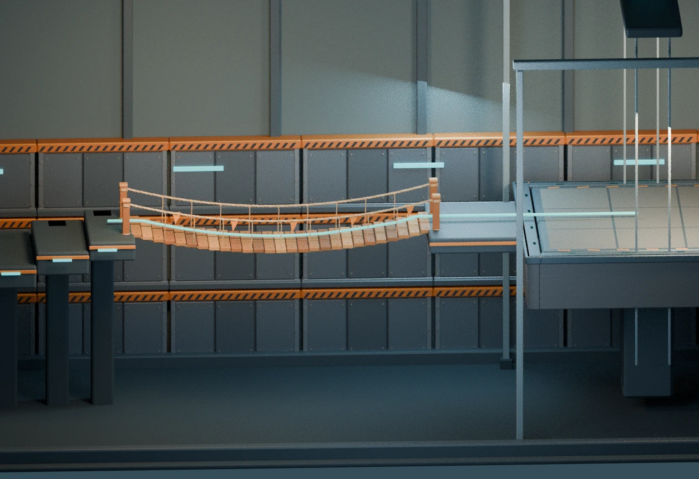
Lower stop at −44.50 m. The player walks straight onto the deck.
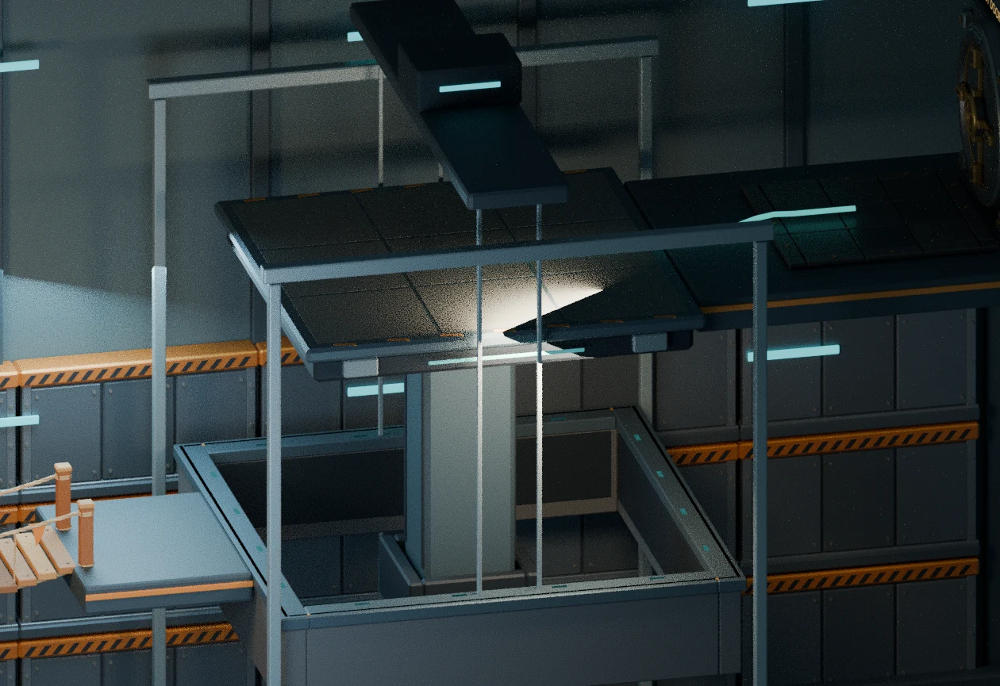
Upper stop at −40.50 m. Blue shows the ride; turquoise shows the walk to the landing.
With no signal the lift remained at the bottom and the control walk fell short of the upper landing. The trigger is a test input; no live lift call, descent, rail safety, checkpoint restore, door interaction or phone playtest. Rebuild the scene and replay the test.
See the moving lift and upper-landing test.
East · E10c · Training Vault Room 3
The original rope bridge reaches the lower lift deck
The stock headless player walked from the last scramble apron across the actual timber bridge and onto the lift at its bottom pose. All five start offsets passed in both directions without a stall or an airborne tick. Without the bridge, the same input fell into the chamber before boarding.
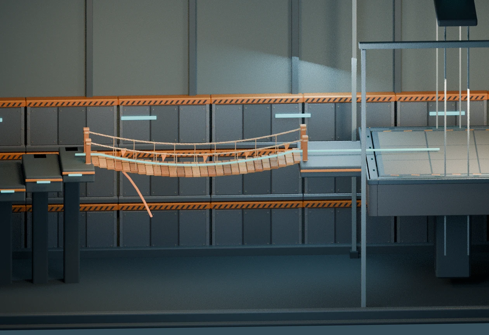
Cyan: measured walk to the deck. Amber: fall control with the bridge removed.
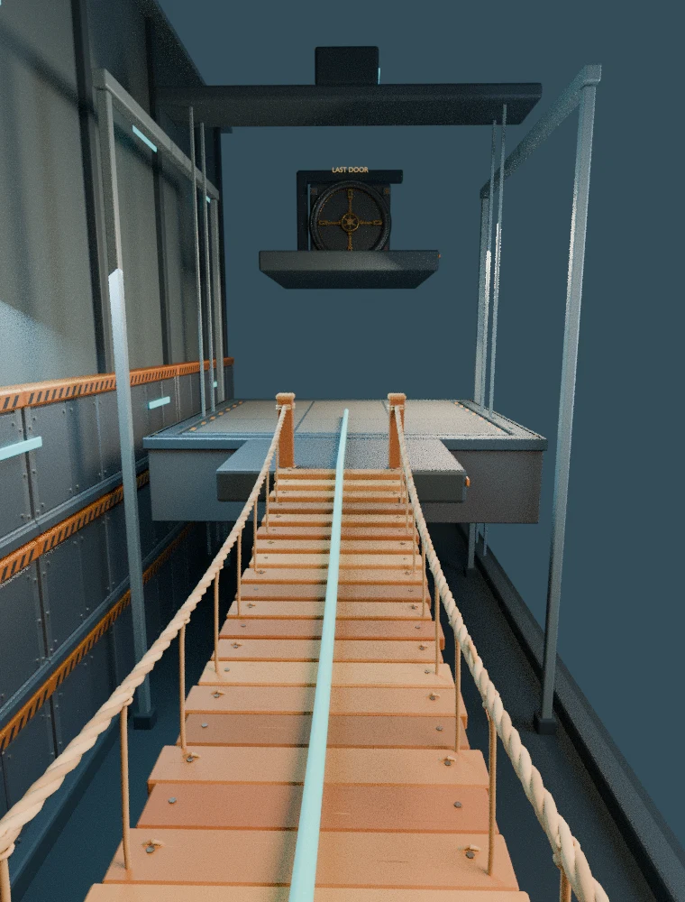
View from the near landing toward the winch, with the original art unchanged.
Leaving decorative ropes, flags and hardware out of collision reduced the tested fixture from 34,825 to 8,112 triangles (77% fewer). Ten matched walks finished in the same number of ticks, with endpoints within 12 mm. This tests straight walking and boarding at the lower pose, not moving rope, moving lift, full-width rail contact, or a live Vault. Editable source and replay.
See the row-by-row timing across all 29 plates.
Blender · WSC-KIT-008 · E10d Room 4 art
Training Vault: the Lockdown chamber
A standalone sealed room for the fourth Vault study. The 12 m wall reference ring, linked metal plates, round bulkheads and paired wall hatches leave the floor clear. Five amber inserts mark the warning stripe; the camera and room lights are identical in both views.
 Idle · Inset stripes are dark, with fixed wall and floor lighting.
Idle · Inset stripes are dark, with fixed wall and floor lighting.
 Warning · Only the insert material changes.
Warning · Only the insert material changes.
Sealed hatch GLB (18,896 B) · Warning tile insert GLB (8,780 B) · Rebuild source and fit checks. No encounter, hazards, native placement or connection to Room 3.
See the walking test from the last landing into Lockdown.
E10d · WSC-KIT-008 · Lockdown visual timing
Vault Lockdown: one full second of warning per row
The original insert repeats across all 29 floor plates. A continuous amber bar warns first. The active state dims that bar and lights a smaller red center and chevrons, so the pattern changes as well as the color. No floor, light, or camera moves.
The timing check covers every row at 30 samples per second. Reimport verified 6.0–14.5 mm of clearance between the insert and the metal surface. Original chamber and insert · Timing source and rebuild. These are staged stills, not live hazards or a phone performance test.
E10c → E10d · WSC-KIT-008 · Vault route test
The last turn into Lockdown
The connector turns 90° after the Room 3 landing to fit the existing chamber in the Vault footprint. The two reused open bulkheads sit 0.99 m lower so the round sills clear the path.
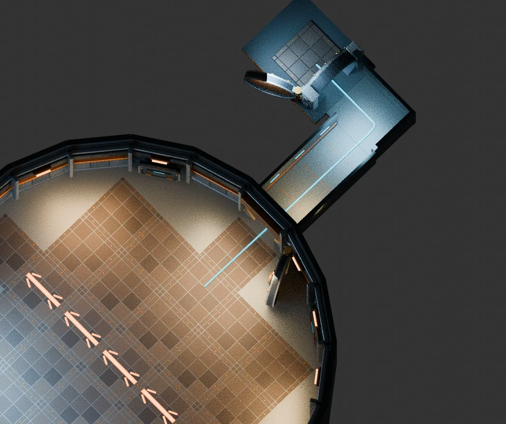
The cyan line plots a real capsule walk from the upper landing to the chamber.
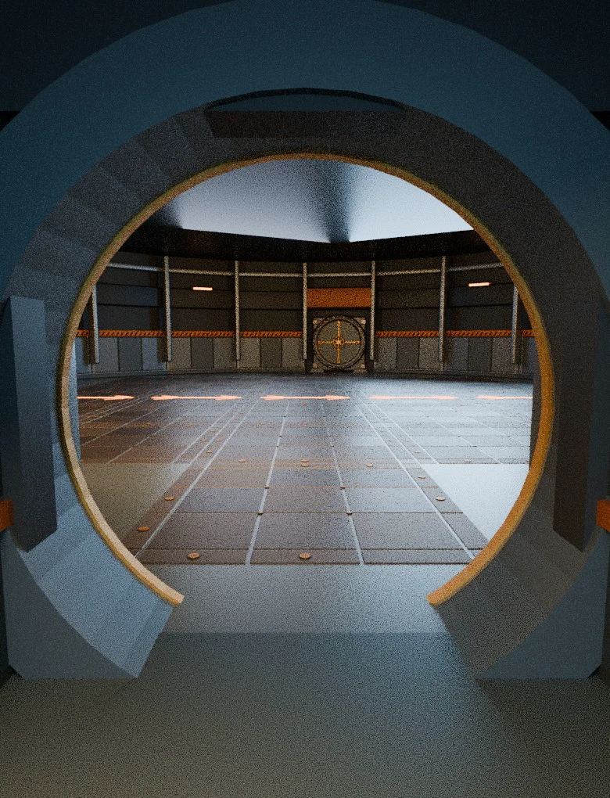
Eye-height checkpoint from the new approach, looking into the existing room.
All ten runs stayed grounded and never stalled, across five offsets each way. The closed door stopped all five controls; removing the access floor made all five fall. Rebuild and measurements · Existing tile warning timing. Static doorway states only: no live encounter, door animation, install, or phone test.
See the native open and sealed doorway comparison.
Blender · E10c / D41 · Room 2 art proposal
Training Vault: the room between puzzle and climb
Room 2 reuses 25 original floor plates, linked wall bays and the existing open round bulkhead. An added threshold meets the unchanged Room 3 entry tread. The joining surfaces matched at all three sampled positions, with a deliberate 3 mm seam at the tread. This is a geometric art check, not movement or collision validation.
 Room 2 floor · 1.70 m eye height, looking toward the climb.
Room 2 floor · 1.70 m eye height, looking toward the climb.
 Roof off · the center line crosses the middle row instead of a long seam.
Roof off · the center line crosses the middle row instead of a long seam.
Threshold GLB · 5,820 bytes / 48 triangles. Only the new three-material transition pieces are in the download; donor parts are linked in the Blender recipe. Layout is proposed. No native placement, Room 1 connection, operating doors, enemies or waves. Rebuild and fit checks · Room 3 section.
E10c · WSC-SCENE-006 · Stock movement test
Vault Room 2: open passage, grounded stop
Five starting offsets in both directions crossed the original 2.432 m threshold onto Room 3’s entry tread. All ten stayed grounded, with no jump or stall. The closed bulkhead stopped all five forward approaches; taking away the threshold made all five open approaches fall. The original GLB is unchanged.
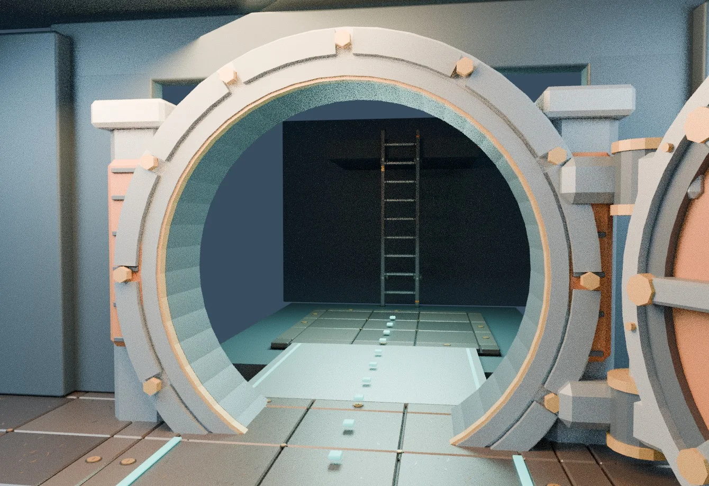
Open · Original floor, threshold and Room 3 tread.
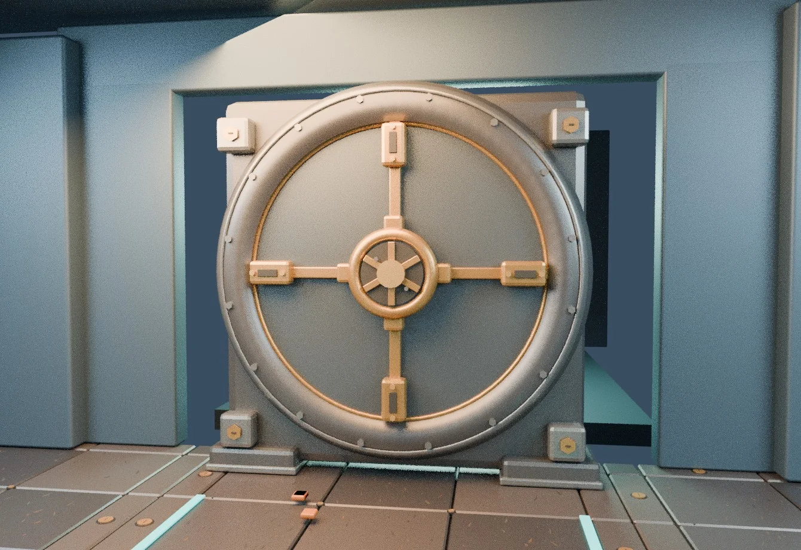
Sealed · The existing closed donor is a static control, not an animated door.
Dots are sampled foot positions added to Blender renders, not live game footage. No encounter, gate trigger, Room 1 connection, phone test or deployment. Room art and threshold GLB · Reproduction and checks.
Blender · W5a · Modular terrain extraction
Hover Park: bowl, four-ramp funbox, and facing quarters
Three reusable terrain GLBs extracted from the existing park scene. A single quarter pipe fills both original slots; the second is rotated 180°. The 24 m bowl inner lip, 1.8 m funbox top and source quarter curves stay in place. The orange D7 launch walls are a separate module.
The three downloads total 83,724 bytes and 1,464 triangles. Blender reimport verified the material and geometry match to the source, with only zero-area faces removed. Ground, paint lines and trees are for the render. This covers the south portion of the park only and does not validate park routing, collision, board motion, scoring or performance.
 All four placements, built from three exports.
All four placements, built from three exports.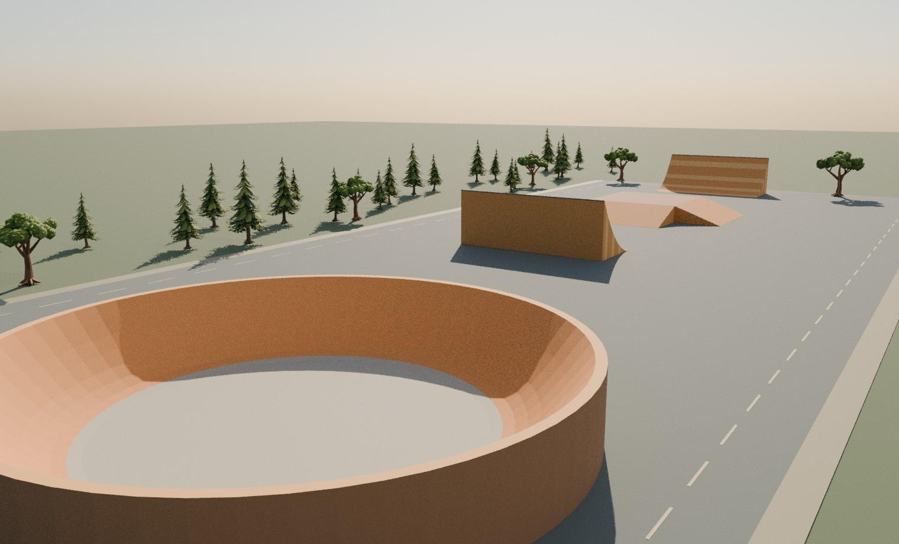
Closer view of the 24 m bowl and its graded inner transition.Bowl GLB · Funbox GLB · Quarter-pipe GLB · Measurements and placements
D7 launch walls · Separate rail kit · Full park staging · Physics Yard and path art
Blender · E06 · Distance model
Orange East yard wall: twelve folds at distance
The simplified bay preserves the original footprint and ground pivot, all twelve pressed folds, and the rear brace silhouette. The original stays available for close-ups. The distance GLB has 1,140 triangles and one material with no textures, down from 9,436 triangles and four materials. The raw model shrank from 821,832 to 82,780 bytes.
Five copies use a 2.375 m pitch. The shoes meet; the upper uprights still have a 102 mm gap. Front and rear pairs share framing and light. No automatic LOD switching, collision, native placement or device performance has been tested.
 Front · Original GLB reimport
Front · Original GLB reimport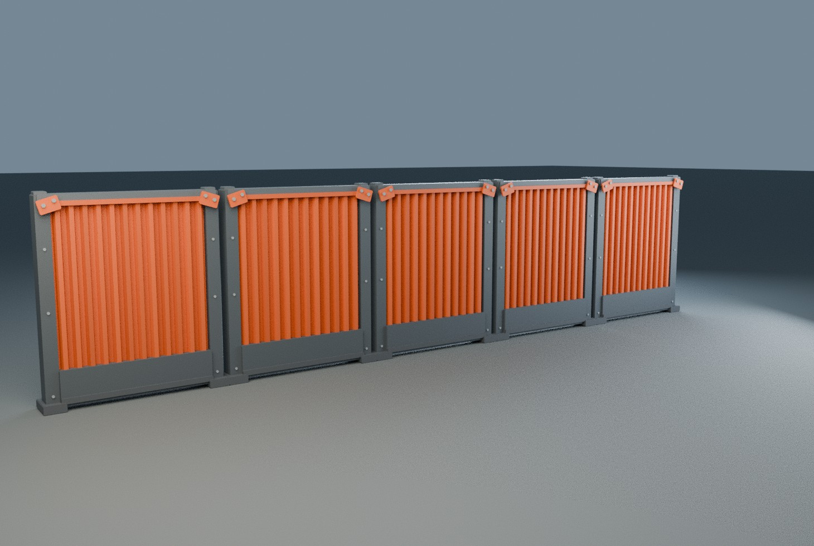
Front · Distance GLB reimport Rear · Original GLB reimport
Rear · Original GLB reimport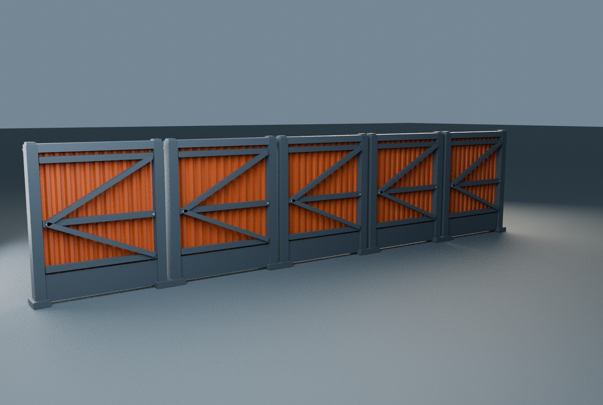
Rear · Distance GLB reimportDownload the distance GLB · Geometry and placement proof (JSON) · Original close reimport
W2a / E1e · Item art and PACK readability
Six salvage parts from the East workshops
The six-item family connects the robot bands to Tinker Rook. Servo follows the existing visual recipe, Tine is an extracted Pallet Jack fork, and Rotor, Nozzle, Rivet plate and Arc coil are labeled concepts. The original PACK mockup informed the icon-scale test, not the 3D geometry.
 Six recognizable forms; display sizes are normalized.
Six recognizable forms; display sizes are normalized.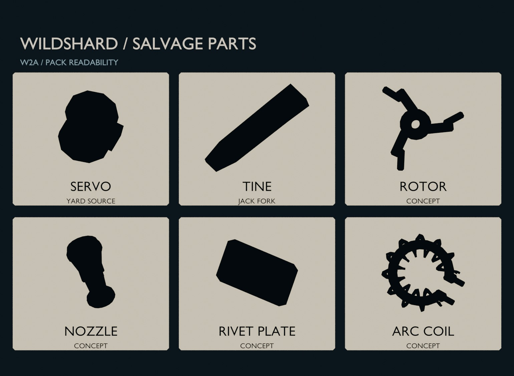
Same camera orientations, in silhouette.Six named meshes in one GLB (242 KB) · Blender rebuild and 48 px check. This does not add robot drops, inventory icons, or shop interactions to the game. See the three upgrade cores.
W2a · PACK item art · Three mini-boss rewards
Hydraulic Heart, Plate Core and Foreman’s Capacitor
Big Pallet’s Hydraulic Heart is for Dodge Servo, the Vault Warden chest’s Plate Core is for Parry Gyro, and Foreman Unit 7’s Capacitor is for Arc Insulation. These are original prop models, not boss meshes or wall trophies. The six existing salvage parts stay intact.
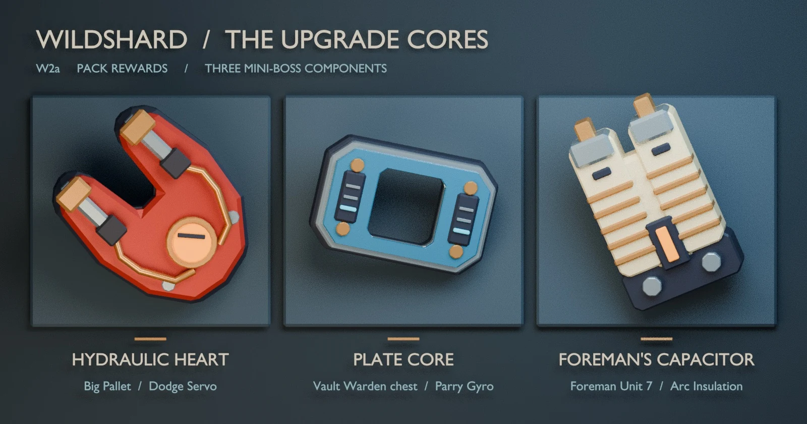
Earned forms, at normalized display size. Each mesh has its own bottom-center origin.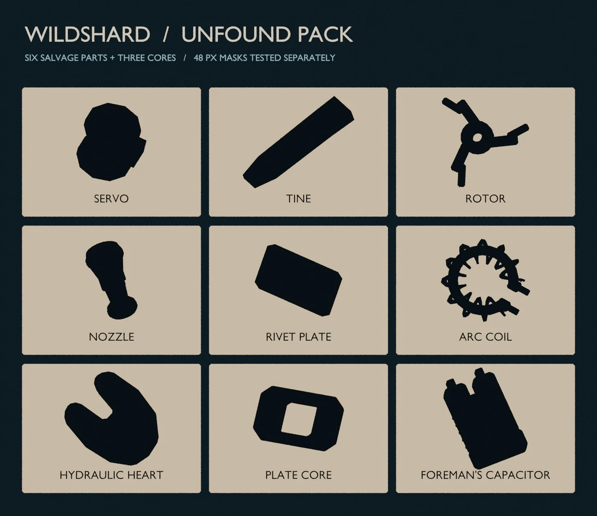
Unfound forms beside the six ordinary salvage parts. Their separate 48 px masks passed the shape-overlap check.Download the three-mesh GLB (286 KB) · Editable Blender source and validation. Not yet connected to drops, recipes or the in-game PACK screen.
West · W2b · WSC-SCENE-002
A parts drawer for Tinker Rook
A shallow walnut drawer with a petrol-colored lining and spare workshop fittings gives the bench a little working stock. It slots in front of the existing sign, 18 mm clear of its foot and 30 mm from the counter edge.
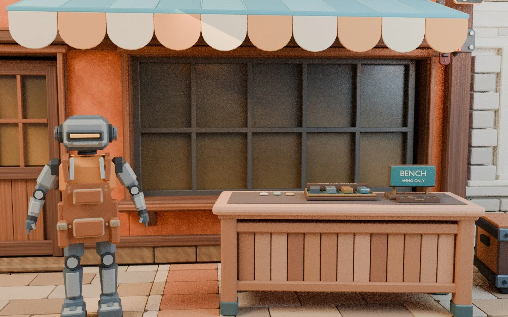
The existing street-side counter, with the new drawer at the right.
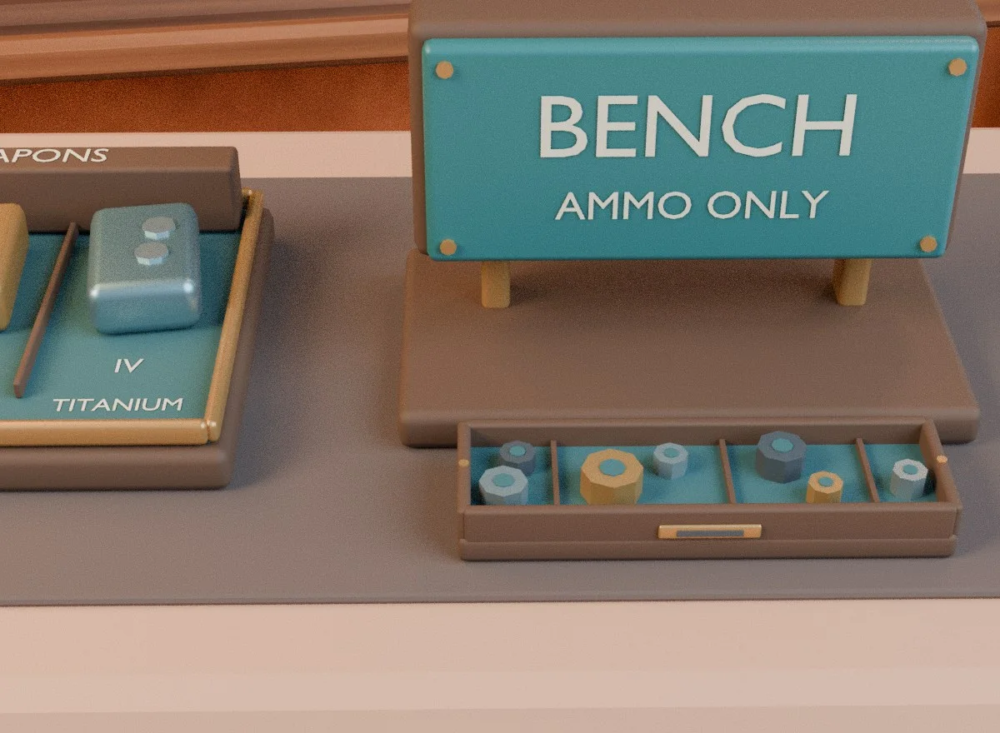
Walnut frame, oilcloth lining and oiled fittings.
69,272 bytes · 1,156 triangles · no textures. Download the drawer GLB · Rebuild the drawer and placement checks. Staged prop only; shop, crafting and pickup behavior are unchanged.
See the grass and teasel set outside the rails.
Blender · W10a · Paddock-to-oval study
West Paddock: mark the way to the oval
The opening and 14 m fence run follow the archived Round 5 paddock. The linked fence modules leave 11.67 m between their widest posts; the two petrol-blue signs stand outside the lane. The surface beyond the exit is context, not a connection to the newer R02 course.
 2.6 m eye height · approach from inside the paddock.
2.6 m eye height · approach from inside the paddock.
 Elevated view · five linked bays per side.
Elevated view · five linked bays per side.
One reusable waymarker GLB · 16,048 B / 165 triangles. Blender recipe and measurements. No mounted traversal, lap trigger or native placement.
W10b · West Riding Oval · Stock-engine bench
A rail the horse actually jumps
At the first westbound jump, the stock engine’s horse runs under the original high pole without lifting. A removable oak apron gives the horse a low obstacle it can detect without changing the striped rail. In the bench, all 15 gallops jumped without a button press; three slow approaches stopped instead of slipping underneath.
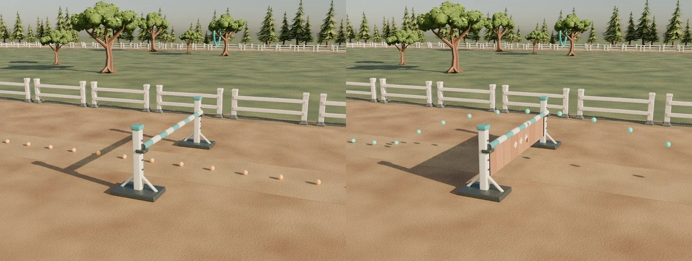
Original at left, apron at right. Dots are sampled horse feet positions added for review.
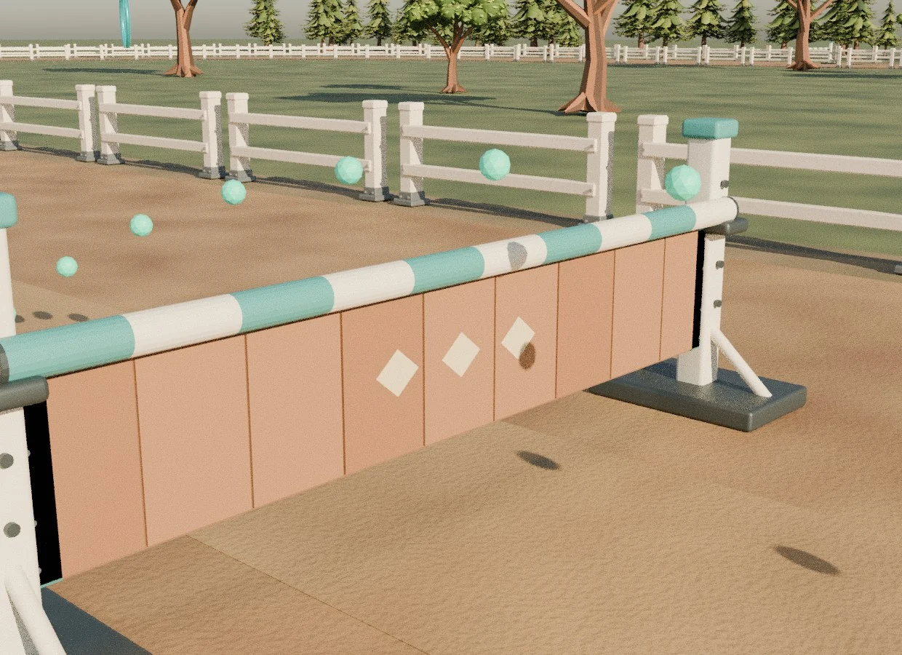
The original beam and posts are unchanged.
Apron GLB (26,228 B) · Editable source and test. This checks one jump with scripted reins, not the full lap, touch controls, checkpoints or the live shard.
See the next lap with all four original rail meshes.
W10b · West riding oval · Mounted movement bench
Eight ring checkpoints and a five-second penalty
Scripted reins took the stock mount around the authored oval from three starting offsets. All three clean runs hit eight horizontal checkpoint bands at 45.469 s. A matched bypass missed only Ring 1 on each run and the replay scorer added exactly five seconds. Partial, reverse and early-finish traces produced no score.
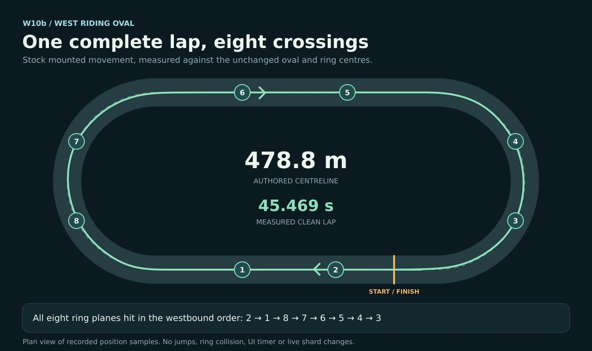
Entire oval · Recorded mounted positions, drawn over the original layout.
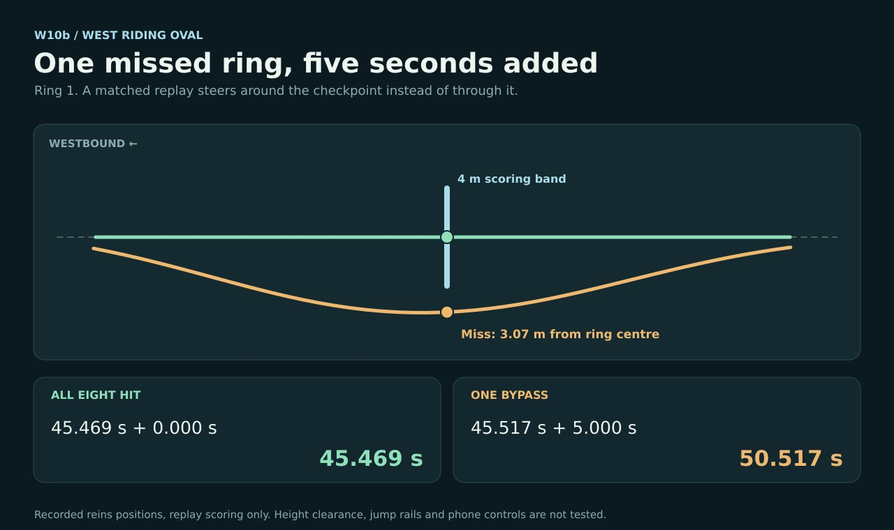
Ring 1 · 45.517 s raw and 50.517 s after the penalty.
Original course art · Replay source and checks. The floor test had no jump rails or ring collision. No installed timer, saved personal best, phone controls or live changes.
West riding oval · W10b · WSC-KIT-005 / WSC-PROP-080
One mounted lap, four rails cleared
All four striped rails stay in their original places. A flush oak apron works at three, but the mount’s conservative clearance envelope missed the first eastbound rail by 31–49 mm. At that rail alone, two oak stands let the same apron sit 0.80 m beyond the beam.
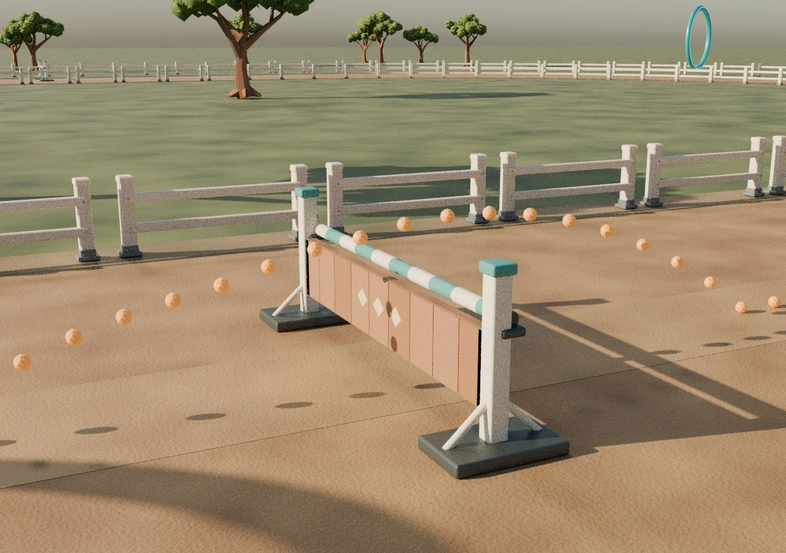
Before · The flush apron leaves insufficient full-length clearance at the first eastbound rail.
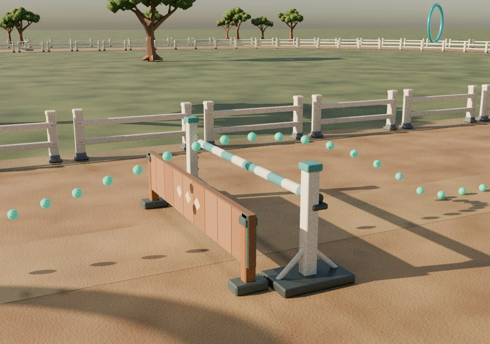
After · Only the apron is moved; the original rail remains fixed.
24 of 24 rail crossings clear in six uninterrupted laps after the fix. Minimum modeled clearance: 74 mm overall, 97 mm at the changed rail. All six runs land every jump at full mount HP; the deliberate missed ring still adds five seconds offline. Two-stand GLB (30,084 B, 352 triangles) · Editable source and measured laps · Lap scoring check. Headless physics at real art placements on a flat test floor; no rider-mesh, phone or shipped course validation.
West Riding Oval · W10b · WSC-KIT-005
First-ring cue and Riding Lap board
An arrow points straight through the gantry toward the first ring in this westbound study. The separate personal-best board sits at the archived pullout, nearly 4.8 m off the track edge. Its face is blank for a replaceable time display.
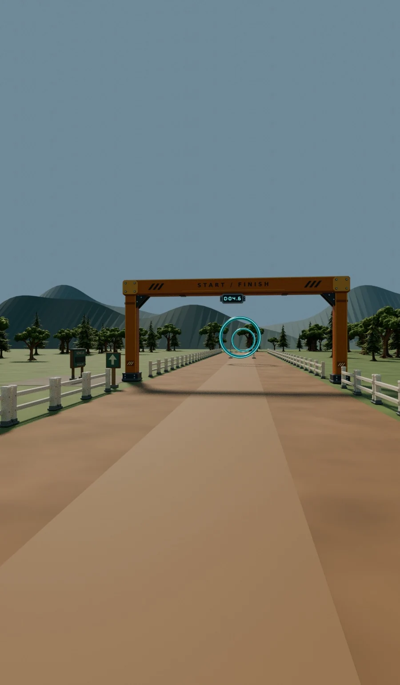
Rider-height view · 25 m from the gantry to the first westbound ring.
Pullout · Blank record face seen from outside the riding lane.
Board GLB · Arrow GLB · Source and fit · Catalogue entry.
Westbound is a visual comparison, not a decision about live direction. The existing overhead timer is not running, and no records or checkpoint rules changed.
Blender · W9a/W9b · Static placement study
The Rock: Gold in the shaft chamber
At the archived point the original one-metre Gold cube sticks 0.4 m through the squeeze roof. In this proposal it sits four metres before the squeeze, 1.3 m clear of the route centerline at its nearest edge. The half-metre hover is unchanged.
Player-height art camera, with light from the shaft above.
Two positions of one pickup. Left: archived roof overlap. Right: clear chamber position. Near wall hidden.
Full cave liner · Original Gold model · Rebuild and overlap checks. No in-game placement or collision changed.
See the two high West vistas.
Blender · W9b · Two seated camera studies
West corner vistas: oval bend and bowl rim
The original bench positions hold, including Round 5’s 2 m offset from each discovery marker. A shared 5.58 m flush pad leaves 5.21 m clear of the perimeter loop at NW and 3.21 m at SW. Both seated cameras are 1.48 m above ground. Native discovery and camera code are unchanged.
Northwest · the riding oval and start gantry.
Southwest · the 3.5 m rim hides the bowl floor. Angling past it preserves the horizon.
Approach · the exact bench on its optional reusable pad.
Flush pad GLB · 26,036 B / 598 triangles. Blender rebuild and layout checks. Paths, vegetation and lighting are visual staging, not proposed changes to native routes.
See the separate rooftop Gold fit.
Blender · W9b · Two elevated West vistas
From the tank roof and the Grapple tower
Vista 02 keeps the original bench position on the 18 m Movers Tank roof and faces the Grapple tower. The old Vista 03 bench position has no deck below it in the current tower art. I kept the discovery anchor as a reference and placed the visual bench 2.50 m away on the 45.05 m deck, facing the zip-house roof. The underlying roofs, rails, bench model and zipline are unchanged.
Vista 02 · Existing tank platform, looking toward the Grapple tower.
Vista 03 · Tower deck, overlooking the zip-house roof and West Town.
Download the two badge meshes (41 KB) · Editable source and seat/sightline checks. The wider renders frame the two seats. No game bench interaction, camera pan, collision or unlock was added.
See the two ground-level west vistas.
Blender · W9b · Camera study
Rock lookout: framing the West Town vista
The original bench stays on the 16 m crown. The candidate seated eye is 1.48 m above it, facing the existing West Town rooftops. The studio pass reuses pines, flowers and fence pieces, with a stepping-stone foreground and off-map haze silhouettes.
 Seated view, from the existing bench.
Seated view, from the existing bench. Approach camera shows the source bench and studio dressing.
Approach camera shows the source bench and studio dressing.Camera and dressing coordinates · Original bench study · Rebuild notes. No in-game camera, placement, bench interaction or FINDS state.
Blender · W9b · Cosmetic proposals
West cache hoverboard finishes
Oval Ochre, Rock Jade, Alley Violet, and North Frost are four possible cosmetic rewards. The original board and default cyan materials are unchanged. None of these finishes has been assigned to a chest or wired into the game.
 Top: four variants selected from the same exported asset.
Top: four variants selected from the same exported asset. Underside: static repulsor colors, not the live pulse.
Underside: static repulsor colors, not the live pulse.Variant-enabled GLB · 126,860 B, including all four material mappings. It shares one unchanged 1,232-triangle geometry payload. Viewers without material-variant support show the default board. Rebuild notes.
See the native deck carry and arrival rehearsal.
Blender · W6a · Moving-platform blockout
Movers Station 4: disc and sweep arm
The existing 9 m disc and sweep arm now export with independent pivots. A separate fixed collar fills the 30 cm gap under the disc; the original course scene is unchanged.
Neutral and adjusted poses from the same reimport. The disc turns 45° and the arm 115° in the test. Turquoise markings are preview-only.Spinner GLB · 75,812 bytes · 1,176 triangles. Pivot and dimensions · Original full course study · Rebuild notes.
Static GLB with movable nodes. No baked speed, collision, deck carry, arm impulses or course behavior tested.
West Plaza · W0b · WSC-PROP-005
Three ways to stock the same market stall
Orchard fruit, bread and potted herbs give the three stalls different silhouettes without duplicating the awning or counter. All three mount at the same point on the existing slatted counter. Each tray uses one material and no textures.
Orchard · apples and pears.
Bread · six baked loaves.
Herbs · potted greens.
Orchard GLB · Bread GLB · Herbs GLB · 190 KB combined. Editable source and counter fit checks. Decorative stock only; no stalls moved, and no pickups or vendors added.
Gauntlet C2 · E11c · WSC-SCENE-007
The Shift Supervisor’s reveal gets a named banner
The existing folded orange cloth keeps its size and mount. Swap only the pale chevrons for a large spark shield and the Supervisor’s title. The 74 KB print follows the folds, and its lowest point stays 5.19 m above the raised lift deck.
From the court · the shield and title face the player's approach.
Raised lift · the deck and banner rig are unchanged.
All 3,347 print triangles passed the visibility check from three eye-height approaches. Geometry and still renders only; no Supervisor actor, wave trigger or phone validation.
Optional print GLB · Editable Blender source and fit instructions · Original court and banner.
West Range · W3a · WSC-PROP-027
The Six Dummies run now drives the practice board in a test
All three native rehearsals ran from the Range Gate through six valid contacts. The clock started at the shared yard entry and stopped at the last contact: 1,309 ticks, or 21.82 seconds. The board starts blank, then shows the best time after a save-and-reload check in the fixture. Lanes and Rifle stay blank.
Before the drill · no preset scores.
After loading the fixture record · 21.82 s for Six Dummies only.
No new mesh or textures. This is a reproducible replay and board fit, not a live score or a persistent player save. Editable source and replay steps · Original face design.
East Stealth Yard · E9 · WSC-KIT-007
Storm Hour: four controls, two readable states
Amber and a lowered lever mark ready. Mint and a raised lever mark lit; the same accepted interaction reveals the existing charged lamp above. The test reuses the kit without new meshes, textures or bloom.
Ready · amber lens, lowered lever.
Lit · mint lens, raised lever.
The stock player walked through the north entrance, used all four corner controls in sequence and left through the west gate with no airborne ticks. Distant, behind-pedestal and repeat taps were rejected. Flat archived proxies and synthetic taps, not live Lights Out, weather or phone validation.
Replay, editable color states and render source · Ground switch GLB and placements.
The Rock · W9a · Cave movement test
The existing crouch doesn’t fit the rock squeeze
The 60 m cave has a 1.10 m squeeze. The stock 1.80 m body stopped from either side in all twelve runs, even with crouch held. A 1.02 m test capsule crossed the same liner from both directions in all six runs without leaving the ground. The shorter body was set before the run, not by crouching in-game.
Stock crouch · The full-size body stops at the throat.
Shorter test capsule · The same route clears both mouths.
Native test and measurements · Original static cave study. No stance switching, terrain carve or live install.
East Stealth Yard · E5b · WSC-PROP-065
A walkable keycard shed
The original shed's right door was solid. This optional shell retains the original footprint and left window, with new jambs and a short ramp over the sill. The existing desk and keycard sit inside as separate models.
Approach · Six test runs walked in and back out without leaving the ground.
Inside · The original card was visible from the endpoint of every run. Lighting is staged for review.
Open shed GLB · Editable source and walk test · Original desk and card. This tests local movement, not pickup, patrols, alarms or the Vault unlock.
West Movers · W6a · Station 5 → Station 6
Clear the beam above the 18 m lift exit
In a headless test, the original overhead beam stopped the lift 40 cm below the exit. Raising the same beam two metres leaves 2.20 m of headroom. All six scripted walks crossed the spinner, boarded the stand-triggered lift, and walked onto the original top deck without a jump or airborne tick.
Original beam · The lift stalled below the upper deck.
Raised beam · The sampled player path continues onto Station 6.
Measured runs and placement dimensions · Original approach insert. No return trip, sweep-arm or railing collision, phone test, or live install.
South Plaza · E8d · WSC-MODULE-017
Nine trophy designs on the original twelve mounts
For the first time these existing pieces are shown together at the archived wall positions. All twelve mounts fit the fir panel; each of the nine candidate trophies clears the frame opening by at least 55 mm. Two unassigned elite frames and the spare are blank. The Whistle and cache marks are proposals, and no slot, unlock or perk has been assigned in-game.
Locked preview · Three authored Night Shift cuts and six simple outlines.
Earned preview · Existing models, independently fitted; nothing duplicated.
Measured placements and source hashes · Earlier plaza composition
See the ride all the way to the top deck.
West · W6a · Movers · WSC-KIT-002
Walk from the spinner to the lower lift
A removable 2.49 m landing insert bridges the gap by the bottom cage. All six stock-player runs walked onto the spinning deck, rode it, and reached the stationary cage without leaving the ground. Without the insert, all six fell below the landing.
Original gap · The amber trace ends below deck level.
Fixed insert · The teal trace ends inside the lower cage.
Landing insert GLB · Source and test instructions. The dots and traces show stock-player poses in a headless test. The lift was stationary and the sweep arm was visual only. No live course or phone test.
See the onward walk into the lift.
West Movers course · W6a · WSC-KIT-002
Walk onto the spinning deck
Three straight walks from the original Station 3 ledge joined the rotating deck without an airborne tick. The matched jumps touched the deck but did not stay grounded at the follow-up check, with or without rotation.
Ground-level comparison · Turquoise walk and amber jump. Trails offset sideways 10 cm for clarity; both start at the same native position.
One measured stance per second · The player gives no movement input.
All four ten-second carry trials stayed grounded. A mid-ride reload matched all 389 subsequent positions and yaw values. Native test and editable Blender views · Unchanged art and GLB. The sweep arm is visual only; no full course, live install or phone test.
Blender · W1a · Rigged noncombat studies
West Plaza: the quest-giver trio
Yard Boss (L1–6) and Shift Boss (L13–20) join the existing Surveyor (L7–12). The lineup follows the original W01 mockup. Shift Boss is a town quest giver, not the hostile Shift Supervisor.
Corrected plaza at the original 1.7 m eye height. Yard Boss alone has the gold marker in this staged level-one view.W1b · A separate bronze fascia labels the quest-giver board. The contracts board shown in the blue-hour study remains separate. Front · Zip and pockets on Yard Boss; bright vest edging and heavy cuffs on Shift Boss.
Front · Zip and pockets on Yard Boss; bright vest edging and heavy cuffs on Shift Boss. Back · The same reimported GLBs turned around.
Back · The same reimported GLBs turned around. Yard Boss GLB: 129,404 bytes, 3,992 triangles. Shift Boss GLB: 152,092 bytes, 4,208 triangles. Both use the shared 21-joint rig, one material and one three-second idle; Meshopt decoder required. Neither has native dialogue, placement or quest logic yet.
Source and rebuild notes
Quest Board fascia GLB (72,680 bytes, 1,263 triangles, shared frame not included) · Earlier view with the borrowed title · Rebuild notes. This is a visual correction, not a quest implementation.
W1b · Approved UI-12 · Portrait visual proof
Quest markers that sit just above the cap
Four states across three matching Blender portraits. The exact three town rigs and plaza dressing stay put. Labels sit above the flat outlined glyphs; each outline is 4 CSS pixels above its actor’s projected cap. No quest flags, minimap, or live HUD are changed.
Available · Yard Boss yellow !; Surveyor locked grey !
Turn-in · The same Yard Boss anchor with a yellow ?
Cleared · Yard Boss’s marker disappears; Surveyor stays locked
Editable source and projection checks · Existing plaza rigs
Blender · W1a · Rigged town NPC study
West Plaza: the Surveyor
The Surveyor shares the stable hand and weapons keeper’s 21-joint rig and color atlas. Reflective tape, a temple optic and a survey slate distinguish the new vest. The optic and slate are costume pieces.
 Decoded and reimported in Blender: 3,920 triangles, one material, one 3-second idle.
Decoded and reimported in Blender: 3,920 triangles, one material, one 3-second idle.Packed Surveyor GLB · 129,432 bytes · Meshopt decoder required. Other town bots · Source and rebuild notes. No dialogue, native figure wiring or placement.
Blender · WSC-KIT-006 · E5b patrol lamp cue
Stealth yard: read the lamp sweep on the floor
One eye-height camera and the same floor, cover and shadows. An amber footprint marks the patrol lamp in the second frame. The edge and far arc fade into the concrete so the floor markings remain readable.
Existing shadow study, without the sweep.
Same camera and light, with the static sweep.
Download the unlit sweep GLB · 9,008 B / 312 triangles. Rebuild and import checks. This is normal alpha blending, not a light source, animated patrol or vision volume.
Follow-up: the yard’s alarm gates and status signal.
See the two leaves in motion.
East Stealth Yard · E5b · WSC-KIT-006
Yard gates: clear and alarm
Two instances of one sliding leaf span each original 16 m opening. Both retract into side pockets to clear the approach. The post signal uses a round cyan lens for clear and a square red lens for alarm, with separate material controls.
Clear · The same gate leaf retracts behind each side of the opening.
Alarm · The two leaves meet across the marked approach.
Gate leaf GLB · Status signal GLB · Source and fit · Catalogue entry.
All 318 geometry sample lines cross the open pose and hit the closed leaves. This checks the endpoint visuals, not player collision, detection, the lock timer or Keycard behavior. See the separate Band 5 slam effects.
East · E5b · Native crossing rehearsal
The gate can slide without dragging the player
Opening the exact moving collision mesh while the player stood against it pulled them sideways by up to 8.13 m. Four of six no-retreat walks missed the open path. A fixed blocker avoids tying player motion to the sliding leaves.
Shut for 20 s in the fixture · The stock player stops before the plane.
Amber: moving collision drags sideways. Mint: fixed blocker releases. Lines connect measured endpoints.
The blocker releases once the visible gap reaches 2.05 m. All 12 blocker tests stayed grounded across both original orientations; held input crossed 45 ticks into opening. Exact samples and re-render instructions. This is not live collision, stealth, or late-entry closure validation.
See the stock player collision comparison.
East Stealth Yard · E5b · WSC-KIT-006
The alarm doors close together
The same two leaves now glide inward in 2.4 seconds and retract in 2.8 seconds, using a single shared mesh set. Three.js sampled both clips at the original north and west openings, 626 samples per gate. The moving gap stays centered and closes without crossing leaves.
1.2 s · 8.12 m between the moving leaves.
2.1 s · About 70 cm left before closure.
Animated pair GLB (60,876 B) · Editable source and fit checks · Original leaves and post signal. These are art timings, not an installed alarm, lock timer, or collision proof.
East · E5a · Reusable effect geometry
Read the slam before the wave arrives
Twenty-four amber dashes mark the boundary during the one-second warning. A continuous, pale-edged ring then travels outward. Each export is one unlit transparent draw with a centered pivot; the game can scale it to its chosen radius. This is effect art, not a new Riveter, attack, or jump test.
Warning · The dashed boundary from a 1.70 m camera.
Wave · 0.34 seconds into the illustrative propagation.
Warning GLB · Wave GLB · Editable source and Three checks. Review radius and wave speed are provisional.
E5b · WSC-MODULE-024 · Distance mesh
Stealth Yard floodlight: keep the eight lenses, cut the geometry
The lighter tower keeps the original mount, braced outline and lamp panel. It uses 5,412 triangles instead of 18,028 and cuts download size by 43%. At least 97.38% of the silhouette overlaps the original across twelve sampled directions. The reflector and lens bounds stay within 1 mm.
Original tower, matched eye-height view.
Reduced mesh, same yard placement and lighting.
Far tower GLB · 819,712 bytes. Editable source and reimport checks. Optional static swap, not installed. No change to the lamps, shadows, or collision.
East · E5b · WSC-PROP-058
The same yard container with 89% fewer triangles
The far mesh keeps the original bounds, pivot, orange paint, ribs and locking bars. It drops small labels and bevel details: 1,188 triangles and 68,712 bytes, versus 10,849 triangles and 637,956 bytes for the near mesh. Keep the original for close cover reads.
15 m · the near mesh retains smaller paint and latch details.
32 m · the corrugations, door breakup and outline remain distinct.
Download the far GLB · Original container-yard study · Rebuild and silhouette checks. No distance switch, collision or phone performance change installed.
Compare the far shipping-container mesh.
Compare the optional far tower.
See the separate patrol lamp footprint on the same floor.
Blender · E5b · Lighting readability test
East container yard: shadow pools
The same yard with the pool decals on and off. The container, cover, fence, floodlight and shed are existing GLBs. Dynamic cast shadows are disabled in both frames to isolate the effect of the reusable decal.
 Shadow pools on. Each marked patch uses the same vertex-alpha mesh.
Shadow pools on. Each marked patch uses the same vertex-alpha mesh. Shadow pools off. Same camera, fill lighting and props.
Shadow pools off. Same camera, fill lighting and props.Decal GLB · 6,808 B, 220 triangles, no textures. Placement and donor measurements · Rebuild notes · Desk and keycard.
Studio layout only. The decals do not make the player hidden; no patrol, collision, quest, or phone performance tested.
East · E8b · Pit environment
Both entrances to Big Pallet’s pit
Four amber shoulder lanterns mark the existing gaps. The rim, original floor, and interior pillars are unchanged. The glass is part of the model; it does not install runtime lights.
The straight approach stays clear between the two shoulder fixtures.
One model reused four times. Pale paving is staged for review.
All ten stock-engine routes through the pit stayed grounded and matched the no-lantern controls. The four shoulder approaches stopped at the actual lantern mesh. No boss, stun, or installed encounter.
Lantern GLB (45,704 bytes / 728 triangles) · Original pit kit · Editable source and replay.
See the marked entrances and walk tests.
E8b · Band 2 environment · Static fit
Big Pallet’s pit
Rebuilt the 24 m earthen floor and split, black-and-ochre rim from the original layout and E07 art. Both mouths measure 5.94 m at the sampled height. Two trial pillars sit aside of the north–south lane; all 342 center-lane rays stayed clear. The stacked pallets in the renders show context but aren’t bundled.
Entry · Two trial pillars flank the clear center lane.
Above the pit · The original opposite entrances and the raised rim.
Pit GLB · 330,292 bytes / 10,488 triangles. Editable source and checks. Environment kit only. No boss, combat, native collider or live placement.
E3 · Plumb Drone · 700 ms warning art
Band 3: follow the Plumb Drone's warning down to the floor
A narrow amber beam shows the direction in the air. Dashed floor edges and chevrons keep pointing toward it when the far end is off screen. The pair grows wider as the cue locks, then clears at 700 ms. Both are unlit, with no bloom or dynamic lights. The exact existing pillar screen and perch are unchanged.
Acquire · Thin core with already visible lane edges.
Lock · Wider cue, same 15 m span and camera.
Beam GLB · Floor cue GLB · 35,960 bytes / 276 triangles combined. Editable Blender source and Three.js checks. Preview only: no drone rig, damage, live integration, or phone acceptance.
E3 · Band 3 · Static environment art
A high maintenance perch for the screen post
Two half-saddles fit the outer face of the existing screen post without crossing into the canvas. The 1.24 × 1.02 m traction pad sits 4.20 m above the base. The add-on leaves all 99 sampled ground-level sightline rays clear and adds 1.465 m to the right-side footprint.
Context · Original screen and opening unchanged.
Detail · Reimported 1,380-triangle perch.
Perch GLB (83,208 B) · Editable source and fit checks. No drone, docking behavior, collider, or live placement.
East · E3 · WSC-SCENE-005 companion study
Band 3: nineteen walk-through screens
The same raised canvas screen fits 19 original Round 5 anchors. Eight are left empty because the full footprint approaches the archived pack center by less than 8 m. No anchors were moved and no mesh was duplicated in the download.
At 1.72 m eye height, the opening stays clear. The apron is review scenery.
The accepted anchors together. Surface and scrub are review scenery.
On the flat Engine 0.1.44 test floor, 114 crossings passed beneath the screens and 38 direct approaches stopped against posts. Three grounded round trips ran about 75–78 m each from the archived entry to the first accepted screen and back. No final terrain, flight, or encounters installed.
Original screen and GLB · Earlier entrance framing · Editable placement and replay.
East · E6 · Three.js visual study
Band 6: the Arc Sentry’s 0.6-second warning
Two pilot arcs grow inward, join into a cyan spine, and stop at 600 ms. The cue is attached to a review mount and uses one reusable mesh with no bloom or scene light. The final 10 m portrait has a matched hidden-cue control, not a device playtest.
Left to right: 75, 315 and 595 ms. Stills rendered from the sampled Three geometry.
402 × 874 at 10 m · 299 cue pixels changed versus the matched off frame.
Editable Three source and render checks · Band 6 cover. Visual only; no Sentry, attack or shock behavior.
East · E6 · Band 6 sight screen
The same tall screen at one-third the triangles
The optional far model keeps the same 12 × 3 × 0.6 m envelope, six bays, copper corners and cyan lenses. Flat vent details replace recessed geometry. It uses 968 triangles instead of 2,916 and is 60% smaller on disk.
Original model, from about 30 m.
Far model, same camera and lighting. Original low cover is unchanged.
Projected silhouette overlap was at least 99.71% from six angles. All 73 front probes at eye height were blocked in both meshes. This is render geometry only; keep original collision. No distance switching, frame-rate, or live game change. Far GLB · Editable source and fit receipt.
See the Band 6 half-wall fit.
Blender · E1d / E13 · East reward prop
Band 1: Scrip payout chest
A low steel case with an amber lid and a physical SCRIP plaque, separate from the West cosmetic cache. The 1.4 m-wide shell is 1.0 m deep and 0.9 m high; the archived proxy is 0.9 m deep and 1.0 m high. E1d calls for 15 Scrip per chest; the shell does not hard-code an amount.
 Detail · Amber lid, physical badge and status lights; static closed model.
1.7 m approach · Both Round 5 chest-to-cover offsets are preserved; the crate, terrain and facing are staging.
Detail · Amber lid, physical badge and status lights; static closed model.
1.7 m approach · Both Round 5 chest-to-cover offsets are preserved; the crate, terrain and facing are staging.
Chest GLB · 128,684 bytes / 1,695 triangles / no textures. Rebuild notes. No opening, payout or placement was added to the game.
See the fit at both original Band 1 positions.
E1d · Band 1 payout chest · Optional articulated asset
The East Scrip chest has a hollow chamber and a working hinge
The existing closed GLB is unchanged. An optional 110,120-byte version adds a hollow interior and a 0.90-second clip that opens to 102°. Its closed bounds match the original. The lid leaves the chamber clear, verified in Blender and Three.
Closed · The same footprint and face.
Open · Clear chamber and gasket-lined lid.
Animated GLB · Editable source and reimport checks · Original Band 1 placement study. No interaction, payout or placement changes.
See the two original Band 2 locations.
East · E1d / E13 · Round 5 placement check
Both Band 1 payout chests fit their original positions
The existing opening chest seats at the two archived coordinates without moving the nearby cover or rotating the case. At each position, 109 sampled lid poses cleared the reconstructed cargo and spawn volumes. Both positions have a clear 0.90 m-wide approach from the south in the blockout.
Tier 2 flank · (103.248, −89.056) · At least 0.939 m from nearby proxies during the sampled opening.
Tier 3 flank · (102.685, −103.456) · At least 1.188 m from nearby proxies during the sampled opening.
Editable Blender setup and exact placement extract · Existing animated GLB. These are blockout checks with review materials, not installed chests or a test of the planned 15 Scrip rewards.
East · E13 · Band 2 reward prop
Band 2: two more chest placements, same model
The articulated Scrip chest fits both original Pallet Jack band anchors at zero yaw. Each keeps a 0.90 m-wide approach clear from the south. The existing 0.90-second lid animation cleared nearby blockout cover and spawn envelopes in all 109 sampled poses at each anchor.
First anchor · Minimum 1.225 m from nearby proxies during opening.
Second anchor · Minimum 1.453 m from nearby proxies during opening.
Existing animated GLB · Band 1 fit · Rebuild and placement proof. Staged blockout views, not a live placement or payout.
Continue to the two original Band 3 chest anchors.
East · E13 · Band 3 reward prop
Two Scrip chests in the drone fields
The existing articulated chest now has a checked fit at both original Band 3 positions. At each spot, all 109 sampled lid poses and the full 0.90 m-wide front approach cleared the nearby Round 5 cover and spawn proxies. No new GLB.
First anchor · Closed chest at the original Band 3 position.
Second anchor · Existing lid animation, opened at the other Band 3 position.
Existing animated GLB · Band 2 fit · Rebuild and placement proof. Staged Blender renders. No live reward, route or encounter tested.
West · W9b · WSC-PROP-049 companion study
A hidden cache behind the Rock
Fractured shale beds hide the existing animated chest from the Rock side. The chest stays at the original Round 5 position, and the opening between the rocks stays walkable from the south. Only the outcrop is new game art; the path, grass and distant shelves stage the images.
Discovery view · Original chest beside the new outcrop.
Original lid clip · All 57 sampled poses clear the rock.
All 78 Rock-facing sample rays lost sight of the lid. Three stock-engine approaches reached the prompt and returned without leaving the ground. Outcrop GLB (77,936 bytes / 1,400 triangles) · Editable source and test receipt. No live terrain, reward, or collection wiring.
West · W9b · Hidden cache placement
A cache you find off the racing line
A dry-stone screen hides the original hinged cache from the west riding bend and leaves the south approach open. The chest stays on its exact Round 5 anchor. Only the stone screen is new art.
Discovery view · Original chest, new stone screen.
Original opening clip · 57 checked poses clear the screen.
The screen blocked all 78 sampled riding-bend sightlines and stayed 19.1 m from the running line. Three stock player approaches reached the prompt; it stayed hidden at a screened position within the same range. Screen GLB (176,412 B, 2,240 triangles) · Editable source and checks. Placement and prompt proof only, no interaction or rewards installed.
Blender · W11a / E9 · Effects tests
Storm Hour: rain and pavement splash
Two separate, texture-free assets: a static 6 × 6 × 4 m stamp of wind-slanted streaks and a short animated pavement splash. The frame uses the unchanged beacon and charged lamp as a warm reference.
Blender study with instanced rain and frozen splash samples. Wet paving, background and lights are studio dressing.Rain tile GLB · 17,680 B · 304 triangles. Splash GLB · 8,304 B · 104 triangles · 0.833 s animation. Original beacon · Rebuild notes.
No runtime rain movement, surface detection, weather scheduling, mobile performance check, or Lights Out integration.
Blender · W11a · Reimported motion test
Course flag: wind loop
The 2.5-second clip animates only the existing orange cloth, hem and hoist; the original pole and hardware stay unchanged. Use it instead of the three static cloth meshes at the same model transform.
 Frames 0, 17 and 35 from the exact reimport. The clip’s first and last poses match.
Frames 0, 17 and 35 from the exact reimport. The clip’s first and last poses match.Animated cloth GLB · 204,108 B · 2,168 cloth triangles. Original flag · Rebuild notes. No live wind coupling or mobile benchmark.
W7a · Grapple opening · Native engine bench
First grapple pole: give the player somewhere to land
See the continuous two-hop test.
The first hoop is visible from the original start and only 25.57 m away. Stock grapple still refuses it because there is no safe landing high enough. A separate steel perch behind the pole makes the opening hop work without moving the hoop or increasing the 38 m range. The real player capsule reached the 4.40 m platform in 2.35 s from center, and all 25 nearby test starts landed.
Original start at 1.70 m eye height · Cyan dots follow the measured route.
Arrival · Amber marks the measured landing on the export.
Perch GLB · 162,060 bytes / 3,180 triangles. Editable source and native checks. One isolated hop; no production installation, other hooks, timer, or phone playtest.
Continue to the tank roof proof.
W7a · Grapple opening · Native engine bench
West grapple: land two poles without a reset
The first perch now leads into a second landing tower behind the original 16 m hoop. The stock claw took both hops on the same player in 25 of 25 runs. The second hop took 156–157 ticks (about 2.6 seconds from fire), with at least 293 mm of deck margin beyond the player capsule. Remove the new tower and the second hoop stays visible and in range, but the claw will not lock.
Same center replay from the ground to both decks. Ribbons are review overlays.
Second deck: 3.4 × 2.6 m at 8.2 m above grade.
Second tower GLB · 57,016 bytes / 972 triangles. Editable source and replay checks. Two of five hops in a headless test, not a live or phone playtest.
Continue from the roof to the fourth hop.
W7a · WSC-KIT-004 · Native engine bench
West grapple: the third pull gets onto the tank
The center of the tank is 49.41 m from the second perch, out of the stock claw's 38 m reach. A raised saddle at the near rim cuts that to 32.49–32.71 m. All 25 runs took three hops with the same player and settled on the original roof, leaving at least 0.54 m beyond the player capsule to the conservative roof edge. No edits to the existing roof, rail, shell or bridge.
Pole two to the tank. The mint line is an overlay from recorded positions.
The original guard stays in place. The old center ring in the background is not the active anchor in this test.
Rim saddle GLB · 51,952 bytes / 1,160 triangles. Editable source and replay checks. Three of five hops in headless testing, not installed gameplay.
See the full climb to the summit.
W7a · WSC-KIT-004 · Native engine bench
West grapple: walk the rim, then land on the mast deck
After the third landing, the player walks about 1.7 m across the original roof to clear the view. The new freestanding deck catches the fourth pull without moving the mast. All 25 runs landed four hops on the same player, with grounded roof steps and at least 0.319 m of deck to spare beyond the capsule. Without the deck the visible mast won't lock.
Next move from the tank, recorded in the same native replay.
The original ring and nearby final tower are unchanged.
Mast deck GLB · 88,124 bytes / 1,548 triangles. Editable source and replay checks. Four of five hops in a headless bench. Fifth anchor is in range by distance only; no live install or phone test.
W7a · WSC-KIT-004 · Native engine bench
All five pulls to the original tower summit
The old ring is in range but hidden behind the summit. The zipline anchor is visible, but aiming at it drops the test player onto a lower deck. The new ring sits off to the side and lets the stock claw pull past the guardrail. All 25 runs climbed from the ground to the original 45.05 m summit without resets.
The measured fifth pull. Both zipline endpoints stay where they were.
Touchdown on the original top floor. The route is a replay overlay.
Outboard ring GLB · 33,136 bytes / 872 triangles. Editable source, controls and exact landing checks. Headless ascent only, not wired to the trolley, course clock, or phone controls.
See the first pole landing test.
Blender · West W7a · Traversal art study
West grapple: one reusable hoop
The cyan hoop and mint channel are separated from the existing post without remodeling. The origin is now the center of the ring; local glTF +Z faces front. The short roof mount is a Blender placement example, not part of the GLB.
 Exact geometry reimport: 2,112 triangles; 40,196 bytes.Moving the roof reference from the old center to the rim reduces its distance from pole 2 from 51.05 m to 37.02 m. The mast and tower references remain 41.03 m apart. These are not takeoff-eye distances or sightline tests. W7b zip attachments are unchanged.
Exact geometry reimport: 2,112 triangles; 40,196 bytes.Moving the roof reference from the old center to the rim reduces its distance from pole 2 from 51.05 m to 37.02 m. The mast and tower references remain 41.03 m apart. These are not takeoff-eye distances or sightline tests. W7b zip attachments are unchanged.Hoop GLB · Placement study JSON · Blender rebuild notes
East · E10c · Vault Room 1 · WSC-PROP-064
Keep the crate square at full push
The stock player can still slide the crate sideways and forwards. Fixing its rotation and lining it up with the middle of B made all 12 scripted pushes settle fully on the original plate footprint. The player crossed the test doorway, then pushed the crate off and the blocker returned in every run. The old setup passed three of 12.
Full input · The original crate rotation and offset leave B unweighted.
Full input · Fixed yaw and centered approach put the crate wholly on B.
Replay instructions · 48-run comparison. Both images use recorded physics poses; the pictured bulkhead stays static. No change to the meshes, live room, touch controls, or multiplayer.
See the full-input push test.
E10c · Training Vault Room 1 · Stock-engine bench
Recessed plates for the Vault crate puzzle
The original pressure plate rises 171 mm above the floor. Nine stock-capsule approaches left the spare crate short of the tread. The recessed option keeps the same footprint and gives the crate an uninterrupted floor. All three trials at the slower test input parked the crate on B, opened the test gate, and restored the blocker when the crate was pushed off again. Six faster trials fell short.
Raised original · the crate stops before B.
Recessed comparison · both crates parked. Blender pose from engine data, not an in-game screenshot.
Recessed insert GLB (53,656 B) · Editable source and reproduction · Original room. No live room, door animation or phone playtest.
Blender · E03 · Distance model
East plant pot: near and far
The original dark pot and broad leaves are unchanged. For distance, a new vertex-colored model keeps the overall shape in one glTF primitive, with no textures.
11,068 triangles near; 680 far. The game does not switch between these models yet.Original GLB · 232,684 B · Distance GLB · 53,604 B · Blender rebuild notes
Blender · W10 paddock · Coat study
Biscuit: two coat directions
Amber Bay and Winter Dun are palette studies rendered on the existing Nalati saddled horse. Both preserve the 24-joint rig and 5,000-triangle body. Amber Bay is the warmer starting point. The orange head armor from the riding mockup is not part of this study.
 Actual Blender reimports. No gaits, mounting, or in-game deployment tested.
Actual Blender reimports. No gaits, mounting, or in-game deployment tested.The derived test models were 285–286 kB, over the proposed 180 kB budget. Source and rebuild notes
Blender · W01 street furniture · Static art
One lantern, two mounts
The existing forged wall lantern stays unchanged. A new floor-standing post has a flat mounting face that accepts the same model. The Blender reimport verifies the fit; no placement or game lighting was changed.
Post GLB · 37,232 bytes · 620 triangles. Existing lantern GLB · 206,356 bytes. Place the lantern at (0, 2.27, 0.182) m in the post’s glTF coordinates.
 The separately exported post and original lantern, reimported together.
The separately exported post and original lantern, reimported together.
See three interchangeable stock trays for the same stall.
Blender · WSC-PROP-005 · Cloth animation study
The market awning in a light breeze
The existing freestanding stall keeps the same rigid frame and fabric at rest. Its stripe panels and scalloped hem have one three-second keyframed loop. The two shown peaks are about 13 cm apart at the most mobile point. This is not the separate shop-door awning or live wind.
 Original stall frame with the moving canopy sampled at the first peak.
Original stall frame with the moving canopy sampled at the first peak.
Frame 22 · Hem lifts.
Frame 46 · The hem settles past neutral.
Animated canopy GLB · 269,708 bytes, 5,976 triangles. Replacement cloth only; no stand included. Rebuild notes · Original static stall.
East Gauntlet · E11c · Native rehearsal
C2 reveal lift: four metres up
A player walked onto the existing 6 × 6 m deck at floor height. A test signal raised the deck exactly 4 m in 2.50 seconds. Contact held through all 150 ticks; a halfway save resumed with the same motion and player position for 115 checked ticks.
Start · The marker shows where the player stopped on the deck.
Top · The actual sampled lift height, rendered with the existing C2 art.
Replay, save check and source · Original lift models · The Pit scene. The same walk with no mover fell to the shaft floor. This rehearsal uses a test signal, not the Supervisor wave or the live game.
See the engine rise and halfway save test.
Blender · E11c Gauntlet C2 · Static art
Gauntlet reveal lift
The 6 × 6 m deck and fixed pit frame are separate downloads. The same deck sits flush in the left view and is translated 4 m up in the right view. Geometry checks confirm 60 mm of clearance per side throughout that vertical travel. The studio base is not exported. No winch motion, banner placement or Supervisor encounter is implemented.
 Two exact GLB reimports posed in Blender, not a game or physics test.
Two exact GLB reimports posed in Blender, not a game or physics test.
See four optional cache finishes.
Blender · W5a player equipment · Static export
The native hoverboard, top and underside
This is the solid geometry shared by the ridden board and Model Explorer, not a new model based on the W07 crop. The four materials retain steady cyan trim and repulsors. The game's pulse and additive halos aren't part of this static GLB. The runtime board is unchanged.
Download native hoverboard GLB · 122,392 bytes · 1,232 triangles
Two angles of the exact reimported GLB. The studio stands are not in the download.
Blender and Three.js · E7b · Cosmetic VFX
Night Shift: amber headlamp and hi-vis chevrons
Two reusable parts from the Night Shift brief, shown on a generic fixture. The amber cone tapers to zero at 2.72 m without a real light. It uses an unlit transparent GLB; a small Three.js setup supplies additive blending. The enamel chevrons are a separate piece.
Editable recipe and reimport checks · East material key · Storm Hour sky. No new robot, palette swap, spawn or play test.
See the Night Shift headlamp and chevrons.
Blender · W11a / E9 · Atmosphere study
Storm Hour: a flash beyond the yard
The charged beacon stays warm while a pale fork breaks through the clouds behind the yard. The same camera and exposure show the rest and peak states. Unlike the rain and splash meshes, this is a distant sky cue.
Rest · Amber beacon against cool storm light.
Peak · The distant bolt, local cloud glow and cool fill are visible; the beacon did not change.
Lightning GLB · 14,324 bytes / 240 triangles. The file holds only the static emissive fork, not the sky, lights, thunder or timing. No native weather changes; only still images here. Rebuild notes.
E9 · WSC-KIT-007 · Distance variant
A lighter Storm Hour beacon for distant views
Same mount, height and charged lamp; smaller tower mesh. Rivets and several ladder rungs are omitted at a distance. The GLB drops from 244,772 to 109,108 bytes and from 5,164 to 2,116 triangles. Sixteen matched outline tests agreed by at least 99.48%; the original tower and lamp are unchanged.
Matched detail · Original left, lighter variant right.
Portrait at 104 m · Identical test pedestals, not map placements.
Far tower GLB · Editable source and comparison checks. Nine primitives in both. No automatic switching, weather, quest, or runtime placement.
See the optional ground-level switch.
Blender · E9 · Round 5 placement study
Storm Hour: four corners, one mount
The original 1.4 m stem is too narrow for the detailed beacon’s 2.18 m foot. A shared 2.94 m seat reuses the unscaled beacon and keeps the rim at 20 m on all four archived Band 5 corners. The 2.6 m walls are included; the rest of the stealth yard is not.
Detailed donor against its new seat.
 Four charged lamps in the 106 × 104 m boundary study.
Four charged lamps in the 106 × 104 m boundary study.
Reusable seat GLB · 45,096 B / 496 triangles. Blender rebuild and fit checks. All four sides cleared geometric lamp-to-lamp rays outside the endpoint cages. No Gold perch, weather, quest or native placement is implemented.
Compare the ready and lit states and see the four-corner walk.
East Stealth Yard · E9 · WSC-KIT-007
A ground-level switch for all four Storm Hour beacons
The lamps stay put at the top of their 20 m towers. This optional guarded switch mounts on the yard side at 1.32 m above grade. The handle turns through 110° in 0.32 seconds and the lens stays fixed. Four placement checks leave a 1 m approach clear of the known walls and pedestal footprints.
Disengaged · Enamel plate, recessed guards and pivoted handle.
One of four proposed mounts · Original tower, seat and lamp above the switch.
Animated switch GLB (56,680 B, 725 triangles, no textures) · Editable source and placement checks · Existing four-corner study. The switch is not wired to Lights Out, weather, the lens, or the Warden reward.
See the starter sword staged on the Main Street counter.
Blender · W1a · Original town layout
Main Street: two vendors opposite each other
The Weapons keeper and Tinker Rook keep their original anchors, 7 m apart. The exact Oak counter sits beside the keeper on the level portion of the pavement, not across the kerb. The existing town, rigs, and props are reused.
 South frontage · exact counter and keeper reimport.
South frontage · exact counter and keeper reimport.
 Main Street · both vendor anchors in one view.
Main Street · both vendor anchors in one view.
Pinned donors, measurements and rebuild notes. Static studio poses only. No new rig, store behavior, stock, dialogue or native spawn.
See the original Main Street frontage staging.
Blender · W1a West Town · Rigged art prototypes
Stable hand and weapons keeper
Two role variants of a common town robot with the same body, 21-joint rig, colour atlas and three-second studio idle. The stable hand wears canvas over orange workwear; the keeper wears a blue split coat with copper cuffs. Neither figure has been placed in the game or wired to dialogue or shops.
Blender render made by reimporting the downloadable GLBs. This is not in-game NPC footage.
E1f · Approved UI-16 direction · 402 × 874 portrait study
The East contract board
The Gate Plaza board shows Scrap Patrol at 8/20, ready for its first claim, and ready for a repeat. The first claim includes 20 Scrip, a wall trophy and Pest Control; the repeat pays 20 Scrip only. Big Pallet and the Vault Warden stay grey at level 1.
In progress · 8 / 20 eligible Mites
First claim ready · Scrip, trophy and title
Repeat claim ready · Scrip only
This is a three-row visual sample over an existing plaza render, not a working quest or payout screen. Editable vector source and checks.
W5a · D7 kickers · Native-engine bench
Hover Park: three rideable kickers, inconsistent jumps
At 14 m/s, the stock hoverboard rides over all three existing ramps without losing health. Holding forward does not start a jump. Of 134 separately tested jump timings, each ramp had stretches where a press did nothing. The highest accepted jumps reach 5.37, 6.61 and 7.75 m and each costs one 8 HP hard landing. On the low ramp, its best centerline timing also misses when the player starts half a meter to either side.
Mint: forward only. Amber: a timed jump that the stock board accepted.
The 4.8 m kicker, unchanged. Dots are recorded positions drawn in Blender, not an in-game effect.
Follow-up: the landing deck for the tallest kicker removed damage from the matched bench jumps. Timing still matters. This was a server-side test, not a phone playtest or a live park update. Reproduce the test.
W5a · D7 Hover Park · Stock-engine landing test
A softer landing for the tallest kicker
Follow-up: what happens when you release or turn at the exit.
A new receiving deck carries the original 4.8 m kicker into a 16.5 m rollout. At three starts and five side offsets, all 15 matched jumps took about 8 HP on the original bare paving and none with the deck. Over nine input timings per start and offset, 120 landed without damage, and 15 presses were refused and rolled through. The hardest accepted contact was right at the damage threshold.
Reimported deck with recorded stock-board positions: mint for a straight ride, amber for a jump.
Curve down to the paving before the separate launch wall.
Receiver GLB (56,948 B) · Editable source and test. This was a straight-line, server-side test, not a live park update or a phone playtest.
W5a · D7 Hover Park · Stock-engine exit test
After the tallest kicker, release early
Follow-up: actual contact against the original wall mesh.
At 14 m/s, releasing on the high deck coasted 32.55 m and stopped at least 3.17 m before the launch-wall plane. Release near the bottom still reached the plane at about 12 m/s. Brief opposite input stopped in under 12 m. A sharp turn on the low rollout worked all six times; a mild late turn did not. The upper shelf is a roughly 4.8 m drop to the paving: test turns on the lower rollout, not up there.
Mint: brief counter-input stops. Amber: late release reaches the wall plane. Paths nudged sideways in the preview to separate them.
Blue: low rollout turn. Coral: the high shelf turn drops to the paving. Dots show recorded positions, not placed course markings.
All 27 no-jump runs kept full HP. Same geometry as the receiver study. The wall's X plane is a test cutoff, not a collision test or phone playtest. Source and replay instructions.
West · W5a · Hover Park · WSC-KIT-003
A place to ease off before the descent
The tallest kicker’s receiver gets a broad paint cue instead of an arrow telling riders to turn. The whole cue sits before the prior release line. In that straight-line test, letting go at the line stopped the stock board at least 3.17 m short of the original launch wall.
Approach preview · Existing receiver, isolated from the rest of the course.
Reimport · Paint sits 2 mm above the unchanged deck.
Texture-free 7 KB GLB · Editable source and fit checks. No collider or controls added; not installed or tested on a phone.
West · W5a · Two-wall launch channel
Ride the launch walls from inside the channel
The current D7 assembly keeps both 45 m launch walls and the original 8 m flat center. One model makes both walls. A new amber-and-teal floor inlay marks a release point 2 m before each wall. It adds no collision or control logic.
Eye level · The marks sit a fraction of a millimeter above the center surface.
Both reused wall placements with the separate floor inlay. The parked board is a scale reference.
All 30 stock board runs with early release went up a wall, returned, and stopped within 30 cm of center at full health. All six runs that waited until the toe crossed the crest instead. The inputs were scripted; no touch readability, trick scoring, or live map installation was tested.
Inlay GLB (15,964 bytes / 260 triangles) · Original reusable wall · Editable source and replay.
Blender · W5c Hover Park · Static art
Hover Park grind rail family
Three standalone exports under WSC-PLAN-009: a level 12 m rail, a straight funbox descent, and a kinked rail toward the bowl. Each has a continuous steel crown and separate mounts. The existing Hover Park scene, traversal and scoring have not changed.
 All three exact GLB exports reimported into Blender. Studio spacing is for comparison only.
All three exact GLB exports reimported into Blender. Studio spacing is for comparison only.
Training Vault · E10a · Underground arrival
The room before the trials
The arrival shell keeps the center aisle open and leads from a cool cyan ceiling to a warmer training bulkhead. The separate SURFACE pedestal makes the way back visible without putting a prop in the center lane. This is a new unscored lobby, not another Vault trial.
Arrival · Existing round bulkhead, new panelled room and wayfinding.
Return · A separate reusable fixture. The display does not trigger transport.
Arrival shell GLB · Surface pedestal GLB · Editable source and fit checks. The placed art fits the documented interior volume; the existing round door is not duplicated in either download. Lights in these renders are staging only. No keycard, teleport, residency, or live collision changes.
See the Shrine Complete and walk-out review.
Blender · E10b · Static modular fixtures
Training Vault: record plate and seal indicator
The entrance plate leaves the best-time field blank until a run exists. The cyan chevron and amber cross distinguish open and sealed by shape as well as color. The exact exterior portal stays at full scale; the plaque clears the outer shell by 26.5 cm.
Editable source and checks · Original portal study. No timer, checkpoint, wave or room-door behavior is wired.
E10b · UI-30 · D56
Continue closes the card. The portal takes you out.
One Continue button dismisses the completion card and leaves you inside the Vault. In the route review, walk past the chest and cross the portal to leave. Walk back through it to start another example run.
Completion · one card action. The numbers are illustrative.
After dismissal · schematic route, not a native HUD or a map to scale.
Try the portrait review · Editable source and checks. No live portal, save, reward or timer changes.
See the underground arrival hall · See the record plate and seal indicator.
Blender · E08 architecture · Static art
Training Vault portal
See the active-iris art option for an overlay that leaves this structure intact.
The orange masonry, keyed crest and bolted steel ring frame an open walk-in portal, distinct from the swung door at right. The stairs, sign, banner and open door are previously built assets in this studio composition. The portal swirl, Keycard lock and transfer are not part of this export.
Download portal GLB · 242,196 bytes · 4,688 triangles
Blender render of reimported GLBs. Existing props are scaled for the presentation, not placed in the game world.
Blender · W4a · D19 plate-gate art
Physics Yard: the grate has two states
Two crates hold the first two plates in both views. The six-bay grate stays closed until the third plate is held, shown with an illustrative footprint. Both views use the reimported yard and the same camera. This is a static study, not a working puzzle or a gate opening animation.
2 of 3 held · Grate closed.
3 of 3 held · Opening clear while held.
Detail · The bars and gaps are geometry, not a texture.
Grate insert GLB · 151,960 B and 2,664 triangles. Fits the existing 19.45 m opening; the surrounding yard is not bundled. Rebuild and check notes.
W4a · Engine 0.1.44 test · No deploy
The hold-only grate failed to close in stock
Two settled crates and the player produced two, three, two, then three held plates. Stock stopped blocking the doorway the first time three plates were held and never re-armed. In the proposed reversible test, it re-closed on release, stayed open if a player was in the doorway, and blocked a normal approach once clear.
Stock · Two held after release. The doorway ray and player passed through.
Proposed test · Same release tick. The collider blocks the opening again.
These are Blender views of measured states, not game screenshots. The bench uses simplified fitted colliders and no live shard changes. Replay and exact checks.
Follow-up: a physical gate holds and releases all four balls.
West Physics Yard · W4b · WSC-PLAN-004 and WSC-PLAN-005
Skittles: release, roll and count
Four rolling bodies cross the 24 m ramp. On the pinned native physics bench, nine of ten pins finish tilted past 60 degrees. A second fresh run reproduces every captured pose. The new lever has an independent grip pivot; the new readout ships blank for a text layer rather than baking in a score.
Rolling ball · Skittle pin · Earlier standalone props
Ready · Release stand and ramp-side perch, staged for the photograph.
Settled · Blender render of the exact engine bench poses. Score text is the captured result.
Release stand GLB · Blank counter GLB · Source and rebuild. The lever is not wired to the shard, and there is no saved best score yet.
See the stock player walk up and use the lever.
W4b · Physics Yard · Native physics fixture
A real gate for the four-ball skittles run
The four balls stay active on the original ramp. With the gate shut, none passed in three matched runs. When the bar lifted 1.78 m over 0.60 seconds, all four rolled past the gate and the ramp toe in every run. Six to nine pins finished tipped, depending on the starting offset. The centered replay repeated exactly.
Gate closed after four seconds of settling.
2.4 seconds after lift starts. Exact recorded poses, rendered in Blender.
Fixed yoke GLB · Liftable bar GLB · Editable source and test. The fixture moves the gate directly; the live lever, score and reset are not wired.
WSC-ACTOR-001 · Static study
Crate Mite
Catalogue entry · Model GLB · Phone-budget GLB
Crate Mite studio and ten-meter scene views · 422 triangles; cyan eye tested in Blender at ten meters without bloom. Crate Mite phone-budget pose comparisons · 386 triangles. Ready, crouch and folded poses in 402 × 874 Blender frames. No runtime animation.
Crate Mite phone-budget pose comparisons · 386 triangles. Ready, crouch and folded poses in 402 × 874 Blender frames. No runtime animation.
Compare the steel and gold finishes.
WSC-ACTOR-001 · Rigged combat prototype
Crate Mite rig and breakup
Catalogue entry · Download 386-triangle rig · Download 138-triangle far rig · First-person sword study · See the earlier static study
Two animated tiers share seven joints and eleven clips. The far rig uses 64% fewer triangles; an automatic distance switch is not hooked up. The death clip detaches the lid and legs. The Wildshard client asset loader accepted both rigs in separate test builds. Each build also passed server-side tests for both enemy attacks and the iron-sword kill. The frame strip is from Blender, not native-client footage; no iPhone rendering or showcase release yet.

 Matched 402 × 874, bloom-free Blender frame test at 10 m. The cyan eye grows and the body crouches. This is not a native-client or iPhone performance test.
Matched 402 × 874, bloom-free Blender frame test at 10 m. The cyan eye grows and the body crouches. This is not a native-client or iPhone performance test.E7a · WSC-ACTOR-001 · Material-only finishes
Crate Mite: steel trim and gold stencil
Common stays orange. Uncommon retains the orange shell with cooler steel trim; rare gets dark armor and gold stencils. All three keep the same cyan eye. The optional GLB recipe adds 2,172 bytes of material data, leaving the original model, seven joints and all 11 animation clips unchanged.
Common, uncommon and rare, left to right · Same rig and light.
Portrait from 10 m · Blender framing, not footage from a phone.
Material presets · Editable recipe and animation checks. Cosmetic preview only. No rarity rolls, new actors, drops or night-shift changes.
First-person test yard · Prototype
Iron work sword and gauntlet
The playable Crate Mite prototype now uses an editable 2,560-triangle hand and sword. The windup, strike and follow-through use the same 148 ms damage timing as its standalone simulation. These Blender pictures use the exact demo geometry and pose timing under separate lighting; they are not live or native gameplay footage.
East E01 · Standalone combat timing
Read the eye and counter
The Mite locks its attack line at the cyan warning. The bite gives 600 ms; overclock gives about 767 ms. The eye dims during recovery, and the status text calls out a miss. Scripted tests at 30 and 60 simulation ticks per second dodged and countered each attack without taking damage. A separate headless native-engine test reproduced the sidestep against both attacks, while the stationary controls took damage.
Matched Blender poses from the playable rig. Standalone timing, not native gameplay footage.
E1c · Band 1 · WSC-PROP-066 companion study
Half-walls that leave both flanks open
One L-shaped model fits the nine original half-cover anchors. The cast body keeps the old footprint and the 1.10 m height. The orange impact plates and weathered edges distinguish it from the existing stacks. The closest wall is 2.33 m outside the combat road.
At eye height: the short return and the open approach from the road.
The new shells at the archived placements; the crates are reused art. Distant freight is review scenery.
The stock capsule stopped against both faces at all nine placements. All 18 flank walks passed, and the separate 108.91 m flat road run stayed grounded. No AI, projectile, live terrain or phone claim.
Half-cover GLB (89,820 bytes / 908 triangles) · Editable source and test receipt · Earlier roadside crate stacks.
See the original half-wall placements now fitted with reusable cover.
East · E1c · Stock movement bench
Three cover stacks off the combat road
A low oak-and-steel forklift cradle groups five copies of the existing haul crate. The three placements use the original Round 5 crate anchor coordinates and yaw. The new mesh is just the cradle; the crates stay shared.
One cradle and five instances of the original haul crate.
Three recovered anchors · At least 5.69 m back from the road edge.
The stock player stopped at each stack head-on and cleared all six flank routes. A 42.76 m road walk stayed grounded. Cradle GLB (102,252 B, 1,304 triangles) · Editable source and exact placement receipt. Flat staging only; no enemy placement, final terrain, or installed gameplay.
See the separate Round 5 roadside cover fit.
East E01 · Playable test yard
Crate Mite dock court
The two-meter robot dock sits outside the approach lane. Three recovered haul crates replace the old east cover block. A desktop browser playtest went from waking the Mite to a sword kill and one salvaged Servo. This is a standalone test; it does not place the pieces in the native shard.
Crate Mite rig · First-person sword
Same court layout and GLB assets, rendered in Blender under different lighting. Not gameplay footage.
East E01 · Playable scene art
Concrete dock apron
The E01 mockup’s warm concrete, expansion joints and painted arrows replace the placeholder plane in the first-person test yard. The same editable layout supplies 48 slabs, a side drain and worn service markings: 374 triangles with no added texture downloads or collision. The rebuilt yard passed a Chrome sword kill and Servo pickup.
 Same layout and assets in both views. Blender lighting and material bump are not browser footage.
Same layout and assets in both views. Blender lighting and material bump are not browser footage.East E01 · First-person prototype
Portrait combat, first pass
A smaller HUD and rested sword pose leave room for the Mite. The cyan ground cue follows its locked attack direction. The movement stick, dodge and contact sparks are functional. Chrome finished the fight and collected a Servo in a 402 × 874 viewport. This is a Chrome layout test, not iPhone hardware or a native release.
 Before, at entry.
Before, at entry. After, during a bite tell.
After, during a bite tell.East E01 · Portrait animation
Right-side sword contact
A portrait-only swing pose brings the blade toward visible armor on the right without changing reach, damage or timing. The same evaluation still misses fully offscreen enemies.
Browser fallback check: a yaw sweep at the entry and close-bite poses matched the previous pixels. At the close pose, cloud Chrome processed 8,744 fewer triangles and median Canvas rendering fell from 42 to 30 ms. The touch run still cleared the Mite and salvaged the Servo. These are cloud-browser results, not a device benchmark.
Controlled 150 ms contact frame in 402 × 874 Chrome, not a free-play screenshot.
East E01 · First-person sword
Worn steel on the iron work sword
Bright cutting bevels frame the dark recessed groove. Satin grind lines and a few dull wear marks break up the flat faces. The finish is built into the mesh, with no texture download or change to the swing.
 Actual Chrome portrait gameplay at 402 × 874.
Actual Chrome portrait gameplay at 402 × 874.East E01 · Standalone lighting
Grounding the Mite in sunlight
A low, tapered shadow follows the Mite across the slabs. It points away from the same sun used by the dock, stays darkest at contact, and keeps the cyan bite warning visible. This is the software fallback; the WebGL shadow map and combat are unchanged.
Actual Chrome gameplay at 402 × 874.
East E01 · Rear wall
Pressed steel behind the Mite
Nine corrugated steel bays replace the flat ribs. The upper edges catch light while the sill stays darker, keeping the YARD 01 plaque and the cyan bite tell easy to pick out. Built from editable geometry with no texture download or change to collision.
Actual 402 × 874 Chrome gameplay in the software renderer. Recessed freight shutter
A closed steel loading bay replaces the center fence beneath the orange gantry. The recessed slats, amber side posts and single service control add depth without competing with the Mite’s cyan bite warning. Combat and collision are unchanged.
 Opening view. Actual 402 × 874 Chrome gameplay.
Opening view. Actual 402 × 874 Chrome gameplay. First bite warning. Actual 402 × 874 Chrome gameplay.
First bite warning. Actual 402 × 874 Chrome gameplay.Daylight above East 01
Blue sky grades into a pale horizon with feathered clouds beyond the loading bay. The sky follows turns but does not slide with the player. Its editable texture recipe adds no image downloads to the playable demo.
 Actual 402 × 874 Chrome gameplay on the Canvas renderer.
Actual 402 × 874 Chrome gameplay on the Canvas renderer.East E01 · Portrait composition
Yard 01 stays in frame
The original stencil now sits on a wall-mounted sign beneath the gantry. It stays in frame as the player closes on the Mite and the gantry beam crops out. Camera, combat and the reusable gantry asset are unchanged.
 First bite windup in the 402 × 874 Chrome software renderer.
First bite windup in the 402 × 874 Chrome software renderer.East E01 · Playable material study
Concrete grain in the playable yard
Fine aggregate gives the loading apron texture between the larger chips and oil stains. Both browser renderers use the same procedural recipe; there are no texture files to download or extra triangles. The grain fades toward the horizon so the cyan bite warning stays legible.
 Actual 402 × 874 Chrome gameplay in the software renderer. Browser demo only.
Actual 402 × 874 Chrome gameplay in the software renderer. Browser demo only.East E01 · Concrete wear
Concrete and armor wear
Tapered wheel scuffs, chipped slab edges and older fluid stains give the concrete a loading-yard history. The apron is 806 triangles, with no new texture download or change to combat collision. The browser Mite now has chipped paint and a faded depot stencil, rebuilt from Blender source. Its native tiers are unchanged. The cyan bite tell stays clear against the floor.
 Actual Chrome portrait gameplay at 402 × 874.
Actual Chrome portrait gameplay at 402 × 874. Worn armor in gameplay. The browser build cleared the fight and salvaged the Servo.
Worn armor in gameplay. The browser build cleared the fight and salvaged the Servo.East E01 · Third playable pass
Lighting and touch controls
Warmer sun, cooler shadows and softer steel highlights give the test yard more depth without texture downloads. The camera now keeps its own drag finger. In Chrome at 402 × 874, the on-screen stick and Swing button cleared the Mite and picked up its Servo at 54 HP.
Bite warning. Actual browser frame. Servo recovered. Actual browser frame.
Servo recovered. Actual browser frame.
East E01 · Second playable pass
Close-up Crate Mite
The browser yard uses a separate 1,734-triangle Mite with steel axle and knee pins, armor plates, an eye guard and stronger recoil. Software contact shadows ground the Mite and nearby props. The native 386- and 138-triangle assets are unchanged. Chrome at 402 × 874 showed this warning, then completed a sword kill and Servo pickup.
 Actual Chrome capture, not a concept or native-device test.
Actual Chrome capture, not a concept or native-device test.East E01 · Playable scene art
Yard 01 gantry
The recovered road gate adds the original mockup’s orange frame, lanterns and bunting behind the fight. Its feet block movement, the center stays open, and the rear wall remains the boundary of this small standalone test. The lower-detail software renderer preserves the sign and silhouette.
 Blender composition using the same yard placement and full gantry model, not gameplay footage.
Blender composition using the same yard placement and full gantry model, not gameplay footage.See the optional end stop and walking routes around it.
Blender · E2 · Static ground effect
Band 2 red lane: direction by shape
Paired red boundaries and pale chevrons identify the proposed warning lane. The 1.70 × 8.40 m footprint is an art-test size, not a gameplay hitbox. The actor and its planned 0.9-second wind-up are not part of the asset.
1.7 m eye-height staging with original crate donors.
 Elevated view · the marked extent and direction.
Elevated view · the marked extent and direction.
Static warning GLB · 16,196 B / 56 triangles. Rebuild and reimport checks. No actor, timed transition, trigger, gameplay, or native iPhone test.
East · E2 · Lane environment prop
The charge lane stops without trapping the player
A low steel frame with a replaceable rubber face sits at the end of the existing 8.4 m red warning. The original floor markers and cargo are unchanged.
Two-piece fixture · Replaceable face and fixed surround.
Exact warning and crate reimports · Local staging, not level placement.
In a stock player physics test, the cover stopped all three center walks; removing it let the same walks pass. At 1.85 m to either side, the player walked around and turned back behind the cover without leaving the ground. Fixture GLB (90,332 B, 1,138 triangles) · Editable source and tests. No enemy, stun, strike or live gameplay was changed.
E2 · Pallet Jack lanes · Static wall fixture
A 3 m sight break between packs
A graphite crown and seam plates bring the original corrugated wall up to three meters without changing its footprint. In a three-bay reimport, 282 of 310 eye-height rays hit the original meshes; all 310 hit the fitted assembly. Above-wall and beyond-end controls stayed clear.
Three exact bays at 2.375 m spacing, with the original orange sheets intact.
Eye-height rear view of the fitted join. Pallets are preview context.
Crown and seam GLB (146,616 B, 1,896 tris) · Editable source and ray checks. No live collision, perception, charge behavior, or map placement.
Combat · Pallet Jack · Before lock-on
The floor can warn before the player has a target
At 12 m, the crate corner hid Jack’s head and fork reference points in all 57 sampled wind-up frames, but the ground lane still had visible samples in all 57. Looking away used the existing edge arrow. No new warning is needed in either case.
Open and crate-corner staging with original Wildshard art. The fixed camera test uses animated reference sockets and independent ground samples, not a live phone capture.
Editable rig checks and test limits · After lock-on camera study. No behavior, targeting or HUD installed.
Combat · Reference game · Native-runtime replay
A natural charge, a sidestep and a real counter
In the locally built reference game, an ordinary Jack walked in from 12 m and started its own charge at 9.47 m before Rook had a target. A sidestep preserved all 204 player HP. In a separate run, a timed forward roll opened a 0.60 s counter window; the rising sword dealt 48 and broke Jack without damage to Rook.
In a same-frame A/B, capping the body flash revealed some armor, but the gold impact effect still overwhelmed the cropped Jack. The body flash alone does not fix the hit.
Repeat the isolated native-runtime checks · Original staged crate-corner comparison. Scripted desktop controls in a 402 × 874 Chromium viewport, not normal quest progression or an iPhone playtest. No game changes.
Original Wildshard character art · Executioner experiment
A fireproof half-mantle against forged plate
A shoulder wrap and diagonal chest lap now oppose the steel pauldron. Both fabric panels are weighted to follow the chest and outer arm. The revised pattern cleared the left sleeve in 25 sampled rest-to-guard poses; other garment and combat overlaps have not been tested.
Same camera, lighting and neutral material. Base silhouette on the left, alternate cloth cut on the right.
Same exact model and pose. The right-hand finish limits pitting and confines the color change to shoulder, belt and shin regions.
Editable Blender source · Desktop and portrait Chromium comparison. Static look development, not a playable enemy or device performance test.
Original Wildshard character art · Work in progress
Foundry Executioner: from blocky robots to a fitted humanoid
The first study replaces segmented limb gaps with continuous sleeves and trousers, and uses fitted plate, a split leather apron and a ceramic mask. This is one character under revision, not a finished game asset.
Actual Three.js output. Top: game-like inspection distance. Bottom: close inspection. Same mesh and light. No gameplay or attack animation.
Neutral Blender renders. Three-quarter and profile show the actual shapes without materials.
Editable Blender and rebuild sources · Chrome inspection proof. The studio skeleton can be posed; the static browser export is not a game rig.
Original Wildshard combat · Local Forge Yard
Double Shift: two fights on one health bar
Gate Sentry and Rivet Skitter now form a two-round challenge. Health and the equipped weapon carry forward. The clock pauses between fights and the result shows remaining health and total time in the arena. Free sparring is still the default mode.
Both rounds played through the on-screen controls in portrait Chromium.
The result screen offers a replay from the first gate with full health.
Run the local trial · Portrait touch results. Not a production game update or a physical phone test.
Original Wildshard environment art · Local Forge Yard
Three new fixtures give Forge Yard a working back wall
A copper pressure gauge, a counterweighted fire shutter, and a slanted quench manifold break up the old bare wall. The new components sit beyond the playable floor. The original four pieces of cover, combat rules and lighting are unchanged.
Close inspection of the same geometry with brighter lighting.
Separate portrait Chrome runs. New wall on the right. The scene still uses 27 dressing batches.
Editable module source · Local touch test. No physical phone test or game deployment.
Original Wildshard character motion · Walker · Local Forge Yard
Walker loads, tucks, and plants through the dodge
A side-loaded push replaces the mirrored squat. Walker tucks the trailing boot and counters with the off-hand before planting the lead leg. The coat and pack follow the movement. The pose now samples simulation progress directly; the dodge distance and invulnerability did not change.
Authored Blender poses: load, tuck, plant.
Portrait Chrome at the same sampled travel distances. Before on top, after below. Both runs finished the same 2.40 m dodge.
Browser and boot-clearance results · No physical iPhone test or game deployment.
Original Wildshard enemy · WSC-ENM-007 · Local Forge Yard
Breakwater Snare’s jaws wind up before it erupts
The armored skater now has overlapping teal plates, forged copper flanges and independently rigged carbide jaws. The jaws spread as the Snare sinks, then snap toward the target in its strike animation.
Editable Blender model, 2,912 triangles and nine clips.
Separate portrait touch trials, canvas only. Standing in the mark cost 16 HP; stepping out before release cost none.
The rim uses the existing 0.93 m damage radius. No damage, reach or timing changes. Browser test results · No physical iPhone test or game deployment.
Original Wildshard environment art · Local Signal Breakwater
A working cargo gantry on the quay
An overhead cradle runs along the lattice in an 18-second loop: lift, cross 5.6 m, lower, then return. The twin cables track the load. Cyan glass marks the fixed service cabin and amber lights mark the moving rig.
Isolated render of the same scene geometry. 1,788 triangles; no new textures or lights.
Local portrait Chromium. The upper rail sits partly behind the HUD; the gantry stays outside the duel area. Forge Yard is unchanged.
Editable geometry and motion · Portrait browser receipt
Original Wildshard enemy · WSC-ENM-006 · Local Forge Yard
Kiln Warden opens its furnace before the shove
Two rigged firebrick shutters slide 30 cm each, revealing the furnace heart when a frontal strike can land for full damage. The cyan pilot stays visible with the shield closed. Copper exhausts, inset vents and forged boots give the Warden a silhouette distinct from the other dock machines.
Closed frontal guard. The next Line Pike thrust dealt 6 damage.
Open windup. The next Line Pike thrust dealt 15 damage.
Editable Blender lineup. The Warden export retains nine clips and uses 2,752 triangles.
Portrait touch test results · Separate browser approaches, not a physical iPhone test. Existing damage rules are unchanged; no game deployment.
Original Wildshard strike animation · Line Pike and Rail Needle
Line Pike and Rail Needle point into the attack
The shafts pivot around their existing grip sockets. With the same animation release, the old directions pointed off-target by about 150° and 162° in two sampled hit frames. The corrected shaft axes aimed at the near-side impact marker with no measurable grip slip.
This fixes direction, not exact contact. The fixed-length tips still passed the marker by 53 cm and 67 cm in those frames. Both portrait touch runs kept the same gameplay damage before and after (15 and 13).
Exact angle and distance receipts · Three new body animations
Line Pike, separate portrait touch runs.
Rail Needle, separate portrait touch runs.
Original Wildshard character animation · Walker
Rivet Maul, Slipfin and Rail Needle now have distinct attacks
The Maul loads through the torso and sinks into its lead knee. Slipfin winds across the body and whips back. Rail Needle extends and snaps back into a fencing guard. Those are three original Blender clips on the existing Walker rig, not swapped effects or recolored weapons.
All twelve weapons now show Walker’s authored release pose on the gameplay hit frame. Portrait Chromium touch produced a real hit with every weapon and captured the synchronized pose. This does not change weapon balance, extend reach, or turn the blade into a collision shape.
Editable Blender rig and export · All twelve hit receipts
Three original windups in the playable yard.
First rendered hit frame from each trusted touch trial.
Original Wildshard encounter design · Signal Breakwater
The pier’s tide channel changes where you can safely fight
The channel warns for 1.25 seconds, then a narrow wash crosses the deck. Its rendered strip and its damage share the same dimensions. It hits Walker at most once per wave for 12 damage; sidestepping the lane avoids it. Rivals take no tide damage, and Forge Yard has no tide.
Portrait Chromium touch: one tide hit while staying inside, zero after stepping out. The ordinary Gate Sentry attack still dealt damage separately. Unit tests also verify repeat waves, dodge immunity and the dry Forge Yard default.
Editable code and touch replay · Original Breakwater stage
Early tide warning.
Same wave, different movement choices. Labels count tide damage only.
Original Wildshard environment · Local combat prototype
Signal Breakwater moves the duel onto an outdoor pier
A marine signal lantern, salt-streaked seawall, wet aggregate, offshore rock and four new cover silhouettes turn the same combat footprint into a second stage. It shares the four collision footprints, weapons and enemies with Forge Yard. The sea is scenery, not a gameplay hazard.
Touch checks hit Gate Sentry and reached Ballast Ram’s tell and dodge in both 402 × 874 and 960 × 680 Chromium views.
Editable generator, run instructions and test evidence · Read the Sentry sweep. Run locally with ?arena=breakwater.
Portrait Ram windup, actual touch run.
Wide Sentry approach, same local stage.
Original Wildshard combat readability · WSC-ENM-001
Gate Sentry shows where its sweep ends and when it fires
The thin orange line shares the sweep’s 2.07 m damage threshold. An amber arc counts down the windup and the edge quickly fades after release. Dodge invulnerability and solid cover still apply; the line marks distance, not whether a particular player will take damage.
In two real portrait Chrome touch runs, Walker took 18 damage standing 1.833 m away and stayed at full health at 2.425 m. A separate simulation test checks 5 mm either side, including Echo tuning.
Source and repeatable tests · See the original Blender remodel
Old and new warning during actual portrait touch play; the captures are from separate runs.
Release frames and the resulting HP from each touch run.
Original Wildshard enemy art · WSC-ENM-001
Gate Sentry’s sweep arm looks heavier than its stabilizer
The right arm now carries a wide ceramic striking face and reinforcement ribs. The left arm is smaller. The visor sits recessed beneath an armored brow, and bronze shins and ceramic toes complete the factory-guard silhouette.
The new export is 2,592 triangles and 244,364 bytes. The nine existing clips, gameplay rules and sockets stay unchanged. In portrait Chromium, the same touch backstep avoided the first sweep at full health on both models.
Editable Blender source and checks · See the yard lighting
Original Blender studio render.
Matched windup phase from two real portrait touch runs.
Original Wildshard environment lighting · Forge Yard
Amber furnace light and cool service light separate the yard
Three soft pools of color light the floor below the combat markings. Recessed grates give the color a source, while less overhead fill makes the metal surfaces easier to distinguish. This reuses the two existing point lights and adds no shadow map or bloom effect. Collision is unchanged.
Portrait and wide Chromium touch runs hit Gate Sentry and tested Ballast Ram’s charge cue and dodge. A separate portrait replay still landed the 27-damage counter at full health.
Editable light rig and touch receipt · See the aligned counter thrust
Two live portrait runs from the same Sentry approach.
Charge cue on the new lighting build.
Original Wildshard weapon animation · Beacon Lance
Beacon Lance now points toward the target on the hit frame
During this thrust, the shaft turns toward the rival’s authored weak point without pulling the weapon out of Walker’s hand. The correction eases in and out and does not change hit detection, damage, or weapon length.
In one portrait Chromium Ram counter, the uncorrected shaft pointed almost backward: 172.71° off target. The corrected pose measured 0° at two decimal places with no measured grip slip. Damage stayed at 27. This tests direction, not physical blade contact.
Editable alignment and browser receipt · See how the counter opens
Two actual rendered frames from the same portrait touch run.
Original Wildshard combat mechanic · WSC-ENM-004
A missed charge gives Walker a counterattack
When the base Ballast Ram’s charge deals no damage, a cyan ground ring marks a 0.88-second opening. One confirmed strike in that window gets a 35% bonus, rounded up, then closes the window. A charge that lands does not give the bonus. Ram variants keep their previous rules.
In a portrait Chromium touch run, Walker stepped off the lane, hit with Beacon Lance for 27 instead of 20 and stayed at full health. Unit tests covered the bonus, expiration, a charge that landed and the Rusher variant.
Playable local source and test receipt · See the Ballast Ram model
Two cropped WebGL frames from the same touch run. Counter damage is from the combat receipt.
Original Wildshard enemy art · WSC-ENM-004
Ballast Ram looks like a forge tug built to shove
A sloped ballast hood, forged plow with ceramic corner shoes, riveted tread hubs, cooling grate and a recessed amber slit replace the blockout. Existing attack motion, sockets and damage stay unchanged. The new export is 3,604 triangles and 272,016 bytes.
In portrait Chromium the charge still warns the player to break the line. The actual touch test sidestepped the lock and kept full health on both the previous and revised models.
Editable Blender source and rig receipt · See Walker’s heat-shield armor
Isolated render from the same Blender source as the production GLB.
Rendered frames from matched touch runs at the start of the attack warning.
Original Wildshard hero armor · Walker
Walker gets a foundry heat shield and layered radiator
Ivory and dark petrol shoulders give Walker a distinct silhouette. The helmet gains a narrow blue visor under an ivory brow, and a tapered radiator replaces the flat backpack face. All eighteen joints, hand sockets and nine motion clips remain in the export.
The new texture-free GLB is 591,784 bytes and 8,840 triangles. In portrait Chromium, an actual touch-driven Signal Shear hit dealt 19 damage with either export and the weapon stayed on the right-hand socket.
Editable Walker source and rig receipt · See the duel camera
Studio renders from the editable Blender source.
Separate portrait Chromium runs with the old and new GLB. Both use the same camera and combat code.
Original Wildshard combat camera · Forge Yard
A lower view keeps both fighters in frame
The new 24° camera sits closer to eye level. It allows more room when rivals spread out and eases back in when they close. Movement still uses the same stick directions; attacks and collision are unchanged.
The portrait Chromium run hit Gate Sentry and dodged during Ballast Ram’s windup. One tracked body point crossed the edge in the old run; both stayed inside in the new portrait and wide runs. These are sampled checks, not proof of clear sight through cover or on a physical iPhone.
Editable camera and browser proof · See the enemy motion pass
Same touch approach, separate runs on the former and new builds.
Ballast Ram’s charge warning in the running demo.
Original Wildshard enemy motion · WSC-ENM-001
Gate Sentry shows a different swing on the Echo follow-up
Forge Yard now plays the authored Turn motion for strong heading changes during pursuit. The model faces the locked attack direction during windup and strike. Echo variants keep their faster second windup and use their own rig’s Special motion on the follow-up. Damage, reach and collision did not change.
Portrait Chromium touch verified a standard strike, the Echo windup and Special follow-up, and a pursuit turn after a side step. This is a Gate Sentry test, not animation acceptance across all 100 variants.
Editable yard source and touch test · Weapon trails and hit cues
Three live gameplay frames captured in Chromium. The first two show the same Echo-equipped rig on successive strikes.
Original Wildshard environment kit · WSC-KIT-FORGE-EVENING
Forge Yard loses the test grid
Aged concrete, flush rails, service drains, work lamps, shutters and pipes replace the blockout. Four original industrial shapes take the place of the same four cover blocks: a crucible, a spool, a control island and a quench cap. The movement and cover rules are unchanged.
The original Three.js source generates the surfaces and batches 725 static pieces into 27 instance groups. No downloadable texture pack or third-party set art.
Editable source for the new set · See the original Walker rig
Left: the old grid. Right: the new set at a comparable approach, not a pixel-matched frame.
The four visual cover footprints retain their earlier gameplay limits.
In portrait Chromium, touch inputs cleared all twenty base fights, landed a hit with each weapon, and mounted all one hundred variants again. The Lantern Relay warning was observed in the new set. The browser did not report page errors. No physical iPhone or frame-rate result is claimed.
Run the local arena or inspect the test receipts.
Lantern Relay's sequential marks in the portrait browser test.
Original Wildshard player character · WSC-ACTOR-WALKER
Walker replaces the blockout
The Forge Warden’s ceramic respirator, canted helmet, asymmetric pauldrons, field pack and split coat are now an original articulated player model. The right-hand socket carries the equipped weapon rather than a fixed prop. Eighteen joints drive nine clips; Sweep, Chop and Thrust are separate body animations.
Editable Blender source and game export · Full twenty-rival roster
Editable original Forge Warden, front and back. Material-only 525 KB GLB.
Trusted touch in portrait Chromium exercised all nine hero clips, including defeat. All twelve weapons landed a hit while playing their expected Walker style, and the twenty base wins and one hundred variant mounts passed again. The selector jumps straight to a rival and recovered from an injected load failure.
Run the local prototype or read the test receipts. This is not physical iPhone evidence or exact weapon-to-armor collision.
The new Walker and equipped weapon in actual local touch combat.
Original Wildshard enemies · WSC-ENM-017–020
Twenty original rigs complete the Forge Yard prototype roster
Shutter Bailiff opens its plated doors to strike, Porcelain Seeder lights three pockets in sequence, Copper Harrow sweeps a rotating beam, and Keel Crab steps laterally before striking the old mark. Each original model exports nine animation clips.
There are now twenty original enemy rigs, twelve weapons, and one hundred selectable variants. The variants share their base models and rigs, but add physical kit parts and different combat rules.
Editable Blender source, GLBs, and clip checks · Previous foundry rigs
Four new silhouettes and fight patterns, built as playable prototypes.
Trusted touch cleared all twenty base fights in 402 × 874 Chromium. I landed a separate hit with each of the twelve weapons, selected every variant with hardware mounted, and exercised all one hundred variant rules in simulation. Only Gate Sentry’s GLB loaded at startup; later rivals fetched as selected.
Open the complete twenty-rig contact sheet · Run Forge Yard locally or read the browser receipt. No claim of one hundred full fights, physical iPhone play, or a production game deployment.
Keel Crab moves sideways before striking the original target mark.
Original Wildshard enemies · WSC-ENM-013–016
Four different tells, and room for both fighters
Bellows Recycler draws into a visible cone before releasing. Tidehook Stilt strikes two spots in order. Lantern Relay leaves a safe seam between two pylon marks. Indigo Winch jets forward while its rollers carry it back. Each original rig exports nine clips.
The local yard now has sixteen base rigs and eighty hardware-and-behavior configurations. A fitted three-quarter camera follows both opponents without rotating the touch stick’s movement axes.
Editable Blender source, GLBs, and clip checks · See the preceding four ordnance rigs
Four original model silhouettes for four different fights.
Trusted touch cleared all sixteen base fights, landed a separately tested hit with each of twelve weapons, and mounted all eighty variants in 402 × 874 Chromium. Both projected body centres remained in frame at the sixteen sampled first strikes. The simulation separately exercised all eighty kit rules.
Run the local demo or inspect the browser receipt. These are base-type fight wins and variant load checks, not eighty full fights or a physical-phone test.
Tidehook Stilt’s second cut mark remains visible beside both fighters.
Original Wildshard enemies · WSC-ENM-009–012
Four ordnance rigs bring Forge Yard to twelve types
Rasp Turret sends three pulses down a locked lane. Railblade Inspector commits to a short blade lunge. Salt Mortar visibly lobs a shell at a marked landing point. Turnstile Spool sweeps sideways across the approach, so a backward dodge beats it.
Each original rig has nine verified clips. The four models extend the same five kit rules to sixty selectable variants. A variant means different behavior and visible hardware, not a separate base rig.
Trusted touch in portrait Chromium cleared all twelve base fights with Rivet Maul, landed a separately tested hit with each of the twelve weapons, and mounted every one of the sixty variants. The combat simulation exercised all sixty kit rules. Full variant fights and physical iPhone play were not tested.
Run the local yard or read the browser proof
Editable Blender source, GLBs, and clip checks · Previous fight proof
Original Blender models at the first playable-prototype level.
Twelfth base fight cleared using the touch controls.
Original Wildshard demo · 8 types × 5 variants
Forty variants change the fight, not just the paint
Rusher starts with a speed burst, Bulwark protects the front, Feinter sidesteps after a false tell, Echo retargets into a follow-up, and Overload telegraphs a separate radial discharge. These five kits share each enemy’s base rig and add visible pieces.
Portrait Chromium passed eight full base-type fights, landed a separate touch hit with each of the twelve weapon models, and selected all forty variants with their kit visible. The simulation checked all forty rule combinations; full variant fights and physical phone play are not claimed.
Local playable source and proof · See the latest four original rigs
Rail Needle equipped opposite Kiln Warden with the Bulwark kit.
Continue to eight original rivals.
Original Wildshard demo · WSC-DEMO-001
Forge Yard: four fights in a playable portrait browser
Walker can equip all twelve original weapon GLBs and fight Gate Sentry, Rivet Skitter, Beacon Wasp, or Ballast Ram. The touch test defeated all four with Rivet Maul and separately loaded every weapon. The yard is a local prototype in the art branch, not a public game deploy.
Demo source, local run instructions, and browser proof · Enemy animation lineup
Trusted thumb-stick approach in portrait Chromium.
Fourth rival cleared with the on-screen controls.
Original Wildshard enemies · WSC-ENM-001–004
Four bodies built for different kinds of fights
Gate Sentry walks on two legs, Rivet Skitter on four, Beacon Wasp hovers, and Ballast Ram rolls. Each has a rigid armature and nine clips including wind-up, attack, hit, and defeat. Their four baseline attacks are now wired in the local Forge Yard demo.
Open original Blender, GLBs, and motion checks · Original weapon batch
Four modeled and rigged types in the local arena; later variant configurations are recorded separately.
See the four original enemies.
Original Wildshard arsenal · WSC-WPN-015–025
Eleven new silhouettes, ready and attack clips included
More blades, polearms and blunt tools. Each GLB has grip and tip sockets, two rigid bones and two exported clips. Attack families are shared; all twelve load as weapons in the local Forge Yard prototype.
Open the GLBs, Blender source and verification · Try the Signal Shear browser bench
First-pass geometry. Different profiles, three shared motion families.
- Dock Cleaver · chop
- Line Pike · thrust
- Rivet Maul · chop
- Harbor Hook · sweep
- Cinder Axe · chop
- Relay Baton · sweep
- Beacon Lance · thrust
- Slipfin · sweep
- Counterweight Flail · chop
- Glassbreaker Fan · sweep
- Rail Needle · thrust
See the eleven other new weapons.
Original Wildshard gear · WSC-WPN-014 · Rigged prototype
Signal Shear: a salvage-forged Wildshard blade
Three rigid bones drive the bronze release gates and the weapon-only cut. This is a new Blender asset and interactive bench, not a Fable replay or a playable combat release.
Open the animated Forge Bench · Editable source and GLB
 Original Blender scene and weapon. Browser clips: Open gates and Arc cut.
Original Blender scene and weapon. Browser clips: Open gates and Arc cut.
Combat · Pallet Jack reward · Same-browser save
From the finishing hit to a saved reward
Two native coin pickups took Rook’s wallet from 25 to 33 scrip without taking a step. The last one arrived 0.70 s after damage. The game autosaved the payout, and native Continue kept 33 scrip, 22 XP, and one Jack kill.
Reproduce pickup and Continue · Native defeat timing. Isolated portrait-Chromium test, not a device test or playable build change.
Combat · Pallet Jack defeat · Native touch replay
One sword kill, one reward, one breakup
When the finishing light cut hit, Jack stopped being targetable immediately. His existing collapse continued into a single breakup and cleanup 0.63 s later. The native run awarded 22 XP and spawned one scrip drop without duplicating either; pickup was not tested.
Reproduce the staged low-health finish · Original touch attack. Portrait browser replay, not a full-health fight or a playable build change.
Combat · First light attack · Moving camera
Follow the sword cut, then give the camera back
The higher shoulder eased in through impact and was back to the normal view 0.32 s later. A real browser look drag took over: the added framing faded in 0.13 s and stayed off after release. At the same hit the sword spanned 30 px instead of 25 with Jack’s core in the same place.
Reproduce both native touch runs · Frozen angle comparison. Prototype only; no phone test or playable build change.
Combat · Rook's first light attack · Camera comparison
Raise the shoulder camera instead of just sliding it sideways
At the same confirmed sword hit, a 35 cm right and 45 cm higher view increased pixels affected by the visible weapon from 164 to 233. A pure sideways shift lost weapon visibility. The raised-right view held Jack’s core in the same place and showed more of the sword before and after the hit too.
Reproduce the camera comparison · See the separate effect comparison. Three frozen frames only. The moving camera and device experience are untested.
Combat · Rook's first light attack · Portrait readability
Keep the sword stroke without washing out Jack
On the same confirmed sword hit at the existing dock crate, the quieter flash and trail cut bright wash by 68% in a fixed crop. The pose, camera and damage were identical. The blade itself spanned just 25 pixels at impact, so cleaner effects do not solve its silhouette by themselves.
Reproduce the measured comparison · Existing crate touch run. A render-only prototype, not a live build change or device test.
Combat · Existing Pallet Docks cover · Touch controls
Rook walks around the crate and counters before Jack recovers
In a portrait-Chromium replay, Jack’s native charge hit an existing dock crate. Rook walked around the same crate and landed the first light sword cut 0.50 s into recovery in both runs, with no damage to Rook. No sprint, roll, or keyboard was used.
Reproduce the native touch run · Stationary corner comparison. This checks one scripted route. It neither measures player reaction time nor verifies physical blade contact or iPhone performance.
Combat · Touch controls · Cover-to-sword replay
Drag, lift, tap: the opening works with touch controls
Using Fable’s native floating stick and sword button, the staged early route landed a light hit 0.57 s after Jack crashed. Rook took no damage. Waiting 46 ticks into recovery missed the opening; Jack’s next jab hit Rook before the route found a clear angle for a sword tap.
Reproduce the trusted browser inputs · Existing crate corner. The touch test used the earlier staged crate, not an added game prop. It ran in portrait Chromium, not on an iPhone. No playable build changed.
Combat · Existing scenery · Paired ram replays
Check both sides of a real crate corner
At an existing Pallet Docks crate stack, the native ram crashed in one lane and passed the crate in the other. The two setups began 68 cm apart. Rook stayed at 204 HP in the blocked lane and fell to 168 HP in the adjacent one. Jack could see Rook during both wind-ups.
On the matched locked frames, the presentation prototype shortened the blocked warning from 14 m to 2.31 m and left the adjacent lane untouched. Read the native collision and camera checks. Staged Chromium replay using existing scenery, not a game update or iPhone test.
Combat · Cover · Sword timing
Use the crash as a sword opening
Starting around the test crate when Jack locked its aim gave Rook a light sword hit 0.33 s into the crash recovery. Starting the same route 46 frames after the crash still landed a hit, but only after Jack was moving again. Rook took no damage in either run.
Repeat the early and late inputs · Previous cover and red-lane check. Scripted inputs in portrait Chromium with the existing Fable hero, sword, and Jack, not an iPhone playtest or a playable update.
Combat · Cover · Native charge check
Stop the red charge lane at solid cover
In a staged portrait replay at Pallet Docks, the common Jack could see Rook over a low test crate, but its ram hit the crate instead of Rook. Rook fell from 204 to 170 HP in the open and stayed at 204 behind the crate. The stock warning still painted behind the cover.
On the same locked wind-up frame, a presentation-only prototype shortened that lane from 14 m to 3.53 m, with the open lane unchanged. The eye tell is still visible. Read the native ray, damage and warning checks. Staged fixed crate, not a level prop. No game update or physical iPhone test.
Combat · Portrait presentation · Native countdown check
Keep a smaller timer readable as it drains
The compact Broken ring kept the dark track, shrinking arc, and moving head at the opening, halfway point, and final quarter. Across six frozen comparisons with default Flashes and Flashes at zero, it reduced locally counted bright-gold pixels by 49–72%. It did not change the timing, camera or impact effects.
Read the matched phase checks · Original glow isolation. Stock-camera labels can still overlap the ring on the opening frame. Portrait Chromium reference-only test, not a game update or iPhone playtest.
Combat · Reference game · Same-frame A/B
Keep the Broken countdown, make it smaller
The giant gold circle in the counter frame was the Broken timer. The compact treatment keeps its shape and dark track. It cut the count of bright pixels around the impact by 34% in one fixed crop. Turning off the tagged impact particles alone made a smaller difference.
Read the eight matched render controls · Native-runtime replay. The views used identical game and camera states. The proposal does not fix the cropped enemy and is not a game update or phone benchmark.
Combat · Third-person portrait · Native touch routing
Keep sword-button steering while the thumb is held
A pause after dragging from the sword button is still manual look. In native Chromium touch replays, the test camera respected the paused drag for all 16 sampled frames, then released on lift or cancellation. A plain sword tap did not claim camera control. Canvas dragging still used its own pointer path.
Read the four touch scenarios · Horizontal handoff comparison. Scripted touch on a portrait Chromium viewport, not a physical iPhone test or game update.
Combat · Third-person portrait · Camera controls
Hand the camera back without a counter-turn
Taking over the camera now stops automatic reframing without dropping the existing offset in one frame. Six scripted left and right look inputs kept the displayed turn in the requested direction, including the small input that the instant release would have reversed. The normal counter retained both fighters in all eight sampled poses.
Read the native input and projection checks · Original live framing probe. Scripted portrait Chromium replay only. No game update, wall or iPhone test.
Combat · Third-person portrait · Live camera probe
Start reframing before the counter lands
A camera-only prototype began easing toward both fighters before impact. The stock framing clipped Jack in five of eight sampled poses; the prototype clipped neither fighter in those samples. It kept the same actor poses and physical camera position.
Read the paired projection and input checks · Frozen comparison. Manual look and sprint intent override the test, but a small drag can produce an abrupt frame shift when the assist drops. Not a game update, blocker test, or phone playtest.
Combat · Third-person portrait · Reference game
Fit both fighters at the counter
After the forward roll, the Pallet Jack ran past Rook and lost its forks off the left edge. Widening the lens by 12° still cropped the enemy. A brief turn paired with a smaller widening fit both posed meshes in five samples from the hit through 500 ms.
Read the frame-by-frame controls · Broken timer study. Scripted portrait Chromium capture. The camera transforms were tested on frozen poses, not installed as a controller. Touch-button overlap, walls and physical phone play are not validated.
Combat · Third-person portrait · Camera study
Keep the charge tell in view while stepping back
On a straight backstep, the original camera turned far enough to lose the Pallet Jack’s tell anchor in 583 ms, before its 950 ms wind-up ended. A bounded camera rule kept that anchor in the frame for all 57 sampled frames in both straight and diagonal tests. Sprinting away and manual camera drag still worked.
750 ms · The same scripted backstep through two measured camera transforms. The cyan disc marks the player; this is not a game capture.
Candidate source and test results · Existing Jack study. Open-space test only, not integrated or tested on a phone.
Combat · Third-person portrait · Material study
Keep Jack’s armor readable on impact
The directional sparks stay the same. Only the whole-body white flash changes. The proposed pulse triggers on confirmed sword damage, starts at a 22% mix and is gone within 75 ms of real time, even during hit-stop.
33 and 100 ms after contact. Same model, pose, camera, lights and sparks within each pair. White mix values model the hit-stop clock. These are staged renders, not game captures.
Editable source and checks · Directional contact cue. No live game changes or device test.
Combat · Hero rig · Contact timing
Read the blade on the hit frame
On the original Rook rig at 60 updates per second, the visible blade tip moved 0.62 m between the previous pose and the third sword hit pose. The dodge counter moved 0.93 m. The candidate reads the visible blade on the confirmed hit’s tick instead of the previous pose. Hit timing is unchanged in the rig test.
Five moves, three update rates and two wind-up speeds: thirty paired rig checks. Diagram only, not footage or proof of blade contact with armor.
Reproduce the rig test · Directional contact cue. No runtime or Fable change.
Combat · Sword and Pallet Jack · Surface reach
Place a metal spark only where the blade comes close
In 216 replayed sweeps against a stationary Jack, the blade came within 6 cm of visible armor in 13 of 108 close placements, and in none of 108 farther placements. The candidate uses a real nearby armor point for a glint and otherwise keeps normal hit feedback. It does not change damage or reach.
Fixed geometry replay of the third sword cut and counter. Capsule spacing and distance to visible armor are different. No moving fight tested.
Editable surface tests · See the blade timing comparison. Candidate, not a game deployment.
West to East · W0a · Route signage
Into the yard, back to Brasswick
Two iron-and-enamel boards give the industrial seam a direction without replacing the overhead East Gate nameplate. Ochre marks the charge lanes; blue marks the way back to town.
Outbound · East Yard / Charge Lanes.
Inbound · Brasswick / Back to Town.
After GLB reimport, both panels clear all 135 sampled eye-to-panel rays against the gate geometry. Neither touches the original gate meshes or obstructs the sampled 11.76 m passage. Yard GLB · Town GLB · Editable generator and fit proof. Local staging only; not installed or phone-tested.
See the paired eye-level direction boards.
Blender · Unpublished static scene
East Threshold
The masonry East Gate and industrial seam are two separate crossings. The inherited masonry opening is 12 m; the industrial opening is 17 m. The visuals show the later East lead-out, not a completed East district. Player fit, collision and runtime behavior are not validated.
 Blender reimport · Overhead of the masonry gate and industrial seam
Blender reimport · Overhead of the masonry gate and industrial seam Blender reimport · Eye-height approach from Town to East
Blender reimport · Eye-height approach from Town to EastRecovery inventory: editable Blender scene (53.5 MB), static GLB export (21.2 MB), build recipe and QA exist separately. No new scene download is attached here.
Blender · Unpublished asset study
East crossing beacon
A separate study, not placed in the East Threshold scene. The editable Blender source, textures and a preliminary 2.2 MB GLB exist separately. No screened reimport image yet: the first export omitted authored tangents, and visual review remains pending. No catalog ID or quality acceptance.
Blender · Whole West · Assembled art WIP
Whole-West orientation
Start with the full West overhead, then follow West Avenue from the perimeter opening toward Town at eye height. Ten district footprints are visible in the assembled West scene. The stills come from the exported scene reimported into Blender. No East or seam art, traversal, collision, physics or runtime performance is validated here.
 Full West overhead · Ten district footprints in a single view
Full West overhead · Ten district footprints in a single view 1.70 m arrival camera · West Avenue toward Town
1.70 m arrival camera · West Avenue toward Town
Blender · West precinct · Assembled art WIP
West Stable Gate, paddock and riding oval
Three Blender views of the assembled scene after reimporting the exported GLB. R02 connects the stable frontage and gate to the paddock and riding oval. It retains the historical 48 × 60 m paddock and 208 × 88 m oval footprints, with eight rings and four jump placements. These are visual checks, not final map approval.
Pedestrian and mounted heights describe the cameras only. No horse animation, gameplay, collision, rider clearance or performance was tested. The landscape and architecture are provisional; reused props are not new catalog assets.
Overview · Stable frontage, paddock and full riding oval
1.75 m pedestrian camera · Stable-lane approach
 2.6 m arrival camera · Mounted-height composition only
2.6 m arrival camera · Mounted-height composition only
Movers Sequence extension
See the separate Station 4 spinner pivot test.
These Blender views show the exported scene after reimport. The static six-station study adds a 98 × 58 m sequence to West R02 and rises to an 18 m deck. Existing stable and riding areas are unchanged. The bridge is absent in this earlier checkpoint.
This is unintegrated art. Motion, timing, jumps, collision, player fit and performance have not been tested.
 Matched overview · Movers Sequence beside the stable and riding precinct
1.75 m pedestrian camera · Outside the Movers Gate
Matched overview · Movers Sequence beside the stable and riding precinct
1.75 m pedestrian camera · Outside the Movers Gate
Shared-roof bridge and tank junction · Art WIP
Inspect the measured takeoff and landing close-ups.
This later West scene study adds the bridge and tank junction at the upper deck. Both views show the exported scene after reimport into Blender. The geometry is an art WIP, not a traversal or performance pass. Player fit and collision are untested.
 Bridge and tank in context · Shared roof at the West junction
Bridge and tank in context · Shared roof at the West junction
 Deck-eye view · The bridge junction and tank access deck
Deck-eye view · The bridge junction and tank access deck
See the cable crosswind loop.
West zipline return · Art WIP
Two Blender views of the exported scene after reimport show the static cable from the summit toward the West Gate roof. The town frontage and street are still blockout. This is a visual cable check only; runtime movement, clearance, collision and performance are not validated. See the finish-pad fit study.
 West return overview · Zipline above the riding and Movers precincts
Historical West Gate camera · Schematic town frontage and roof arrival
West return overview · Zipline above the riding and Movers precincts
Historical West Gate camera · Schematic town frontage and roof arrival
West zip-house · Seat the finish pad
The original pad floats 86 mm above the deck at its center. Six recessed metal shoes bridge the local 23.5–33.0 mm gaps at their bearing points, without moving the pad, roof, cable, or tie-down. This is a static art fit, not gameplay or collision validation. See the separate engine calibration and trolley.
Arrival · Cable, pad, flange and roof stay in their original positions.
Fitting view · Pad hidden to reveal all six recessed shoes.
Before · The pad is visibly separated from the deck.
 After · The support is tucked behind the unchanged rim.
After · The support is tucked behind the unchanged rim.
Deck shoes GLB · 21,992 bytes, 288 triangles. This contains the new pieces only. Rebuild and fit checks · Full West route.
W11a · Wind art · Visual cable only
West zipline: a fixed-end crosswind
The visible cable keeps the same 97 still-air points over the 98.57 m plan span. A five-second loop sways the midpoint 38 cm to either side and adds at most 7.6 cm of sag. Both ends and the measured sleeve rings stayed fixed across 241 clip samples. It does not change the trolley’s path, landing, or the world’s weather.
Still air · Exact tower and zip-house anchors in the canonical art.
Peak pose, 1.25 s · Amber and cyan are labels in the picture, not in the model.
Download the animated GLB · Editable source and replay checks. No live cable, traversal, collision, or weather integration.
West Zipline · W7b / W08 · Engine calibration
Ochre trolley and sampled roof release
The new trolley follows positions sampled from the pinned cable driver on the 98.57 m route. The engine completed its 60 Hz run in 9.37 s and resumed exactly from a midpoint snapshot. The wire, tower and landing pad are unchanged.
Departure · New ochre trolley on the original wire.
Arrival · The ring marks the sampled release; it is not a gameplay effect.
5,058 ray samples checked the rider envelope against the rebuilt art. The release advanced the body by 1.25 m in one frame; the linked release-only bench below tests a collision-aware handoff. Test only: no playable launch, character animation, or phone signoff.
Trolley GLB (68,796 bytes) · Driver, editable Blender recipe and the fit test · Unchanged pad and shoe study · Collision-aware arrival and finish pulse.
See the shorter timing candidates on the same wire.
W7b · WSC-PROP-035 · Native motor test and finish art
Zip-house finish: land on the pad without the snap
The stock release assigns the rider's position in one 1.25 m step. Eight bounded sweeps with the actual player capsule get to the same spot on the unchanged roof. All 15 tested starts settled on the pad; each 60 Hz step moved no more than 157 mm. A test shutter stopped the motor about a metre short.
Amber dots are sampled motor moves; the mint dot marks settled contact.
Optional confirmation art at its peak; in the clip the jade arc pulses twice and goes away.
Confirmation GLB · 6,456 bytes / 108 triangles. Editable source and reproducible checks. Release-only bench, not wired to the ride, course clock, or phone controls.
See the same motor handoff tested with faster rows.
West · W7b · Zipline timing test
4.70 seconds on the same zipline
The existing cable driver originally took 9.37 seconds. A stronger drive and a 26 m/s cap made the unchanged cable a 4.70-second ride. A separate setting kept the planned 22 m/s cap and took 5.03 seconds, with even stronger launch acceleration.
The 4.70-second test cleared the sampled art and landed all 15 offset starts on the existing pad in a separate swept release test. A closed test shutter stopped the handoff. The 26 m/s setting is a candidate for a phone playtest, not the installed speed.
Existing trolley at a pose sampled from the shorter ride.
Original zip-house roof and teal landing pad.
Original timing test · Swept release test · All three rows and exact rebuild steps. Staged frames only; no playable launch, uninterrupted capsule carry or course clock test.
See the six-gate native walking test.
Three fitted shutters for the TO LET storefronts.
West whole-town shell · Art WIP
The town shell adds 35 residences and nine reserved lots, with six gate openings and a 40 × 40 m plaza. The checked West zipline cable is unchanged. Both views show the exported scene after reimport into Blender. This is a static art study, not a gameplay, collision or performance pass.
 Town overview · Walled town, Main Street and preserved West precinct
1.70 m street-eye view · Main Street facades from the historical camera
Town overview · Walled town, Main Street and preserved West precinct
1.70 m street-eye view · Main Street facades from the historical camera
W0b · Main Street · Static Blender fixtures
Closed storefronts for the three TO LET lots
Painted pine shutters, iron straps and bronze latches close the existing vitrines without changing the signs or awnings. The two sizes fit the three reserved lots and stay 25.5 mm inside the original lot line. Main Street keeps its full width.
Wider shutter in place on Main Street.
Portrait view of the narrower shutter, reimported from the exact GLB.
14 m lot GLB · 16 m lot GLB · Editable source and placements. 2,384 triangles, 5 primitives and no textures per variant. No shop service, new collider, or live placement.
See the fitted Climb Yard rope terminals.
See the south face of The Rock · See the ladder-foot fit · See the W8b Deck A scramble fit.
Climb Yard and The Rock · Art WIP
The West Gate approach leads to an exterior study with three raised yard decks, rope bridges and a 16 m crag. The cave mouths are shallow exterior recesses, not playable interiors. Both views show the exported scene after reimport into Blender. Traversal, collision and runtime performance are not validated.
 Overview · Climb Yard decks and rope bridges beside The Rock
West Gate context · The exterior approach to the yard and crag
Overview · Climb Yard decks and rope bridges beside The Rock
West Gate context · The exterior approach to the yard and crag
Blender · W8b · South face geometry fit
The Rock: three pitches to the lookout
The old south steps give way to three faces with 66 staggered holds, two cedar rests at 5.35 m and 10.75 m, and a sill into the existing 16 m summit. This is the route beside the south cave mouth, separate from the Deck A practice wall.
Whole route · toe to summit, with the existing rope bridge behind.
From below · alternating holds lead into the two rests.
South route GLB · 157,268 bytes / 2,796 triangles. Editable source and fit checks. Static study only, not a playable climb.
Blender · W8b · Deck A alternate fit
Climb Yard: a scramble face to Deck A
A 70° slab with 24 staggered holds meets the open west edge of the existing 6 m deck. The fit is aligned to plank centers, not a plank seam. It keeps the existing ladder and stepped study unchanged.
 Yard eye line · the slab reaches the deck at 6 m.
Yard eye line · the slab reaches the deck at 6 m.
 Upper fit · the 12 mm seam is deliberate.
Upper fit · the 12 mm seam is deliberate.
Scramble slab GLB · 58,872 B / 1,052 triangles. Blender source and checks. No traversal, collision or Rock pitches.
Climb Yard: one foot for all three ladders
All six rail ends in the exact West Yard rebuild sat 142.5 mm above the terrain. The same cast shoe seats each end. No changes to the ladder rails, rungs, deck positions or exit openings. This is a static art fit, not structural, collision or traversal validation.
 Before · A measured gap below both rails.
Fitted · Two of six identical shoes.
Before · A measured gap below both rails.
Fitted · Two of six identical shoes.
Above · Deck A’s exit is unchanged.
One shoe GLB · 18,488 bytes / 308 triangles. Donor scene and geometry are not in the download. Rebuild proof · Original yard study · Deck A traversal bench.
See the two higher deck tests.
W8a · Climb Yard · Engine bench
Deck A: from the ladder to the six-metre landing
The stock ladder installer brings the player up through the original 1.5 m guard opening and onto the boards in 3.65 seconds from first forward input. The sample matches 117 ticks after a mid-climb restore. Reverse descent works in the bench; the edge handoff still has an 85 mm downward step.
Mid-climb · Amber marks the sampled player position in Blender.
On Deck A · Same original boards and guard opening.
Test only: the normal native room does not install the ladder row in the pinned build. The bench explicitly installs the existing helper. No shipped traversal, touch controls, animation, or claim for the other six ladders. Reproduce the bench and images.
W8a · Climb Yard · Engine bench
The upper ladders: ten and fourteen metres
The stock ladder installer and capsule climbed onto both original decks through their 1.5 m guard openings, then returned to ground. From first forward input to landing: 5.65 s for Deck B and 7.65 s for Deck C. Mid-climb restores replayed 177 and 237 ticks exactly.
Deck B · Measured feet on the ten-metre deck.
Deck C · Measured midpoint on the fourteen-metre climb.
In a matched set of five analog approach inputs, 70% until alignment reduced the biggest one-tick drop from 85 to 61 mm on B and from 92 to 64 mm on C. Slower did not always help. These are test markers, not gameplay screenshots; the normal room still does not install these ladders, and no touch-control behavior changed.
Test source and fit checks · Original Deck A test.
Hover Park · Art WIP
This static extension connects Hover Park to the West precinct through Park Gate. Three kicker lanes, two facing launch walls and a bowl sit within the 134 × 122 m park footprint. Both views show the exported scene after reimport into Blender. Riding, collision, gameplay and runtime performance have not been validated.
 Historical 1.70 m park-eye camera · Hover Park and its facing launch walls
Historical 1.70 m park-eye camera · Hover Park and its facing launch walls
 Establishing view · Hover Park looking back toward Park Gate and The Rock
Establishing view · Hover Park looking back toward Park Gate and The Rock
See the D19 grate and plate states.
Physics Yard and Hover Park alley · Art WIP
The 78 × 54 m yard adds static seesaws, a ball ramp and a skittle bank beside the 8 m alley. Both views show the exported scene after reimport into Blender. This is entirely static art: there is no physics simulation, scoring or gameplay validation.
 Wide view · Physics Yard beside Hover Park
1.70 m eye-level view · Alley between the two yards
Wide view · Physics Yard beside Hover Park
1.70 m eye-level view · Alley between the two yards
See the native walking test.
Range Gate meadow and approach · Art WIP
This static landscape study connects the town frontage to a pedestrian square, meadow garden and low terrace beside Physics Yard. Both views show the exported scene after reimport into Blender. The landscaping is illustrative; gameplay, traversal, collision and runtime performance are not validated.
 Overview · Town, Range Gate meadow, Hover Park and Physics Yard
Eye-level view · The meadow path leading back to Range Gate
Overview · Town, Range Gate meadow, Hover Park and Physics Yard
Eye-level view · The meadow path leading back to Range Gate
W0b · West Town · Native movement test
All six town gates, walked from the west approach
The stock player crossed each gate at center and at ±0.42 m. All 18 routes stayed grounded to their exterior endpoints with no stalls. The town shell alone reached all six mouths but lost ground after Park and Range. Reusing the existing outdoor paths fixed both in this test. A blocked West Gate still stopped the player.
Actual center-route samples plotted on the reconstructed town. Dots mark the six exterior endpoints.
05 · Plaza, 1.70 m eye height.
06 · Main Street, 1.70 m eye height.
Replay and measurements · Town shell source · Separate polished plaza study. The portraits reuse the archived camera poses on the technical fixture. No live install, touched-up art, draw-call measurement or phone test.
See the six-gate native walking test.
W12 · West Range Gate · Native walking bench
Through the Range Gate to the garden path
The stock walking capsule covered 79 m through the gate and around two garden-path turns. All three lateral variants finished in about 18.5 s without a stalled or airborne tick. A temporary obstruction inside the gate stopped the same test, confirming it checks real contact rather than moving the player along a forced track.
From the garden side · Trace passes through the gate.
Overview · Cyan marks measured steps; amber marks turns and arrival.
Source and repeatable checks. This test uses collision triangles from the existing compiled art, not the live shard. One route only. No range equipment, new collision installation, or phone playtest.
West · W10a · WSC-PLAN-008
The mounting block works as a three-step platform
Five starting offsets walked up and five walked back down on the original model. Three simple tread boxes reproduced those results without using all 36 mesh colliders. The player stayed grounded and settled on the upper tread, not the edge. Three faster approaches on the original mesh also passed.
Cyan: measured feet on the three-box collision. Amber: the same input without the block, shifted sideways for comparison.
Original GLB and 18 cm rises, unchanged. Fence and trough are preview context.
Stock movement at the archived pad on flat test ground; horse clearance, mounting, loan behavior and the live paddock are not tested. Source and replay · Catalogue entry.
See the new on-foot fit and simpler collision test.
Blender · W10a · Art WIP
Horse mounting block
Three timber treads on teal cheeks, with dark ground skids and cream nosings. Both images show the exported GLB after reimport into Blender. This is unintegrated art, untested with a rider; mount interaction, placement and collision are not validated.
263,288 raw bytes · 5,264 triangles · embedded materials, no external textures. Download GLB
First angle showing three timber treads and teal side supports
 Reverse angle showing rear support and stepped teal cheek
Reverse angle showing rear support and stepped teal cheek
West · W10a · Paddock dressing
An oak feed bin for the paddock
Weathered oak staves, blackened steel shoes and a shallow load of hay sit beside the existing water trough. The bin stays outside the riding chute. The reimported models leave 2.09 m of horizontal space between their nearest sides.
The oak and iron bin, reimported from its own GLB.
Proposed spacing with the original water trough. Ground and grass are staged.
Feed-bin GLB (123,252 bytes / 2,008 triangles) · Editable model and placement receipt · Original trough. Static dressing only, not feed logic or native placement.
Blender · West riding course · Art WIP
W10 paddock and riding-course props
Two standalone art candidates. These renders show the actual exported GLBs reimported in Blender. Neither model is gameplay-integrated or accepted.
See the feed bin and proposed spacing.
Paddock water trough
Rolled metal rim, inset water, timber stave cladding and small supply pipe. The intended paddock fit has not been tested.
315,976 raw bytes · 6,112 triangles · embedded materials, no external textures. Download GLB
 Primary view
Primary view
 Reverse view
Reverse view
Reusable riding jump
A striped pole and braced standards reused at four R02 placements. See mounted clearance on the flat test oval.
158,028 raw bytes · 2,560 triangles · embedded materials, no external textures. Download GLB
Primary view
Reverse view
Blender · WSC-MODULE-007 · Art WIP
Hover Park kicker · 2.4 m class
An actual Blender model for the smallest D7 kicker class. Laminated birch decking sits in orange side channels above an open, braced chassis. This is a one-way kicker, not a launch wall or halfpipe. The historical W07 concept board informed the colors and materials, not the D7 geometry.
The lip is 2.400 m above the ground datum. Proposed footprint: 3.583 m wide × 5.229 m long. The GLB export is 686,048 raw bytes, with 10,732 triangles and 8 draw primitives.
Draft art candidate, not accepted or integrated. Curvature, placement, collision and rideability have not been validated. The cyan run-up is a render backdrop, not part of the model or a level placement. See the earlier graybox comparison or the authored taller candidates.
 Eye-height approach
Studio three-quarter view
Eye-height approach
Studio three-quarter view
 Rear service side
Rear service side
Blender · Art-only diagnostic
Hover Park kicker progression
The authored 2.4 m candidate is unchanged. The 3.6 m and 4.8 m forms on this board are temporary Blender grayboxes, not the later authored taller candidates. In the historical approach camera on an uncluttered field, the three heights read in order, but lip and curvature details were not reliably distinguishable at that distance.
Historical approach render, closer inspection render and profile diagrams. Tap to enlarge.
With centers and 45 m run-up strips held fixed for the diagnostic, the authored 2.4 m toe does not overlap its strip. The 3.6 m and 4.8 m graybox toes overlap theirs by 0.90 m and 2.20 m respectively. These are geometry measurements under the study setup, not a placement recommendation or a test of gameplay, collision, clearance, or rideability.
Blender · Authored art candidates
Hover Park · Switchback and Gantry
Two authored kickers with orange rails and birch deck panels, distinct from the earlier grayboxes. Switchback uses folded side plates and an open chevron rear; Gantry has a splayed rear tower and a full-height X brace.
For the comparison, the two taller toes were aligned to the end of the historical 45 m strips. This preserved the strip length in the render by moving the taller kickers farther downrange. The 2.4 m candidate stayed in its original test position. This is an art diagnostic, not a placement recommendation, game integration, or a test of at-speed readability, collision or rideability.
 Toe-aligned art diagnostic · Actual Blender renders. Includes the unchanged 2.4 m candidate as a reference; only the taller two are new.
Toe-aligned art diagnostic · Actual Blender renders. Includes the unchanged 2.4 m candidate as a reference; only the taller two are new.Blender · Industrial props · Art candidates
East industrial prop batch
Four standalone art candidates. The dock, caged gooseneck and low barrier are informed by E03/E04/E07. The tall straight-arm lamp uses W03 as its main reference and is distinct from the curved gooseneck and the hanging street lantern. The luminous materials do not implement any light, trigger or docking behavior; no collisions or integration are included.
Actual GLBs reimported and rendered in Blender.
Blender · WSC-PROP-020/021 · Material comparison
Timber and hardware: original vs. worn
The spool and barrel keep their original meshes. The worn pass adds fibres along the boards, roughness variation, and oxide on selected iron hardware. Lighting, silhouette and camera stay fixed.
Original donor materials.
Procedural material proposal on the same meshes.
Editable shader recipe and geometry check. This is a Blender material study, not a replacement GLB or a baked in-game look.
Compare the original and worn finishes.
Blender · Town props · Art candidates
West town prop batch
Four standalone art candidates: a timber spool with a wound cable, a staved barrel with metal hoops, a double-sided wrench sign and a slatted lookout bench. These are not placed in the level and do not include gameplay or collision setup.
 Actual GLBs reimported and rendered in Blender.
Actual GLBs reimported and rendered in Blender.Individual GLBs on GitHub (repository access required):
Blender · Standalone art studies
Industrial seam modules
One X-braced gate leaf, one seam post and one straight industrial wall bay. The combined view uses two instances of the same leaf; it is not two different exports. M05 supports the distant X-braced silhouette and the post and wall forms, not hinge or attachment details, dimensions, opening motion, or whether the pieces fit. The assembled view is an inferred art comparison, not a level placement, collision test, or prototype promotion. These are distinct from the masonry East Gate.
 Reimported GLBs · Isolated parts and an inferred arrangement.
Reimported GLBs · Isolated parts and an inferred arrangement.West · W4b · Physics Yard · WSC-PLAN-004 / WSC-PLAN-005
Score the skittles, reset, and play again
The stock player finished two rounds without leaving the release stand. The bench recorded 9 and 9 pins down. The reset prompt appeared only after the result, then the bar lowered and the same four balls and ten pins returned to their starting positions. Reset cleared the round count and kept the best in memory.
First round · 9 pins down.
Reset · Ten pins upright, four balls held at the gate.
Second round · 9 pins down.
Editable bench and replay instructions · Measured result. The best of 9 exists only in this test session. The renders show recorded prop poses, not a live scoreboard or a device capture. No course install, saved personal best, or phone test.
See the score, reset and second roll.
West · W4b · Stock player rehearsal
Walk up and release all four balls
The stock player walked 5.93 m to the existing stand on the shoulder. The real prompt picker and a latched lever row accepted one clear press. Walking up without pressing, pressing from too far away, or pressing through a blocker kept the gate closed.
Existing stand · Camera at the player's recorded eye height.
Replay frame · The gate rose 1.78 m and all four balls cleared it.
Settled replay · Nine pins down by the measured tilt rule.
Another press did not retrigger the gate; a fresh session repeated the result exactly. Inputs, placement and replay instructions. The gate bridge lives in this test fixture. No saved best, player reset, live level install or phone playtest.
W4b · West Physics Yard · WSC-PLAN-003
See-saws that lift and catch a crate
A falling heavy crate tips the original deck and sends the lighter crate off the other end. Across two yard positions and three lateral offsets, all six runs lifted the light crate clear for at least 80 ticks (1.33 seconds) and made contact with the deck again. The locked and no-weight controls did not launch it.
Clear of the deck · Two independent solver samples, shown at their authored yard positions.
Return contact · Exact recorded transforms, rendered in Blender.
See-saw catalog entry · Previous art fit · Rebuild and checks. The bench uses the original GLBs and the existing engine physics world, not a new shard hinge setting. Player launch, reset, and live installation are not part of the test.
Follow-up: six crate launches and catches in the physics bench.
West Physics Yard · W4b · WSC-PLAN-003
See-saw: where the deck hits
The original see-saw clears flat ground by 211 mm in both 10° poses. The reimported mesh showed no intersections outside the axle region at the sampled angles between those poses. At 11.75° in either direction, it hits the orange braces while the deck end is still 4 mm above the floor. At 12°, it hits both. This is a static art check, not a gameplay hinge limit.
Opposite test poses. No new mesh.Axle and braces at +10°. Test and rebuild notes.
See the separate ground slag study.
Blender · WSC-PROP-057 · Animated visual effect study
Foundry: drifting embers
A three-second ember loop in front of the existing furnace. Eighteen glowing motes reuse two tiny meshes. The original furnace is unchanged; the download contains just the animated effect.
Reimported animation at 0.67 s.Reimported animation at 2.00 s. Ember loop GLB · 32,312 bytes · One clip with matching endpoints. No native particle system, hazards or lights in the GLB. Rebuild notes.
Blender · E4 · Band 4 foundry scenery
Foundry bay: existing furnace and slag
The entry-facing Round 5 bay keeps its original 3 m wall height and 5.5 m clear mouth. The original floor marker locates the unscaled slag; the furnace placement is an art proposal. The thin outline in the overhead view shows the 2.8 m blockout proxy, not a hazard area.
 Six metres from the bay centre · 1.7 m eye height.
Overview · the exact roughly 1 m decal compared to the original proxy outline.
Six metres from the bay centre · 1.7 m eye height.
Overview · the exact roughly 1 m decal compared to the original proxy outline.
Shell GLB · 115,408 B / 1,300 triangles. Source, placement and reimport checks. No actors, world placement, collisions, heat or damage changed.
E4 · Foundry attack warning · Visual study
Welder floor cue: read the cone before the strike
Amber hatching marks the 6 m outer edge without covering the floor in a solid fill. This preview uses a provisional 28° half-angle. The planned 0.8 second wind-up is not implemented here; the shipped asset is a static outline. It is separate from the cooling slag cue.
Oblique view · Existing furnace and bay for scale.
Portrait composition · 10 m from the cone origin, without bloom.
Warning GLB (11,708 B, 176 triangles) · Editable Blender source and calibration notes. No actor, damage, timing, or live placement.
E4 · Foundry VFX
Foundry slag: a six-second cooling cue
The same slag mesh starts bright, darkens to crust and clears at six seconds. It does not light the room or rely on bloom. Up to 12 placements can share one Three.js mesh batch while cooling independently. The original GLB, floor marker and furniture stay unchanged.
Matched detail camera · the furnace light is unchanged.
402 × 874 view per panel · Blender frames, not phone footage.
Editable batch and reproducible tests. The timing and instance data passed Three.js checks. No measured GPU throughput, Welder, automatic placement, burn damage or native deployment.
See the six-second cooling cue.
See the slag in one original foundry bay.
Blender · E4 · Static ground-effect study
Foundry: slag on the floor
A broken hot rim around a dark crust, separate from the airborne furnace embers. The same 1.70 m camera and exposure show the brick stage in daylight and dim light without bloom. From 6 m the roughly 1 m concept projects to about 143 × 37 px at a 402 × 874 reference size. This is a framing check, not a production radius or runtime test.
Day · Exact same camera and shape as the dim study.
Dim · Emission is visible in the image without lighting the ground.
Slate detail · Same decal, moved to the alternate surface.
Slag decal GLB · 41,272 B / 703 triangles. No extra lights in the file, no actor, damage, scripted duration or native placement. Rebuild and measurements.
See the six-gate native walking test.
Blender · W11a · Wet paving test
West Plaza: same light, dry and wet
Both renders keep the 1.7 m camera, the storefront and the three lanterns in place. In the wet view the same paving has a darker, glossier finish, with four irregular pools picking up the surrounding light. The original pavers are unmodified. See the separate W01 compass and M07 paving bands.
Dry · Exact donor material.
 Wet · Paving finish and separate reimported pool geometry.
Wet · Paving finish and separate reimported pool geometry.
Pool overlay GLB · 31,564 B and 960 triangles. The overlay is an opaque art approximation, separate from the support scene and materials. Rebuild and check notes. No weather trigger, water simulation, or mobile render validation.
Blender · East Band 3 · Environment module
Paired pillars and suspended screen
The Round 5 frame has two 7 m posts and a 9.6 m head beam. The screen starts 2.2 m above the floor and leaves a 200 mm slot below the beam. The ochre rail, concrete collars and cyan inlays are new art; the paired pillars are distinct from Band 3’s solid ground-level sight walls.
Historic entrance position · 1.7 m camera height, 16.78 m to the frame center.
 Closer editorial view · Pale apron and existing props are staging, not a rebuilt map.
Closer editorial view · Pale apron and existing props are staging, not a rebuilt map.
Standalone frame GLB · 119,388 B and 2,244 triangles. Rebuild and verify. Static art only; no navigation, collision, encounter or drone perch.
Blender · WSC-PROP-012 and WSC-PROP-046 · Distance studies
West trees: near and far
Both original trees are unchanged. The new versions keep fewer whole leaves and sprays, with a lighter trunk and the same ground height. They are candidates for distant scenery, not live distance switches.
Exact GLB reimports, with both versions of each species shown at the same studio scale.Silhouettes were compared across 16 views, not benchmarked in-game. Original deciduous · Original conifer · Rebuild notes.
Blender · WSC-KIT-001 · Scenery study
West activity courtyard
Warm panels, limestone paving and orange pennants take their cues from W05 and W06. Eleven placements reuse six existing assets; the timer face is baked. This is an art composition, not the full West zone or a playable activity.
The timer has a separate sill; the center pennant post leaves the display visible. Reimported Blender scene. The original models are unchanged.
Reimported Blender scene. The original models are unchanged. Original models: orange wall bay, curb, timer, pennants, planted bed, barrel. Rebuild the scene from the exact parts.
W3b / W4a · West practice range · Environment art
A refill crate for the West range
A cedar crate with two accessible wells and a teal REFILL plaque, separate from Tinker Rook’s BENCH. The decorative stock is its own 10.8 KB model. Place both at the same origin for a stocked crate, or omit the stock to show empty wells.
Front · Iron corner guards, raised feet and enamel plaque.
Top view · Two open wells and the optional stock.
Crate GLB (158,956 B) · Stock GLB (10,836 B) · Editable Blender source and fit checks. Static art only. No range placement, inventory or refill behavior.
See the linked Bow and Crossbow meshes.
Blender · W3b · Three inventory props
Iron, Broadhead and Pitch
Three distinct shapes based on the existing West inventory art: a pewter diamond with silver vanes, a pierced blue-iron silhouette with jade vanes, and a banded amber gem. These are oversized, nonfunctional display props. The gem glow is a material, not fire or a game effect.
 Actual GLB reimports · Three original catalogue IDs.
Actual GLB reimports · Three original catalogue IDs. Close view · Different silhouettes as well as different colors.
Close view · Different silhouettes as well as different colors.Iron GLB 46,920 B · Broadhead GLB 49,904 B · Pitch GLB 62,820 B. Rebuild and check notes.
Compare the Warden and Hot Mess Sword finishes.
Blender · WSC-GEAR-001 / 002 · Inventory art
West inventory: Sword and Spear
The Sword keeps the broad silver planes and orange grip from its catalogue turnaround. The Spear uses a cool leaf-shaped head, garnet pennants and an oiled brown shaft. W3a establishes both weapon families. These are static inventory studies, not models fitted to the player’s hands.
 Both GLBs reimported and rendered at the same scale.Close-up · Grip seam, satin facets, and folded garnet pennants.
Both GLBs reimported and rendered at the same scale.Close-up · Grip seam, satin facets, and folded garnet pennants.Sword GLB · 40,580 bytes / 660 triangles. Spear GLB · 69,596 bytes / 1,160 triangles. No textures or decoder extensions. Rebuild notes · Separate Titan Cleaver.
E8e · WSC-GEAR-001 · Inventory finish concepts
Warden and Hot Mess on the common Sword
Cold cyan steel for the Vault Warden chest reward. Warm copper and ember for Hot Mess. Both keep every vertex, index, material slot and the original orange leather wrap from the common Sword. They are separate from the Titan Cleaver.
Same camera and exposure for the original and both finish proposals.
The same outlines, rendered at 64 px and enlarged to inspect the color separation.
Download Warden GLB or Hot Mess GLB (40 KB each). Editable material recipes and proof. Inventory art only: no unlocks, equipping or first-person hookup.
Blender · WSC-GEAR-006 · Inventory art
Titan Cleaver: gold and turquoise
A chunky, asymmetric fantasy reward with a dark housing, broken gold trim and turquoise inlays. The silhouette comes from the provisional turnaround; the gold finish is called out in E12h. This is a decorative inventory model, not the common sword or part of a playable encounter.
The same reimported GLB from two angles. No textures or animation.Inventory study GLB · 58,344 bytes · 1,096 triangles. No equip pose, reward drop, VFX or combat integration. Rebuild notes.
Gauntlet · 08F / E11c · WSC-SCENE-007
Gauntlet forecourt: two gates, two routes
The western opening lines up with the three-metre ramp into C1 Loading Yard. The eastern opening leads to the start of the twelve-metre-wide Titan road. The 16 m cuts and checkpoint/run-board locations follow Round 5.
West: directly up to the C1 terrace.East: the first stretch of the shortcut. The archive routes staged together; the existing C1 model is unchanged.
The archive routes staged together; the existing C1 model is unchanged. Five planned waves; no running timer.
Five planned waves; no running timer. Forecourt-only GLB (220 KB) · Rebuild and fit notes. Reimport samples found a maximum 13.51 mm visual height change at the C1 seam, not a validated collider. No live checkpoint, timer, waves, traversal or complete Titan route.
See the new dock apron details.
Blender and Three.js · E11c · Reusable dock fixtures
C1 Loading Yard: two shutter poses
One shutter leaf is reused twice in each original dock. Thirty sampled rays per dock clear the open pose and hit the closed leaves. The relay fits the blank original housing. Same C1 mesh, same camera and lights.
Editable source and fit checks · Unchanged C1 host. Static poses only; no animation, collisions, or live wave behavior.
E11c · C1 Loading Yard · Reusable apron art
Drain caps and paint at the loading docks
A cast-iron grate cap and a broken ochre stencil give both dock mouths a service edge. One of each sits on either side of D1 and D2. Two hundred floor samples confirm level seating, and all eight details stay outside the central five metres.
D1 open · The center approach stays clear.
Apron detail · The cap rises at most 12 mm; the paint sits 2 mm above the floor.
Drain cap GLB · Paint mark GLB · Editable source and measured fit. These are overlays, not a floor cut or working drain. Original C1, shutters, collision and waves are unchanged.
Blender · E11d · Round 5 static environment
Court 3 exit into the Titan lane
The original court cut widens from 6.15 m at the fight floor to 9.22 m at the outer wall. The low apron extends 14 m to the 20 m passage. Its nominal 8 m opening leaves 7.2 m between the walls; it joins the 14 m lane through the separate 8 m notch.
Approach · tapered court exit and the turn cue.
 Elevated · the original junction and the cropped south plaza threshold.
Elevated · the original junction and the cropped south plaza threshold.
Junction GLB · 330,832 B / 4,884 triangles. Rebuild source and fit checks. The northern shortcut is separate and off-scene. No new gate logic, collision, encounters, or changes to native placement.
See the continuous forecourt-to-G2 walk.
E11c · WSC-SCENE-007 · Native movement bench
Gauntlet C2: walk both ramps
Six walks through the unchanged Pit start on the G1 approach wedge, cross the raised ledge, and take either ramp around the pillars into the G2 stub. The stock player capsule stayed grounded and never stalled over 109–114 m. Deliberately walking straight into a pillar or the cap at G2 stopped it.
Mint and blue show sampled paths on the unchanged art. The routes converge at G2.
Ramp detail · 2.5 m drop over 8.5 m; no jump used.
Original Pit art · Reproduce the walk. These are annotated Blender renders of headless results, not a live level. Connecting rooms, waves and phone performance were not tested.
See the walk through G2 into the C3 entrance.
E11c · WSC-SCENE-007 · Native movement bench
From the forecourt through both Gauntlet courts
Six routes walk under the forecourt opening, up the 3 m approach, around the original C1 cargo, up the shared G1 slope, and into C2. The native capsule took both west and east descents and reached the capped G2 passage without jumping or stalling. Paths were 212–234 m.
Forecourt to G2 · mint and blue mark the measured route families.
G1 joins the two courts at a +2.5 m ledge. The original meshes are unchanged.
Reproduce the walk. Annotated Blender views, not native captures. No C3 connection, live installation, or encounter behavior was tested.
Continue across Court 3 to the office side.
E11c · Gauntlet / WSC-SCENE-007 · Native engine bench
G2: a walkable turn into Court 3
The Pit's G2 art ended in a blind panel. This separate piece continues the level passage through the southwest opening into the C3 entrance sector. In the open test setup, I omitted only the old cap. Both forecourt-to-Pit routes then continued through G2: six stock capsule runs, zero jumps, airborne ticks or stalls. Putting the cap back stopped the player at x109.10.
Eye-height view in the passage, with presentation ground below the model.
Overhead cutaway without the presentation ground. Cyan traces the engine replay.
Entrance sector GLB · 45,540 bytes / 744 triangles. Editable source and replay checks. The C2 export is unchanged. This is not full C3, a working gate, a live deployment, or a wave encounter.
Continue through G3 into Titan Lane.
E11c · Court 3 · Fitted floor and native movement test
The Foreman’s floor now connects G2 to the office side
A 28 m-radius floor joins the two existing sectors without laying a second surface over them. All 890 sampled points hit exactly one floor. Five test walks crossed both seams and came back, about 129 m each, without jumping, stalling or leaving the ground. Without the new infill, the centre run fell before the office.
Overhead · The two original sectors and the new fitted centre.
From the new floor toward the existing office. The cyan line is a replay overlay.
Fitted floor GLB · 18,232 bytes / 525 triangles. Editable source and collision proof. No full court, encounter, G3 connection, or phone test.
E11c · Court 3 to Titan Lane · Native movement test
A level crossing through G3 into Titan Lane
A fitted apron joins the existing C3 floor to the original G3 slab at the same grade. The stock player cleared G3, turned into Titan Lane, and returned in all five tests without stalling or leaving the ground. The control could still get through without the apron, but dipped about 5 cm onto the underlying yard.
Overhead · The recorded turn into Titan Lane.
Eye height · The original open frame and wayfinding.
Apron GLB · 5,216 bytes / 52 triangles. Editable source and movement checks. Open-frame movement test only, not live gate logic, encounter, portal, or phone sign-off.
Blender · E11d · WSC-SCENE-007
Foreman Overtime: two marked zones, a clear middle
One optional floor-tape mesh, instanced twice on the actual C3 deck. Dark rails, amber slants and inward chevrons mark each border without filling the floor. At least 2.81 m separates each zone from the five tested gate-to-gate walking lines after allowing for the player's capsule.
Eye height · The stripes define the border; the original floor remains visible inside.
Overview · The same 100-triangle mesh fits both positions.
Download the 8,712-byte GLB · Rebuild and verified placement. This is cue art only. No slow effect, boss phase trigger, or gameplay install.
E11d · Foreman’s Floor · Separate reward props
Foreman’s Whistle and hard hat
The whistle keeps its ochre finish and open right-side loop. It fits the existing display frame with 71.5 mm of edge margin and 13.75 mm of front clearance. The hard hat has a raised yellow ridge, a true hollow shell and an inspectable harness. It has a provisional wear origin, not an equipped actor.
Display fit · The small whistle is enlarged only in the display.
Hard hat · Safety-yellow dome, ridge, formed brim and rivets.
Underside · Recessed harness and two crossed straps.
Whistle GLB · Hard hat GLB · Editable source and reimport checks. Neither item is the Foreman’s Capacitor. No drop, equip, audio or encounter is wired.
East · E12h · WSC-KIT-010 · Opening-shot prop
Before the Titan moves: a six-metre stack
Eight haul crates make the motionless stack for the intro’s opening frame. They share one mesh and remain independently editable. The 104,972-byte GLB reuses the existing crate material set and adds no textures.
Eye-height portrait · Static shot staging, not footage.
Three-quarter view · Eight nodes over one shared crate mesh.
Reimport verified the 6 m silhouette and fit against the unchanged arena bowl. Download GLB · Editable source · Fit receipt. This is a still prop, not the assembled Titan, a cutscene, or a game install.
See the phase-three cargo block and lane fit.
See the opening crate stack.
See the optional sky for the high camera · See the rebuilt south checkpoint and exit.
Blender · WSC-SCENE-008 · Environment study
Crate Titan: the arena below the shard
A 104 m floor and stepped stands out to 140 m across, with four lanes, four crate stacks, four floodlight bridges, and the south checkpoint pocket. The plan sets the proportions; the pale floor, amber edge band and chevron banners take their cues from E13/E14.
 Above the bowl. The south entrance interrupts the outer wall.From the south checkpoint pocket. Both views are reimported GLB renders with Blender lighting.
Above the bowl. The south entrance interrupts the outer wall.From the south checkpoint pocket. Both views are reimported GLB renders with Blender lighting.Arena study GLB · 1,726,916 bytes · 31,260 triangles · No embedded textures. This is not a playable level, Titan model or cutscene. Catalogue entry · Rebuild notes.
Titan bowl: check the view from 30 m
The 55° portrait spends roughly 30% of the frame looking beyond the exported bowl. Re-aiming at the floor with a 45° lens reduces that to about 8%, keeps both scale guides in sight, and still shows the warm checkpoint mouth. The gap behind the checkpoint remains; a painted Blender backdrop does not fill it in the game.
 55° portrait with the preview world and underlay.
Same camera. Black shows where the donor stops.
45° and aimed lower. Center platform reads more clearly.
55° portrait with the preview world and underlay.
Same camera. Black shows where the donor stops.
45° and aimed lower. Center platform reads more clearly.
Teal and amber marks are 15 m and 6 m scale guides, not characters. The percentages come from 7,200 rays per frame against the unchanged exported mesh. This is an environment still study, not a cutscene or a native camera. Methods and rebuild.
Blender · E12h · WSC-SCENE-008
Crate Titan: a blue horizon above the far stands
The high stand shot now has an optional unlit sky behind the existing arena. It reaches the plan’s 70 m sky height without a roof silhouette. In four reimported camera views, it filled all 6,830 sampled rays that missed the bowl without covering any bowl geometry. The matched bowl-only view shows the original gap.
30 m stand camera, unchanged arena and framing.
Oblique stand camera. The teal and amber rulers show scale, not actors.
Sky GLB · 123,176 bytes, one primitive, no textures. Editable source and camera checks. Not installed as the game sky; no actor, cutscene, or gameplay changes.
East · E12g · WSC-SCENE-008
Titan Overflow: the cargo block
Four heavy freight doors reinforce each long face of the Titan's separate phase-three prop. The block is 8 m across and 4 m along the lane, with a centered axle pivot. It leaves 1 m to either side of each 10 m lane. All four proposed paths clear the existing crate covers and arena rim for any roll angle.
Close approach · worn doors with dark ribs and amber inset fittings.
Lane view · the block uses 8 m of the existing 10 m width.
Download the block GLB · 138,200 bytes, 2,124 triangles, no textures · Rebuild and clearance checks. Rendered with one staged tilt. No live roll, collision, attack or telegraph.
Blender · E12g · Crate Titan interior
Crate Titan: the retry alcove below the stands
The old pocket had a stand-in exit at its center. This kit uses the Round 5 positions: the blue return ring four metres east, the amber checkpoint four metres west, and a separate fog threshold toward the bowl. The shell, checkpoint, ring and threshold are four editable assemblies. The original arena GLB is unchanged.
From the bowl · Return ring and retry terminal on opposite sides.
From the retry side · Fog preview in front of the arena.
Download the four-assembly GLB (628 KB) · Editable source and fit checks. The aperture and walking lines were checked in the exported geometry. The glowing exit field and fog are Blender previews, not GLB materials or in-game effects. No fight, checkpoint, or portal logic.
Blender · WSC-PROP-008 · Concept-derived prop
Yard barrier: straight steel, orange ends
Three stamped steel panels, a rolled top rail and dark ground shoes follow the existing turnaround. This does not replace the orange movable barrier, curved segmented barrier or pit lining.
 Same reimported GLB in two orientations. Width 2.56 m, height 0.95 m, depth 0.47 m.
Same reimported GLB in two orientations. Width 2.56 m, height 0.95 m, depth 0.47 m.Yard barrier GLB · 61,236 bytes · 1,108 triangles · No textures. The mesh has a grounded center pivot; no collider or gameplay cover is included. Rebuild source and checks.
W3b · WSC-PROP-025 · Lighter distance option
Original rings, lighter hardware
One optional bullseye with 58% fewer triangles and a 34% smaller model file. Only the metal stand and fittings were simplified. The painted boards and rim keep their original shapes and texture placement; both paint textures are byte-identical. The shape matched at least 98.56% across six sampled views.
Matched close views · Original left, lighter right. Keep the original for close placement.
10, 30 and 50 m, left to right · Original top, lighter bottom. Matched portrait crops, not a device benchmark.
Distance GLB · 343,408 bytes / 3,212 triangles. Original prop study · Rebuild and proof. No runtime model switching, collision, scoring or lane installation.
W3c · West practice kit · Animated game art
A swinging steel target for three distances
The orange frame stays still while the zinc-edged plate swings back 30°, flashes mint, and returns to rest in 1.4 seconds. The same export serves all three review distances. At 75 m the mint cue still registers 20 pixels in a phone-size render without bloom; that is a visual check, not a phone playtest.
Standalone prop · no changes to the existing target rows.
Matched crops from 402 × 874 renders at each review distance.
Animated GLB (109,520 B) · Editable source and test · Ranged inventory. No live placement, clang sound, hit logic, or personal-best scoring.
West · W3a · Six Targets from the Range Gate
Walk in from town and finish all six stands
The rehearsal now starts outside the existing Range Gate, not beside the first stand. The native player walked the gate and yard, struck three sword targets, swapped to the spear, and finished all three rings in one run. All three entry offsets finished grounded with no movement stalls.
Teal traces the gate and sword route. Amber traces the spear run. Marks are render annotations.
Where the player starts, outside the original gate. A separate closed-gate control stops at the gate without scoring.
The center route covers 96.8 m, including recovery. The final native hit lands 29.4 s after movement begins and 21.8 s after entering the practice yard. Reproduce the test and renders. No equipment loan, saved record, in-game install, or phone test.
See the walk-in rehearsal from the original Range Gate.
Native headless · W3a · Six Targets rehearsal
West Range: six stands, six clean contacts
The stock player walked the 64.8 m route through exact Range scenery and six reimported stands. Timed sword swings and spear thrusts scored the six target flags in order. The miss, wrong weapon, repeat hit and spear line outside the bore scored nothing. The 22.1 s scripted replay includes recovery and is not a personal best.
Teal is the sword route; amber is the spear route.
First ring · separate sight rays confirmed the center is clear.
Rebuild and replay · Donor fixture studies. Annotation render, not an in-game screenshot. No loans, records, player animation or live shard changes.
See the native rehearsal with all six fitted stands.
Blender and Three.js · W3a/W3d · Reusable target fixtures
West Range: padded parry stand and spear ring
The 1.8 m padded arm has a separate pivot; the first image shows its neutral and turned poses. The spear ring keeps the original 0.96 m nominal opening, with a forked support to leave the center clear. The original sword and spear rows are preserved in the fit receipt.
Editable source and fit checks · Existing ammo stations. Static practice art, not combat actions, collision or scoring.
See the separate melee practice fixtures.
Blender · W3b / W06 · Static prop study
West range: the missing practice plank
A new plank with a hand-painted vermilion mark joins the original dummy and unlit bale. The backstop is reused unchanged. The center mark is about 31 pixels across in the 1240-pixel framing check. These are staged stills, not an updated live range or proof of hit, burn, scoring or stagger behavior.
 Plank detail · A worn signal roundel on five larch boards.Three stations · Existing dummy and bale frame the new plank.
Plank detail · A worn signal roundel on five larch boards.Three stations · Existing dummy and bale frame the new plank.At 20 m · 1.70 m eye height and 50° horizontal field of view.
Plank GLB · 49,724 bytes and 970 triangles. Only the plank is included. W06 reference · Rebuild notes.
Blender · Standalone art studies
West course props
Four standalone art studies: a fixed orange swallowtail flag, a cyan hoop mounted on a post, the mover station sign numbered 2, and a straight timber guardrail bay. The hoop is not the freestanding riding ring; the flag is not the pennant strand. No grapple or mover interactions, placement, animation or collision were authored.
 Reimported GLBs · Studio views.
Reimported GLBs · Studio views.Blender · Zone art
West freestanding flower tub
W01 shows a freestanding timber tub with orange blossoms. This is separate from the masonry flower bed and wall-mounted flower box.
Actual Blender GLB re-imports · 254,012 raw export bytes
Blender · Zone art
Tower to town
The West grapple tower, zipline hardware and cyan zip-house roof staged together to check the roughly 99 m visual span. No route, map or gameplay changes.
 Three art-only views made from reused exports · Not counted as a new model
Three art-only views made from reused exports · Not counted as a new modelBlender · E8d · Two cache trophy slots
Cache trophies: silhouette and earned relief
Two proposed cache marks, a compass and a clasp plaque, sit on copies of the existing shared trophy frame. The locked silhouettes use the reliefs’ outlines. Lighting and framing remain fixed. No existing trophy or placement has been replaced.
 Locked · shapes are visible without the relief detail.
Earned · the same two outlines become bronze and enamel.
Locked · shapes are visible without the relief detail.
Earned · the same two outlines become bronze and enamel.
Two separate reliefs in one GLB · 20,188 B / 308 triangles. Blender rebuild and frame fit. Proposed art only: no cache assignment, perk or unlock behavior.
West trophy wall · E8d · WSC-PROP-051
Titan’s Core and Warden’s Plate
Titan’s Core uses a cyan lens in an orange-and-iron cage; Warden’s Plate is broad and dark with two vault latch tabs. Both fit the same existing frame, with at least 55 mm of border clearance and 8 mm in front of the donor mesh. Left: Titan. Right: Warden.
Earned presentation · Two independent relief meshes.
Locked presentation · Placeholders taken from the frontal silhouettes, same camera.
Titan’s Core GLB · Warden’s Plate GLB · Source and fit receipt. Representative displays only; no slot assignment, unlocks, perks, or bosses changed.
E8c / E8d · Trophy wall art
Night Shift: three trophies in the same frames
Sir Nibbles’ cardboard crown, Hot Mess’s twin torches and slag, and Riveting Rita’s blue lamp-plate each get a dark outline and a detailed earned version. Both states use the same camera and original shared frame model. Every relief leaves at least 55 mm to the inner frame edge.
Locked · The outline is derived from the corresponding earned relief.
Earned · Sir Nibbles, Hot Mess and Riveting Rita, left to right.
Relief library GLB · 75,228 bytes for all six states. Editable source and frame fit. These are prize concepts, not actor models. No change to slots, drops or perks.
Blender · Standalone art studies
West training venues
The tall West grapple tower and the cyan hover run-up, shown as static art. The superseded halfpipe is not included.
 Actual rebuilt GLB re-import renders · 419,180 raw export bytes
Actual rebuilt GLB re-import renders · 419,180 raw export bytesSee the Gold crown placement study.
Blender · Standalone art studies
East arena architecture
Titan entrance, Gauntlet court bay and Titan perimeter arc. These are reusable art candidates inspired by the references, not reconstructions of the older arena layouts.
 Actual rebuilt GLB re-import renders · 867,212 raw export bytes
Actual rebuilt GLB re-import renders · 867,212 raw export bytesIndividual GLBs on GitHub (repository access required):
East secrets · E13 · C3 Foreman’s office
Gold on the Foreman’s roof
The existing cube sits flush at the original +8.5 m marker. Four dark steel corners and two low roof seams dress the spot without changing the office or lifting the cube. All 361 sampled points under the cube land on the original roof and miss the trim.
Rooftop eye · The marked corners are separate from the collectible.
Court eye · The office hides the find at this angle.
Roof dressing GLB · 52,348 B / 456 triangles. Rebuild and fit notes · Office sector · Titan crown Gold. No climb route, pickup logic, or FINDS tracking.
Blender · E13 · Gold placement study
Titan Gate: Gold on the crown
Round 5 puts the Gold cube’s base 0.5 m above the 18 m crown. A small removable seat fits the existing gate model, scaled uniformly in this study to the archived crown height. The modern silhouette is not an exact copy of the archived gate. The arch masks the center of the cube from this camera.
 Crown detail · the original Gold cube on the new seat.
Plaza side · 1.70 m camera, no climb route.
Crown detail · the original Gold cube on the new seat.
Plaza side · 1.70 m camera, no climb route.
Crown seat GLB · 7,468 bytes / 100 triangles. Existing gate and cube are not bundled. No pickup, traversal, collision, native placement or secret triggers. Rebuild and measurements.
Blender · W2b · Main Street Gunsmith
The Gunsmith’s starter sword display
The original sword rests on a smoked-oak tray with green felt and brass inlay. Four feet straddle the raised cloth on the existing street counter, leaving both the counter and the weapon unchanged. The lettering faces visitors on Main Street.
Close view · The original sword remains a separate asset.
Street view · On the original outdoor counter, no walk-in interior.
Tray GLB (75,688 B, 1,455 triangles) · Editable source and fit checks · Original sword. Static placement only; no shop interaction or game changes.
See the two stock fixtures.
Blender · Standalone art studies
Town facade and shop kit
Modular town facade bay, small shop interior kit and the doorway awning. Existing market stall and yard barriers are not counted again.
 Actual rebuilt GLB re-import renders · 928,336 raw export bytes
Actual rebuilt GLB re-import renders · 928,336 raw export bytesBlender · Lookout composition
West climb and ropewalk
The cave, bench, lookout and ropewalk combined in a local staging scene. The placement is a visual review, not a gameplay or map change.
 Composition rendered with imported GLBs · Not counted as a new model
Composition rendered with imported GLBs · Not counted as a new modelSee the lighter animated pennants.
Blender · Standalone art studies
West town details
Three small props: a traffic cone, a pennant string and the town’s pointed wall banner.
 Actual GLB re-import renders · 870,680 raw export bytes
Actual GLB re-import renders · 870,680 raw export bytesW11a · WSC-PROP-015 · Reimported motion test
Avenue pennants: a lighter string with a breeze loop
The original rope and upper cloth seams stay fixed while the tips curl by up to 18 cm. The optional three-second clip drops thread relief and rope twists that disappear at street distance. It uses 68% fewer triangles and is 39% smaller, with at least 98.87% overlap against the original silhouette across five sampled views. The original is still available for close shots.
Frame 5: first breeze pose.
Frame 41: half a cycle later. The posts are for presentation only.
Animated pennants GLB · 238,180 bytes / 6,256 triangles. Editable source and Three.js playback check. Optional art only, no live weather or street placement.
Blender · Standalone art studies
West route details
Static zipline cable with fittings, separate landing pad and modular range curb. No traversal or collision changes.
 Actual GLB re-import renders · 1,223,376 raw export bytes
Actual GLB re-import renders · 1,223,376 raw export bytesWest · W0b · WSC-MODULE-004 accessory
Cast iron and warm stone at the avenue curb
A textureless shoulder-side cover with open angled slots, cut limestone, and bronze fasteners. One mesh fits both review placements without cutting or widening the existing paving. The highest bolt is 4.5 mm below the curb's maximum height.
Reimported GLB. Downward probes through 148 sampled slots reach the recessed insert.
One 72.8 kB mesh instanced twice. The tile, shoulder and planters are preview context.
Service cover GLB · Editable Blender source and placement · Avenue Paving catalogue entry. No new collider, water behavior or live town install.
See the matching service cover outside the curb.
W0b · WSC-MODULE-004 · Street dressing
Dry leaves collect along the avenue curbs
Two optional leaf drifts fit the existing 4.2 × 7.2 m paving module without touching the donor. The heavier windrow sits beside the planter; the opposite curb gets a sparser drift. Together they keep the middle 2.58 m free of leaves.
Windrow · folded leaves with ochre and copper variation.
Both inserts, reimported. The neighboring tiles, planter and oak are preview context only.
Windrow GLB (43,472 B) · Drift GLB (23,480 B) · Rebuild source and fit checks. No textures, collision, or live placement.
See the fitted leaf litter for the avenue.
Blender · Standalone art studies
Paving and everyday props
Plaza paving, directional avenue paving, stacked pallets and physical contract placards. No gameplay, quests or UI.
 Actual GLB re-import renders · 665,188 raw export bytes
Actual GLB re-import renders · 665,188 raw export bytesBlender · Course composition
Riding course at eye level
New gantry with existing timer, rails and hoops in a local staging scene. The placement is a visual review, not a gameplay or map change.
Composition rendered with imported GLBs · Not counted as a new model
See the optional Range Records face.
Blender · W11a · West night lighting
One light for two record displays
The same roof fixture fits the Movers records board and the Range timer without scaling either donor. The lens reaches past the Movers visor so the light can reach the title. Display content, illumination from the existing digits, framing, and night ambience remain unchanged across the comparison.
 Off · ambient night scene and original displays.
On · the same fit with the additional studio emitters.
Off · ambient night scene and original displays.
On · the same fit with the additional studio emitters.
Neutral fixture GLB · 39,768 B / 440 triangles. Exact fit and rebuild notes. The numbers on the Range donor are static art. No day clock, records, or live light behavior was changed.
See the optional Range Records face.
Blender · Standalone art studies
West course and trophy display
Start/finish gantry, separate range timer and bare trophy wall backing. The time on the display is baked into the mesh, not live timing.
 Actual GLB re-import renders · 824,792 raw export bytes
Actual GLB re-import renders · 824,792 raw export bytesSee a completed replay fill the Six Dummies row.
West practice range · W3a · WSC-PROP-027
Three personal bests on the original Range timer
A removable enamel face covers the baked stopwatch digits without changing the original housing, amber rim, or overhead light. Six Dummies, Lanes and Rifle all start blank. The three dashes share a separate mesh so they can be hidden when the game binds real values.
Record face · No example scores baked into the model.
Original housing and lamp unchanged · Studio staging.
Face GLB (68,376 B, 1,426 triangles) · Editable source and fit checks · Original light study. The insert passed reimport and fit checks; scoring, persistence and on-device readability are not implemented or validated here.
Blender · Standalone art studies
East vault and yard access
Open circular vault door, steel yard gate frames and an industrial stair kit. All three are static art models.
Actual GLB re-import renders · 793,864 raw export bytes
See the lighter planter foliage.
Blender · Standalone art studies
West terrain and rooftops
Recessed cave portal, deciduous tree, raised planter bed and cyan roof deck. The roof is a distinct part from the landing pad.
 Actual GLB re-import renders · 1,458,036 raw export bytes
Actual GLB re-import renders · 1,458,036 raw export bytesBlender · WSC-PROP-014 · Distance study
Raised planter: lighter foliage at 24 m
The masonry and loam stay untouched. The foliage-only alternate drops from 2,932 to 1,977 triangles. It keeps 87% screen-space silhouette overlap with the original planting at one 24 m camera, measured as intersection over union of projected triangles at 402 × 874. This is not a game LOD switch or a performance claim.
 24 m · Exact donor planting.
24 m · Exact donor planting.
 24 m · Reduced foliage, same stonework, camera and light.
24 m · Reduced foliage, same stonework, camera and light.
 Detail · The insert’s thinner leaf and blossom geometry is visible up close.
Detail · The insert’s thinner leaf and blossom geometry is visible up close.Far foliage GLB · 168,684 B. Replace the original foliage only; the masonry and loam are not bundled. Rebuild and check notes.
See the moving rubber material on the same three belts.
W6b · Movers Station 1 · Native physics bench
Three conveyors, tested with feet and cargo
The belts push west at 3 m/s, east at 4 m/s, and west at 5 m/s. Both the walking capsule and a rigid crate matched those speeds in separate trials. Walking with or against a belt changed the result by the right amount, and a real obstacle still stopped the capsule.
Walking trial · The middle belt moves in the opposite direction.
Cargo trial · Fresh run with a real rigid body on each belt.
Source and repeatable checks. Stock room data does not yet install conveyors. This local adapter proves grounded motion only; no live integration, animated tread, or phone test. Both images are Blender replays over unchanged art.
W6b · WSC-PROP-037 · Tread material
Station 1: moving treads, fixed arrows
The existing tread gets a slowly changing light band, so the rubber itself looks like it moves. It scrolls at the bench rates of −3, +4 and −5 m/s along world X. The middle travels the other way. Arrows, casing and geometry stay put.
The three fixed arrow orientations and a sampled tread phase.
First belt · 0.000 s.
Same belt · 0.137 s, about 41 cm of tread travel.
The 512-byte pattern is generated in code, not shipped as an image. No new geometry. Three.js reimport checked the movement math and restored the original material on cleanup. The pictures are matched Blender stills, not a live playtest. Material source and reproduction. No player or crate behavior changed.
West Movers · W6b · WSC-PLAN-007
Jump pads and the six-metre landing
Three existing pad lids share one cyan chevron insert. The raised deck uses a separate amber landing marker. The pad overlay sits 2.5 mm above its donor surface at all 1,764 sampled points.
Pad direction · One insert instanced across all three lids.
Landing bench · Dots show native player feet every three ticks. They are not an in-game effect.
All three headless test launches touch the 6 m platform on tick 40. The raw impulse briefly lifts the feet again; a test that clears the impulse on confirmed contact removes those extra airborne ticks. Neither this test nor the art wires up a jump trigger in the shard.
Pad overlay GLB · Landing marker GLB · Source, test and rebuild · Catalogue entry.
See the alternating direction marks.
Blender · Standalone art studies
Reusable Mover pieces
Conveyor, inert jump-pad casing, platform and guardrail. The jump-pad look is a plan-only interpretation; the belt and pad do not move or launch anything. No placement, collision or gameplay.
 Actual GLB re-import renders · 1,744,960 raw export bytes
Actual GLB re-import renders · 1,744,960 raw export bytesBlender · Standalone art studies
West ropewalk and rock lookout
Timber rope walkway, stone-post rope handrail and raised timber lookout. These are three distinct modules, not an assembled scene. No placement, collision or gameplay.
 Actual GLB re-import renders · 1,792,492 raw export bytes
Actual GLB re-import renders · 1,792,492 raw export bytesBlender · Standalone art studies
East foundry and approach
Foundry furnace, keycard shed and road gate gantry. These standalone shells are not connected to doors, systems or interactions. No placement, collision or gameplay.
 Actual GLB re-import renders · 1,372,292 raw export bytes
Actual GLB re-import renders · 1,372,292 raw export bytesBlender · Standalone art studies
West range and riding course
Sandbags, a decorative range wall and a postless riding ring. The ring is distinct from the post-mounted hoop. No placement, collision or gameplay.
 Actual GLB re-import renders · 852,156 raw export bytes
Actual GLB re-import renders · 852,156 raw export bytesBlender · Standalone art studies
East Vault props
Plant pot, keyhole banner, closed vault bulkhead and segmented metal barrier. The bulkhead is a static art model. No placement, collision or gameplay.
 Actual GLB re-import renders · 1,621,296 raw export bytes
Actual GLB re-import renders · 1,621,296 raw export bytesBlender · Standalone art studies
West cache and trophies
Cache chest, trophy display frame and Big Pallet tine trophy. These are separate models, not a placed scene. No placement, collision or gameplay.
 Actual GLB re-import renders · 1,115,784 raw export bytes
Actual GLB re-import renders · 1,115,784 raw export bytesBlender · Standalone art studies
Mover and riding-course hardware
Mover access ladder, pale enamel industrial tank and a gantry riding timer. The timer is a static art prop, not gameplay UI. No placement, collision or gameplay.
Actual GLB re-import renders · 872,200 raw export bytes Blender · Standalone art studies
West lookout scenery
A sandstone landscape boulder, conifer and flowering clump. These are independent scenery modules, not a placed scene. No placement, collision or gameplay.
 Actual GLB re-import renders · 2,036,424 raw export bytes
Actual GLB re-import renders · 2,036,424 raw export bytesBlender · Standalone art studies
East yard and vault art
Yard shed, shipping container, modular metal floor plates and orange cover barrier. The floor is decorative art only, not a pressure switch. No placement, collision or gameplay.
 Actual GLB re-import renders · 2,000,736 raw export bytes
Actual GLB re-import renders · 2,000,736 raw export bytesBlender · Standalone art studies
West riding course and lookout
Whitewashed riding fence, timber deck floor bay and six decorative sandstone steps. The deck is a floor module only. No placement, collision or gameplay.
 Actual GLB re-import renders · 566,832 raw export bytes
Actual GLB re-import renders · 566,832 raw export bytesBlender · Standalone art studies
East yard and vault utility
Corrugated orange yard wall, eight-lens floodlight tower and freestanding Training Vault information sign. The sign plate is static. No placement, collision or gameplay.
 Actual GLB re-import renders · 3,338,712 raw export bytes
Actual GLB re-import renders · 3,338,712 raw export bytesBlender · Standalone art studies
Town and yard modules
Dark corrugated yard fence, arched timber doorway, terracotta roof and a W04 shop tool rack. The rack is an audit candidate, not a new catalog ID. No placement, collision or gameplay.
 Actual GLB re-import renders · 1,289,308 raw export bytes
Actual GLB re-import renders · 1,289,308 raw export bytesEast yard · E02/E03 · WSC-PROP-053
One dock body, two East looks
The original E03 dock is unchanged. An add-on drawn from the E02 mockup gives the same body a layered cyan crown, recessed cyan bands, thicker frames and orange trim. This is one proposed reuse of the shell, not a recovered E02 model.
 Original E03 and proposed E02 treatment, same scale and lights.
Original E03 and proposed E02 treatment, same scale and lights. Close-up of the optional add-on. The original pad stays in place.
Close-up of the optional add-on. The original pad stays in place.Facing-only GLB (69,640 bytes) · Fit notes and rebuild source. Static visual proposal only; no lights, docking, collisions or spawns.
West Paddock · W10a · WSC-PROP-079
A light ripple for the paddock trough
This three-second loop replaces only the flat water inset. The original wood trough and basin are unchanged. The ripple surface rises and falls a few millimeters while its edge stays still. The two reimported Blender frames use studio lighting to show the reflections.
 Original trough, new inset. Sampled at 0.67 s.Closer view at 1.92 s, with no water flow from the spout.
Original trough, new inset. Sampled at 0.67 s.Closer view at 1.92 s, with no water flow from the spout.Ripple inset GLB (99,568 bytes) · Fitting and rebuild notes. Animation preview only, not a native fluid system or a drinking interaction.
West Town · W0b · WSC-ARCH-003
One facade grid, two house heights
Five reusable parts make the wall, limestone plinth, corner stones, floor band and eaves. The two examples repeat those parts on a 3.1 m storey grid. The shutters, arched door, gable roof and flower donors already existed. This extends the original facade bay, taking its street palette from W01.
Same five parts in a two- and a three-storey block.Separate limestone turn, floor band and timber eave. Five-part GLB (163,708 bytes) · Grid and rebuild notes. Solid-wall art proof only: no open interiors, colliders or in-game placement.
Blender · W9b · WSC-MODULE-001 / WSC-MODULE-008
Gold on tower deck four and the Zip House roof
Both placements reuse the original Gold cube. The Round 5 tower point has no flat deck directly below it at that level, so the cube moves 1.25 m onto deck four without changing height. On the Zip House, the original marker fits the roof away from the landing pad. Both passed 49 floor-height samples and exact mesh overlap checks.
Tower deck four · 0.55 m hover after moving horizontally to the flat deck.
Zip House · 0.50 m hover at the unchanged archive marker off the landing pad.
No extra model, changed deck, touch pickup, climb or zipline test. Rebuild and coordinates · Separate vista benches.
W6c · Climb Yard · Blender art
Where the rope meets the post
Three Climb Yard bridges now have a fitted hardware option: a blued-iron sleeve with bronze bands on the post, and a ferrule pitched along the first rope segment. Two meshes cover all twelve terminals on A→B, B→C and C→The Rock without editing the original spans.
Near Deck B · Fittings mark where two spans meet.
Terminal detail · The reimported ferrule follows the original rope angle.
Post sleeve GLB · Rope ferrule GLB · Placement and editable source. The pieces stay outside the original tread width. Static art only; no interference with Station 6 and no new bridge motion or collision.
West Movers · W6c · WSC-KIT-002 · Native room test
Station 6 bridge: walk out, pause, and come back
The same 18-link rope bridge carried the stock player across and back from five starting offsets up to ±0.32 m. I repeated each round trip with a 0.75-second stop near the middle on both legs. All 20 legs stayed grounded and finished without an unintended stall.
Both directions on the original 22 m span. Cyan is outbound; amber is return.
The larger marker shows the measured midspan pause on the return leg.
Two wide outbound trials with a midspan pause lost the bridge contact tag for one tick while the player remained grounded. The normal walks kept the tag throughout the interior. This is a room test, not a deployed bridge, an online lag test, or a phone check.
Replay and measurements · Original center crossing and save test · Spinner to cage handoff.
See the new two-way and midspan pause test.
West Movers · W6c · WSC-KIT-002
Station 6: the bridge carries the player in a native room test
The room’s own installer built a real chain across the 22.02 m gap. With 18 physical links, the player took 5.32 s from first deck contact to the far landing, with no loss of contact across the interior. The look keeps all 54 boards, three per link.
Measured crossing · Existing art on the server’s recorded link poses.
Midpoint · Amber locates the captured player feet. Dots are for review only.
A midpoint save restored exactly 18 bodies and 19 joints, with zero observed foot or link-pose drift. The room without bridge rows fell; restoring that old save with the rows rebuilt one chain and let the player cross. This isolated room test is not a deployed bridge, a live-client screenshot, or a lag test.
Rebuild, test, and link-count comparison · Original art and landing fit · Catalogue entry.
See the matched night fixture test.
Blender · W6d · WSC-KIT-002 · Static course dressing
Movers course: the start pad and records board
The 6 m cyan pad and BEST/LAST board sit at the two archived Round 5 anchors, ten meters apart. The dish faces the first conveyor and the board faces the pad. The dashes are deliberate: no time or record is wired up. The existing six stations and the tank-roof finish remain untouched.
 Approach view · the two new pieces staged in the exact Movers rebuild.
From the pad · empty BEST and LAST rows, not a timed run.
Approach view · the two new pieces staged in the exact Movers rebuild.
From the pad · empty BEST and LAST rows, not a timed run.
Start pad GLB (58,720 B) · Records board GLB (92,584 B). Separate art pieces only; no triggers, collision, course timing, native or gameplay changes. Rebuild notes.
West Movers course · W09 · WSC-PROP-038
Six station numbers, one sign
The original orange and cream marker and its modeled 2 stay unchanged. Five raised numerals fill out the route without duplicating the sign body. The art follows the W09 mockup; these are preview arrangements, not placed in-game signs.
1 Conveyors, 2 Jump Pads, 3 Sliding Platforms, 4 Spinner, 5 Lift, 6 Top Deck. Camera and legibility study; no in-game placement or scoring.
Camera and legibility study; no in-game placement or scoring. Replacement glyphs GLB (46,720 bytes) · Original sign preview · Rebuild and mount notes. Use one numeral node per housing.
West Rock lookout · W11 · WSC-PROP-047
Lookout border: lupine and buttercups
The lighter flower clump keeps the tall purple spikes and yellow buttercups from the original art. The same-scale reimports compare 20,622 triangles on the left to 5,556 on the right, with both vertex-color materials intact. Across sixteen sampled angles, the weakest silhouette comparison was 92% intersection over union. This is an optional distant mesh, not an automatic in-game LOD.
 Same lighting and framing. The original keeps more individual petal detail.
Same lighting and framing. The original keeps more individual petal detail. W11-inspired dressing strip. Three near clumps use the original; twelve farther ones reuse the lighter mesh.
W11-inspired dressing strip. Three near clumps use the original; twelve farther ones reuse the lighter mesh.Lighter GLB (177,752 bytes) · Original W11 mockup · Rebuild notes.
See the lower bearberry and heather layer for the same trail.
Rock lookout: ferns and verge grass
Two optional understory meshes soften the sandstone trail without repeating the lupine and buttercup colors. The preview places 15 copies beside the existing rocks, flowers and distance trees. The new plants stay outside a staged 2 m strip; this is a visual layout check, not a collision test.
In context · New greenery at the trail margin; existing trees and flowers are unchanged.
Reimported prototypes · Fern left, folded verge grass right.
Fern GLB · 46,568 bytes / 576 triangles. Verge GLB · 42,392 bytes / 528 triangles. One vertex-color material per mesh, no textures. Rebuild notes.
West Rock · W11 · Foliage animation study
A light breeze on the lookout trail
The existing fern and folded verge grass get optional 4.0-second and 3.2-second loops. The roots hold still, the tips move up to 32 mm, and all 15 staged clumps stay out of the 2 m path throughout both loops. The original static meshes stay unchanged.
Reimported wind pose · the two plants sway out of phase in the trail mockup.
Matched camera · rest on the left, breeze on the right.
Fern animation GLB (160,960 B) · Verge animation GLB (146,412 B) · Editable source and checks. Standalone clips, not live wind or terrain placement.
West Rock · W9b Vista dressing
Bearberry and heather at the Rock
Two low silhouettes for the sandstone trail edge: trailing bearberry, with broad evergreen leaves and red fruit, and a compact stand of heather with clustered buds. Pair either with the existing ferns and verge grass. Studio staging only; no new in-game placement.
Bearberry · 906 triangles near, 348 simplified.
Heather · 1,976 triangles near, 676 simplified.
Bearberry: near GLB · simplified GLB. Heather: near GLB · simplified GLB. Source and geometry checks. Simplified models are optional meshes, not automatic distance switching.
West Town · W0b · Wayfinding fit
Stable, Movers and West Gate: finish the nameplate fit
The three remaining nameplates sit on the archived gate axes and face the town. Stable and West reuse their timber boards. Movers gets one oak header, with steel straps, that sits on the existing pier crowns.
Stable · 12 m between the stone piers. The yellow figure is a scale marker.
Movers · Original piers leave 10.4 m clear.
West · Same frame, only 10 mm to spare above and below.
New Movers header GLB (47 KB) · Blender recipe and clearance checks · Original six-sign kit · Park and Range. These are mesh fit checks, not changes to in-game routing.
West · W11a · Shared-lights fixture
West lamps on one day/night schedule
Three existing gate lanterns, four obelisk positions and the Movers record lamp share four reusable point lights. Each light moves to the nearest active anchor in its group. The stock clock turns the fixture on at 18:00 and off at 06:00: 20 minutes of daylight and four minutes of night.
The test stepped a full cycle, restored a night sample, and selected each of the eight anchors without changing the four allocated lights. Blender images use the sampled positions, not native light intensities. No installed client plan, weather change or phone performance claim.
Editable rows and replay · Gate lantern fit · Record-board lamp fit · Earlier obelisk lighting.
See the remaining Stable, Movers and West gate fits.
Blender · W0b · Town wayfinding fit
One mount for the Park and Range gates
The same existing plaque frame fits both timber lintels. At full scale it has 60 mm above and below, with a 30 mm stand-off from the timber. The old Range lettering extends past the new board, so the two old labels are hidden in these views only.
 Park Gate · The cream board sits on the original timber.
Park Gate · The cream board sits on the original timber.
 Range Gate · Same mount and camera offset, 59 m east.
Range Gate · Same mount and camera offset, 59 m east.
Original six-sign kit · Blender source and measured fit. The signs and town are unchanged. No native placement or routing changed.
Blender · W0a/W0b · Static layout study
East Gate: from town to the combat road
See the reusable six-gate nameplate kit for a successor to the placeholder sign in this staging.
Based on the M07 plaza mockup. The gatehouse announces the transition; the separate industrial seam and its open leaves define the crossing. This reuses the existing masonry gatehouse and industrial parts.
West plaza · Gatehouse in front, separate seam ahead. Overhead · The opening is shared by the arch and the two open seam leaves.East road looking back toward the non-combat plaza.
Overhead · The opening is shared by the arch and the two open seam leaves.East road looking back toward the non-combat plaza. All 100 sampled sightlines through the staged lane cleared both structures across 11.76 m, from 0.25 to 2.4 m high; six off-lane rays hit the seam. These are geometry samples, not player collision tests. The east backdrop is a placeholder, with no encounter or native game change.
W9b · Vista 6 · Static camera study
A grounded seat above East Gate
The original marker misses the roof of the later gate art stage. This proposal reuses the existing lookout bench and checks twenty points across its four feet: their support heights spread by less than one millimetre. The bench sits 5.66 m horizontally from the archive marker. The art stage is not a route or access test.
Existing bench and roof, unchanged geometry.Northward frame: B2 and B3 bearings.Eastward frame: B1 and B4 bearings. At this lens the portrait frame covers 42.2° horizontally, while the four design bearings span 49.6°. Two headings from one seated eye clear the existing gate mesh. Distant band silhouettes and the near yard arrangement are stand-ins, not native terrain. Rebuild and measurement notes.
Blender · Actual assembly · Art WIP
East Gate gatehouse assembly
See the grounded Vista 6 bench and portrait framing on the later gate stage.
A newly modeled central arch and roof span connects two instances of the existing East Gate flank tower. This replaces the stand-in portal for the art study. It is distinct from the industrial seam gate post.
Central span GLB only: 2,149,740 raw bytes · 17,944 triangles · 6 material primitives. In a check against the exported geometry, 45 sampled rays through the portal corridor were clear. The arch crown is 4.52 m high. This is not an in-game collision or traversal test.
 Approach · New central span above a matched plaza comparison with the previous stand-in
Roof study · One camera stands on the modeled deck for composition only. The planned ★6 viewpoint is 2.18 m outside the modeled roof and tower envelope, looking over terrain stand-ins. This is a detached view, not a traversable lookout.
Approach · New central span above a matched plaza comparison with the previous stand-in
Roof study · One camera stands on the modeled deck for composition only. The planned ★6 viewpoint is 2.18 m outside the modeled roof and tower envelope, looking over terrain stand-ins. This is a detached view, not a traversable lookout.
Blender · WSC-MODULE-005 · R01
East Gate flank tower
One reusable masonry tower, with ochre ashlar, an iron coping band on shaped stone supports, and a high arched slit. The slit is a blind recess. Side and rear details are provisional.
R01 GLB: 1,976,996 raw bytes · 15,398 triangles · 8 material primitives · 2 embedded textures. Overall bounds: approximately 3.85 m square and 5.27 m tall.
The eye-height Blender study repeats the same tower on either side of a stand-in portal. Only a single tower is modeled for export. The illustration does not establish final placement, portal clearance, a built interior, navigation, or game integration.
 Isolated · The single R01 towerEye height · Two placements for illustration only
Isolated · The single R01 towerEye height · Two placements for illustration onlyBlender · WSC-PROP-022 · Storefront study
Tinker Rook storefront
A shallow, closed shell with a painted stencil fascia, a recessed warm-lit door and a broad, cool-glazed display. The eye-height renders use the same camera and street kit. The cyan awning in the after shot is a separate prop study and is not included in the storefront export.
R01 export: 663,252 raw bytes · 7,460 triangles · 12 material primitives · 8 embedded textures. Approximately 7.06 m wide × 0.82 m deep × 5.81 m tall.
Independent review: 3.9/5 isolated and in street. The storefront reads clearly, but the display glazing is still flat and the timber-to-stone join needs polish. This work-in-progress comparison illustrates a possible fit on the kit, not canon placement, collision approval or game integration. No interior or shop mechanics.
 Before · Shared street kitAfter · Tinker Rook shell and separate awning proxy
Before · Shared street kitAfter · Tinker Rook shell and separate awning proxy Isolated · Storefront shell only
Isolated · Storefront shell onlyKitchen Sink v2 · Art progress
Town Gate Plaza
First Blender study of the plaza, shown alongside the production asset revisions.
 Town Gate Plaza · Blender work in progress · 1.26 MB raw for this scene and the prop kit, not a measured zone download. Not integrated into the game or pushed.
Town Gate Plaza · Blender work in progress · 1.26 MB raw for this scene and the prop kit, not a measured zone download. Not integrated into the game or pushed.W11a · WSC-ARCH-004 · Evening light study
Warm light for the Town Gate obelisk
Four copies of one hooded fixture sit outside the original basin and wash the unchanged 22 m shaft. The two Main Street frames share geometry, camera and color settings; only the preview uplights and their matching lenses switch.
 Blue-hour baseline.
Blue-hour baseline. Warm spots reveal the stone and dial without changing the silhouette.
Warm spots reveal the stone and dial without changing the silhouette. Hood and basin detail. Reimport found over 0.53 m of radial separation.
Hood and basin detail. Reimport found over 0.53 m of radial separation.Fixture-only GLB (32 KB) · Rebuild and fit notes. No live lights, day clock, weather or game placements changed.
Blender · Landmark study · R01
Town Gate clock obelisk
See the matched blue-hour uplight study for the same shaft with a separate fixture.
A 22 m terracotta shaft on a limestone pedestal, with a separate bronze clock and stone basin. Historic W01 shows the clock and basin together; W0b specifies a 22 m landmark but does not specify those parts.
Matched Blender views use the same 1.68 m camera height. The still water and scupper housings are visual only: no working jets, timekeeping, or game integration.
 Before · Earlier plaza landmarkAfter · R01 landmark in the same view
Before · Earlier plaza landmarkAfter · R01 landmark in the same view Isolated · Shaft from pedestal to crown
Isolated · Shaft from pedestal to crown Detail · Bronze clock, stone coping and still water
Detail · Bronze clock, stone coping and still waterThree separate GLB exports
- WSC-ARCH-004 · 22 m shaft · 1,633,112 bytes · 19,980 triangles · 5 primitives
- WSC-PROP-017 · Clock · 150,828 bytes · 2,848 triangles · 3 primitives
- WSC-PROP-018 · Basin · 1,268,316 bytes · 18,336 triangles · 4 primitives
Raw WIP file measurements, not runtime or download budgets.
Blender · W0b · Reuse study
Three-building street strip
A wide workshop, a narrow three-storey gable and a stepped corner house, built from the same set of parts. These are actual Blender renders. The Town Gate merchant house is unchanged.
Independent review: 3.63/5 mean. The buildings read as distinct silhouettes, but the repeated trim, lantern spacing and uniform paving still need variation.
The shared GLB uses 15 mesh resources across 170 placements. At 884,128 raw bytes versus 2,473,896 bytes for three separate exports of the same geometry, it is 64.3% smaller. This proves that the file reuses meshes, not that the engine batches them on the GPU. Art-only proof, not the final town or a game-integrated scene.
 Eye-height view · 3.65/5
Eye-height view · 3.65/5 Overhead view · 3.55/5
Overhead view · 3.55/5 Opposite street view · 3.70/5
Opposite street view · 3.70/5Blender · Props
Town Gate prop kit
Contract board, safety bollard, and cargo crate. The image shows the actual Blender assets, not generated concepts.

Blender · WSC-PROP-001
Contract board revision
Matched independent review: studio 2.70 → 3.60, wider isolated 2.90 → 3.55, in-plaza 2.65 → 3.40, three-view mean 2.75 → 3.52 (out of 5). R02 has stronger timber framing and more readable notices, but remains a work in progress, not accepted or integrated.
R02 export: 541,840 raw bytes · 6,335 triangles · 7 draw primitives. Bounds approximately 2.48 × 2.73 × 1.30 m (X/Y/Z).
Studio
R01 R02
R02 Wider isolated
 R01
R01 R02
R02In-plaza
R01 R02
R02 Blender · WSC-PROP-004
Forged wall lantern
A new 3D model with forged scrollwork, a timber mounting plate and amber glass. Independent review: 3.63/5 before a mounting fit correction; these renders show the corrected WIP. Self-contained GLB: 206,356 bytes raw, 3,984 triangles. The wall-mount GLB is tracked on the art branch; a separate post mount has since been modeled. Neither is game-integrated.
 StudioIn the plazaProfile
StudioIn the plazaProfile Rear mounting
Rear mountingBlender · WSC-PROP-005
Market awning stall
Independent mean 3.71/5; plaza view 3.75/5. Review noted a readable scalloped canopy and grounded framing. Regular spacing and limited fabric weathering still need work. Focal market WIP, not accepted or integrated.
R01 export: 500,480 raw bytes · 9,785 triangles · 8 draw primitives.
 Studio renderIn-plaza render
Studio renderIn-plaza render Rear view
Rear view Profile view
Profile viewBlender · WSC-PROP-019
Window flower box
Independent review: overall 3.28 → 3.49/5, in-context 3.15 → 3.25/5. R02 export: 435,740 raw bytes. Work in progress, not accepted or integrated.
 Studio render
Studio render In-context render
In-context renderBlender · WSC-MODULE-029
Shuttered window module
Independent intended-visible mean 3.75/5, up from 3.67 before the material pass (studio 3.85, profile 3.65, plaza 3.75). Intended for a recessed opening only. The in-context image uses the earlier graybox house backdrop. Work in progress, not accepted or game-integrated.
R01 export: 370,596 raw bytes · 3,672 triangles · 9 draw primitives.
Studio render In-context render
In-context render Profile viewRear view
Profile viewRear view Blender · Town Gate Plaza
Town Gate merchant house
Independent matched composition score: 2.65 → 3.75/5. The scene comparison includes the rebuilt house and selective placement of two existing props; this is not an isolated mesh score. Whole-building art WIP, not game-integrated. The 7.2 × 5.4 m footprint is unchanged; roof and threshold overhangs still need in-engine clearance checks.
R01 export: 1,627,752 raw bytes · 21,124 triangles · 14 draw primitives · six embedded 128 × 128 textures.
 Before · graybox houseAfter · merchant house R01Merchant house at eye level
Before · graybox houseAfter · merchant house R01Merchant house at eye level